COVID-19 Biobank Analysis
jyu3
9/5/2020
Last updated: 2020-09-15
Checks: 7 0
Knit directory: covid19biobank/
This reproducible R Markdown analysis was created with workflowr (version 1.6.2). The Checks tab describes the reproducibility checks that were applied when the results were created. The Past versions tab lists the development history.
Great! Since the R Markdown file has been committed to the Git repository, you know the exact version of the code that produced these results.
Great job! The global environment was empty. Objects defined in the global environment can affect the analysis in your R Markdown file in unknown ways. For reproduciblity it’s best to always run the code in an empty environment.
The command set.seed(20200810) was run prior to running the code in the R Markdown file. Setting a seed ensures that any results that rely on randomness, e.g. subsampling or permutations, are reproducible.
Great job! Recording the operating system, R version, and package versions is critical for reproducibility.
Nice! There were no cached chunks for this analysis, so you can be confident that you successfully produced the results during this run.
Great job! Using relative paths to the files within your workflowr project makes it easier to run your code on other machines.
Great! You are using Git for version control. Tracking code development and connecting the code version to the results is critical for reproducibility.
The results in this page were generated with repository version dbceeaa. See the Past versions tab to see a history of the changes made to the R Markdown and HTML files.
Note that you need to be careful to ensure that all relevant files for the analysis have been committed to Git prior to generating the results (you can use wflow_publish or wflow_git_commit). workflowr only checks the R Markdown file, but you know if there are other scripts or data files that it depends on. Below is the status of the Git repository when the results were generated:
Ignored files:
Ignored: .Rhistory
Ignored: .Rproj.user/
Ignored: analysis/figure/
Ignored: data/
Untracked files:
Untracked: TODO
Untracked: analysis/.ipynb
Untracked: analysis/.ipynb_checkpoints/
Untracked: code/cytokine/
Untracked: code/datamart/
Untracked: code/redcap/
Untracked: output/clinical/
Untracked: output/cytokine/
Untracked: output/flow/
Unstaged changes:
Modified: .Rprofile
Modified: .gitattributes
Modified: .gitignore
Modified: README.md
Modified: _workflowr.yml
Deleted: analysis/clinicaldata.Rmd
Deleted: code/COVID19Biobank_R_2020-08-10_1426.r
Modified: code/README.md
Modified: covid19biobank.Rproj
Modified: output/README.md
Deleted: output/plot-clinical-sfratio-bar-fill.png
Deleted: output/plot-clinical-sfratio-bar-stack.png
Deleted: output/plot-clinical-sfratio-line.png
Note that any generated files, e.g. HTML, png, CSS, etc., are not included in this status report because it is ok for generated content to have uncommitted changes.
These are the previous versions of the repository in which changes were made to the R Markdown (analysis/analysis.Rmd) and HTML (docs/analysis.html) files. If you’ve configured a remote Git repository (see ?wflow_git_remote), click on the hyperlinks in the table below to view the files as they were in that past version.
| File | Version | Author | Date | Message |
|---|---|---|---|---|
| Rmd | dbceeaa | Jovian Yu | 2020-09-15 | Latest revision of analysis. |
########################
# KNIT OPTIONS #
########################
knitr::opts_chunk$set(echo = TRUE)
knitr::opts_knit$set(root.dir = '../data/' )
########################
# LIBRARIES #
########################
library(tidyverse)-- Attaching packages -------------------------------------------------------------------------------------------- tidyverse 1.3.0 --v ggplot2 3.3.2 v purrr 0.3.4
v tibble 3.0.3 v dplyr 1.0.2
v tidyr 1.1.2 v stringr 1.4.0
v readr 1.3.1 v forcats 0.5.0-- Conflicts ----------------------------------------------------------------------------------------------- tidyverse_conflicts() --
x dplyr::filter() masks stats::filter()
x dplyr::lag() masks stats::lag()library(reticulate)
library(gridExtra)
Attaching package: 'gridExtra'The following object is masked from 'package:dplyr':
combinelibrary(patchwork)
library(ggpmisc)
Attaching package: 'ggpmisc'The following object is masked from 'package:ggplot2':
annotatelibrary(ggpubr)
library(lubridate)
Attaching package: 'lubridate'The following objects are masked from 'package:base':
date, intersect, setdiff, unionlibrary(stringr)
library(survival)
library(Formula)Importing REDCap Data, setting global variables
- Utilizing R script from REDCap export, taking most recently modified version.
- Long list of specific inclusion/exclusion criteria from separate Excel sheet
########################
# REDCAP #
########################
STR_DATA_DIR_REDCAP <- "../data/redcap/"
STR_CODE_DIR_REDCAP <- "../../code/redcap/"
# Setting working directory (both for running in knitr and in RStudio)
knitr::opts_chunk$set(root.dir = STR_DATA_DIR_REDCAP )
setwd(STR_DATA_DIR_REDCAP)
# Uses REDCap provided script on export, requires installation of Hmisc (Harrell Miscellaneous)
# Unfortunately, when sourcing this script, all workspace variables are cleared
list.files(path = STR_CODE_DIR_REDCAP,
pattern = "COVID19Biobank.*r$",
full.names = TRUE) %>%
magrittr::extract(which.max(file.mtime(.))) %>%
source()Loading required package: lattice
Attaching package: 'Hmisc'The following objects are masked from 'package:dplyr':
src, summarizeThe following objects are masked from 'package:base':
format.pval, units# Reformatting dataframe into tibble, standardizing MRN format
tib_redcap <- data %>%
as_tibble() %>%
mutate(
mrn = str_replace(mrn, " ", "")
)
# Removing original dataframe
rm(data)
########################
# GLOBAL VARIABLES #
########################
# Folders where files are being stored
# `STR_BIOBANK`: Biobank data on Box from rest of lab
# `STR_DATAMART_RAW`: Current version of DataMart
# `STR_DATAMART`: Location to place the preprocessed/cleaned DataMart
STR_BIOBANK <- "C:/Users/jovia/Box/COVID-19 Biobank/"
STR_DATAMART_RAW <- "Datamart/Datamart 08122020/"
STR_DATAMART <- "Datamart/data-preprocessed/"
list_plot_colors <- c(
"red3",
"orange2",
"green3",
"blue2"
)
STR_DATA_DIR_DEMO_CLIN <- "../data/demographics_clinical/"
STR_DATA_DIR_FLOW <- "../data/flow/"
STR_DATA_DIR_CYTOKINE <- "../data/cytokine/"
STR_PLOT_DIR_CLINICAL <- "../output/clinical/"
STR_PLOT_DIR_FLOW <- "../output/flow/"
STR_PLOT_DIR_CYTOKINE <- "../output/cytokine/"
STR_CODE_DIR_DATAMART <- "../code/datamart/"
STR_CODE_DIR_CYTOKINE <- "../code/cytokine/"Importing inclusion/exclusion criteria and special cohort info
- Long list of specific inclusion/exclusion criteria from separate Excel sheet
- Joining with REDCap list
########################
# INCLUSION/EXCLUSION #
########################
# Imports manually annotated list of patients by ID and reasons for inclusion/exclusion
# Two columns of "special" annotations and column for tocilizumab use and column for remdesivir use
tib_patients_annotations <- list.files(path = paste0(STR_BIOBANK, "Demographics, controls, ect"),
pattern = "^Exclusions.*xlsx$",
full.names = TRUE) %>%
magrittr::extract(which.max(file.mtime(.))) %>%
readxl::read_excel(
col_names = c("id", "special1", "special2", "tocitext", "rmdstext"), skip = 1
) %>%
mutate(
# Logical for tocilizumab use
toci = !is.na(tocitext),
# Logical for remdesivir use
rmds = !is.na(rmdstext),
# Logical for patients with a negative COVID-19 swab
negative = grepl("neg", special1, ignore.case = TRUE) | grepl("neg", special2, ignore.case = TRUE),
# Logical for patients with explicit exclusion criteria
exclude = grepl("ex", special1, ignore.case = TRUE) | grepl("ex", special2, ignore.case = TRUE),
# Logical for patients with marked for special subgroup analyses
special = grepl("special", special1, ignore.case = TRUE) | grepl("special", special2, ignore.case = TRUE),
# Category of subgroup
specialcat = case_when(
special & (grepl("[^c]hem", special1, ignore.case = TRUE) | grepl("[^c]hem", special2, ignore.case = TRUE)) ~ "Cancer - Hematologic",
special & (grepl("canc", special1, ignore.case = TRUE) | grepl("canc", special2, ignore.case = TRUE)) ~ "Cancer - Solid",
special & (grepl("chemo", special1, ignore.case = TRUE) | grepl("chemo", special2, ignore.case = TRUE)) ~ "Cancer - Uncategorized",
special & (grepl("tx", special1, ignore.case = TRUE) | grepl("tx", special2, ignore.case = TRUE)) ~ "Transplant",
special & (grepl("biol.*ab", special1, ignore.case = TRUE) | grepl("biol.*ab", special2, ignore.case = TRUE)) ~ "Immunosuppression - Biologics",
special & (grepl("steroid", special1, ignore.case = TRUE) | grepl("steroid", special2, ignore.case = TRUE)) ~ "Immunosuppression - Steroids",
special & (grepl("mmf", special1, ignore.case = TRUE) | grepl("mmf", special2, ignore.case = TRUE)) ~ "Immunosuppression - Rheumatologic",
special & (grepl("aids", special1, ignore.case = TRUE) | grepl("aids", special2, ignore.case = TRUE)) ~ "Immunosuppression - AIDS"
),
# Logical for convalescent plasma donors
convdonor = grepl("conv.*don", special1, ignore.case = TRUE) | grepl("conv.*don", special2, ignore.case = TRUE),
# Logical for convalescent plasma recipients
convrecip = grepl("conv.*rec", special1, ignore.case = TRUE) | grepl("conv.*rec", special2, ignore.case = TRUE),
# Logical for patients identified at the curbside transitional clinic
ctc = grepl("ctc", special1, ignore.case = TRUE) | grepl("ctc", special2, ignore.case = TRUE),
# Logical for pediatric patients
peds = grepl("peds", special1, ignore.case = TRUE) | grepl("peds", special2, ignore.case = TRUE),
# Logical for patients with lung symptoms
ili = grepl("ili", special1, ignore.case = TRUE) | grepl("ili", special2, ignore.case = TRUE),
# Subgroup with cytosorb or ECMO use
cytoecmo = grepl("cyto", special1, ignore.case = TRUE) | grepl("cyto", special2, ignore.case = TRUE) | grepl("ecmo", special1, ignore.case = TRUE) | grepl("ecmo", special2, ignore.case = TRUE),
# Defined healthy donors
healthy = grepl("healthy", special1, ignore.case = TRUE) | grepl("healthy", special2, ignore.case = TRUE),
# Defining patients to include for flow/cytokine analysis
includeflow = !negative & !exclude & !special & !peds,
# Defining patients to include for flow/cytokine analysis
includecyto = includeflow & !toci
# Defining patients for healthy controls - not used, only using simple healthy filter above
# healthy = (negative & !exclude & !special & !peds & !toci) | healthy
)
########################
# REDCAP MERGE #
########################
# List of IDs to with inclusion/exclusion criteria
tib_patients_all <- tib_redcap %>%
mutate(
id = as.character(record_id),
mrn = as.character(mrn)
) %>%
filter(redcap_repeat_instrument == "") %>%
select(id, d0 = date_of_covid_symptom_onse, mrn) %>%
left_join(tib_patients_annotations, by = c("id")) %>%
mutate_at(
c(
"toci", "rmds", "negative", "exclude", "special", "convdonor", "convrecip", "ctc", "peds", "ili", "cytoecmo", "healthy"
), ~replace_na(., FALSE)
) %>%
mutate_at(
c(
"includeflow", "includecyto"
), ~replace_na(., TRUE)
) %>%
unique()
########################
# EXCEL EXPORT #
########################
# List of patients with exclusions/special/other from above, coded with booleans
tib_patients_annotations %>%
writexl::write_xlsx(paste0(STR_DATA_DIR_DEMO_CLIN, "patients-exclusions-special-other.xlsx"))
# List of all patients in redcap merged with info from above
tib_patients_all %>%
writexl::write_xlsx(paste0(STR_DATA_DIR_DEMO_CLIN, "patients-redcap.xlsx"))Importing COVID-19 DataMart data
- Adapted from previous project with REACT COVID-19 through Swedish to accommodate identified data
- Cleaning text files due to bizarre encoding issues from CRI using Python just because it’s way easier than R for basic text manipulation – Using last modified time of the DataMart to minimize need for reprocessing every time this is run
- Creating a list of hospital encounters using billing information and merging in REDCap data on patients to only include the most recent hospital encounter (Inpatient only)
########################
# DATAMART: ENCOUNTERS #
########################
# A list of files in the DataMart with specific column type specifications to minimize issues with read_delim.
list_str_types <- list(
"C19_ENC_XTRA_GAJEWSKI" = cols(admit_dispo = "c", discharge_dispo = "c"),
"C19_RX_ADMIN_GAJEWSKI" = cols(prescript_refills = "c"),
"C19_RX_ORDER_GAJEWSKI" = cols(prescript_refills = "c")
)
# Run python script if the data is new
if(file.info(paste0(STR_BIOBANK, STR_DATAMART_RAW, names(list_str_types)[1], ".txt"))$mtime >
file.info(paste0(STR_BIOBANK, STR_DATAMART, names(list_str_types)[1], ".txt"))$mtime ) {
string <- py_capture_output(py_run_file(paste0(STR_CODE_DIR_DATAMART, "datamartPreprocess.py")))
}
# Function for data import to specify column types from above, specify NA values
fun_import_data <- function( str_filename ) {
print(paste0("Importing ", str_filename))
columns = cols(mrn = "c", MRN = "c")
if(str_filename %in% names(list_str_types)){
columns$cols = c(columns$cols, list_str_types[[str_filename]]$cols)
}
return(
read_delim(
paste0(STR_BIOBANK, STR_DATAMART, str_filename, ".txt"),
col_names = TRUE,
escape_double = TRUE,
col_types = columns,
na = c( "", "NA" ),
delim = "|",
trim_ws = TRUE
)
)
}
# Creating list of encounters, starting with the "extra" info which includes all the dispo/admit info
tib_encounters_all <- fun_import_data( "C19_ENC_XTRA_GAJEWSKI" ) %>%
# Only including encounters with a disposition
filter(!is.na(discharge_dispo_id)) %>%
# Merging by HAR ID to the primary encounter file by using primary HAR
left_join(fun_import_data( "C19_ENC_GAJEWSKI" ), by = c("mrn", "har" = "har_primary", "record_type")) %>%
# Removing outpatient encounters
filter(encounter_eio == "Inpatient") %>%
# Removing second HAR column (secondary HARs, already have primary HAR)
select(-har.y) %>%
# Grouping by unique MRN/HAR combinations
group_by(mrn, har, encounter_eio, record_type) %>%
# Only including pb (hb seems to be more for hospital billing and has month-long ranges)
filter(record_type == "pb") %>%
# Removing HARs that correspond to encounters without time data (not useful/clinical)
filter(!is.na(start_date)) %>%
summarise(
mrn,
har,
# Getting unique admission/discharge IDs/dispos
admit_dispo_id = paste(unique(admit_dispo_id[!is.na(admit_dispo_id)]), collapse = ','),
admit_dispo = paste(unique(admit_dispo[!is.na(admit_dispo)]), collapse = ','),
discharge_dispo_id = paste(unique(discharge_dispo_id[!is.na(discharge_dispo_id)]), collapse = ','),
discharge_dispo = paste(unique(discharge_dispo[!is.na(discharge_dispo)]), collapse = ','),
# Given overlaps in start/end dates for same-HAR encounters during irregular billing codings, taking earliest start and latest end
start_date = min(start_date),
end_date = max(end_date),
# Merging E/I/O (ED/Inpatient/Outpatient) info by unique
encounter_eio = paste(unique(encounter_eio[!is.na(encounter_eio)]), collapse = ','),
# List of unique ICU in/out times
icu_in_time = paste(unique(icu_in_time[!is.na(icu_in_time)]), collapse = ','),
icu_out_time = paste(unique(icu_out_time[!is.na(icu_out_time)]), collapse = ',')
) %>%
# Getting unique only
ungroup() %>% unique()[1] "Importing C19_ENC_XTRA_GAJEWSKI"Warning: The following named parsers don't match the column names: MRN[1] "Importing C19_ENC_GAJEWSKI"Warning: The following named parsers don't match the column names: MRN`summarise()` regrouping output by 'mrn', 'har', 'encounter_eio', 'record_type' (override with `.groups` argument)tib_encounters_include <- tib_encounters_all %>%
# Joining only patients that are both in REDCap and in DataMart
inner_join(tib_patients_all) %>%
# Grouping by patient ID to limit to 1 encounter per patient as index healthcare episode
group_by(id) %>%
# Only include encounters that end after day of symptom onset (so includes patients who became symptomatic after hospitalization)
filter(as.POSIXct(end_date,format="%Y-%m-%d",tz="Etc/GMT-5") >= as.POSIXct(d0,format="%Y-%m-%d",tz="Etc/GMT-5")) %>%
# Select the first encounter by start date
slice_min(start_date) %>%
# Merging back in the full list of included patients (will have empty entries for all encounter data)
right_join(tib_patients_all)Joining, by = "mrn"Joining, by = c("mrn", "id", "d0", "special1", "special2", "tocitext", "rmdstext", "toci", "rmds", "negative", "exclude", "special", "specialcat", "convdonor", "convrecip", "ctc", "peds", "ili", "cytoecmo", "healthy", "includeflow", "includecyto")# QC: Verifying that all inpatient encounters in DataMart are matched with patients in REDCap
tib_encounters_missing <- tib_encounters_all %>%
filter( !(mrn %in% as.character(tib_redcap$mrn)) ) %>%
select(mrn) %>%
unique()
if(length(tib_encounters_missing$mrn) > 0) {
stop("DataMart encounters exist for patients not in REDCap")
}
########################
# EXCEL EXPORT #
########################
# List of index inpatient encounters per patient (if they exist)
tib_encounters_include %>%
writexl::write_xlsx(paste0(STR_DATA_DIR_DEMO_CLIN, "encounters-inpatient-index.xlsx"))
# List of all inpatient encounters per patient (if they exist)
tib_encounters_all %>%
writexl::write_xlsx(paste0(STR_DATA_DIR_DEMO_CLIN, "encounters-inpatient-all.xlsx"))Getting oxygenation data
- Anesthesia related FiO2 measures are almost always 90-100 and don’t correspond to physiologic need, so currently filtering out
########################
# DATAMART: VITALS #
########################
# Getting all oxygenation measurements directly from DataMart
tib_meas_oxygen_all <- fun_import_data( "C19_FLOW_GAJEWSKI" ) %>%
mutate(mrn = as.character(mrn),
meas_time = as.POSIXct(recorded_time, format="%Y-%m-%d %H:%M:%OS",tz="Etc/GMT-5")) %>%
right_join(tib_encounters_include, by = c("mrn", "har")) %>%
select(id, meas_name = flo_meas_name, meas_time, value = meas_value, group = flo_group_name)[1] "Importing C19_FLOW_GAJEWSKI"Warning: The following named parsers don't match the column names: MRNoxygen_devices <- c("Room Air", "Nasal Cannula/Low Flow Oxygen", "NIPPV (CPAP, Bipap, HFNC)", "Ventilator")
## Getting reference measurement names
# Getting device information
tib_meas_o2device <- tib_meas_oxygen_all %>%
filter(grepl("oxygen device|o2 deliv", group, ignore.case = TRUE)) %>%
rename(device = value) %>% select(-meas_name) %>%
mutate(
device_group = factor(
case_when(
device == "Room Air" ~ oxygen_devices[[1]],
grepl("vent", device, ignore.case = TRUE) ~ oxygen_devices[[4]],
grepl("bipap|cpap|high flow", device, ignore.case = TRUE) ~ oxygen_devices[[3]],
TRUE ~ oxygen_devices[[2]]
),
levels = oxygen_devices
)
)
# Getting FIO2 levels
# - Ignoring all anesthesia measurements given likelihood of near 100% FiO2 without a physiologic need/pathologic correlate
# - Removing ECMO blender values because this is always going to be at 100% and is used for the circuit
tib_meas_fio2 <- tib_meas_oxygen_all %>%
filter(grepl("fio2", group, ignore.case = TRUE), !grepl("anes|ecmo", meas_name, ignore.case = TRUE)) %>%
mutate(value = as.double(gsub("[^0-9.]", "", value))) %>%
filter(!is.na(value), value <= 100, value >= 21) %>%
rename(fio2 = value, fio2meas = meas_name)
# Getting all pulse ox measurements
tib_meas_spo2 <- tib_meas_oxygen_all %>%
filter(grepl("spo2", group, ignore.case = TRUE)) %>%
mutate(value = as.double(gsub("[^0-9.]", "", value))) %>%
filter(!is.na(value), value <= 100, value >= 0) %>%
rename(spo2 = value) %>% select(-meas_name)
# Getting liters/minute flow
tib_meas_liters <- tib_meas_oxygen_all %>%
filter(grepl("oxygen flow", group, ignore.case = TRUE)) %>%
mutate(value = as.double(gsub("[^0-9.]", "", value))) %>%
filter(!is.na(value), value <= 15, value >= 0) %>%
rename(liters = value) %>% select(-meas_name)
########################
# SF RATIO #
########################
# Merging all measurements
tib_sftrend <- tib_meas_spo2 %>%
full_join(tib_meas_fio2, by = c("id", "meas_time")) %>%
full_join(tib_meas_liters, by = c("id", "meas_time")) %>%
full_join(tib_meas_o2device, by = c("id", "meas_time")) %>%
group_by(id) %>%
arrange(id, meas_time) %>%
# Only use information from liters/minute when there is no FiO2 already specified, as these are likely from HFNC
mutate(
liters = case_when(
!is.na(fio2) ~ 0,
TRUE ~ liters
),
device_group = replace(device_group, row_number() == 1, "Room Air"),
device_group = factor(
case_when(
!is.na(liters) & liters > 0 & liters < 7 ~ oxygen_devices[[2]],
!is.na(liters) & liters == 0 & fio2 == 21 ~ oxygen_devices[[1]],
TRUE ~ as.character(device_group)
),
levels = oxygen_devices
)
) %>%
# Given not all SpO2 measurements are accompanied by a change in LPM, propagate all values down the column
fill(device_group, liters) %>%
complete(device_group, fill = list("Room Air")) %>%
# Generate an FiO2 when LPM exist and no FiO2 exists or for room air
mutate(fio2 = case_when(
is.na(fio2) & !is.na(liters) & liters > 0 ~ 20 + liters*4,
is.na(fio2) & (device_group == "Room Air" | is.na(device_group)) ~ 21,
TRUE ~ fio2
)
) %>%
# Filling in all FiO2 values
fill(fio2) %>%
# Filling in all the device types
fill(device_group) %>%
# Remove rows with no SpO2 measurement
filter(!is.na(spo2)) %>%
# Calculate the SF ratio (SpO2/FiO2 - x100 for ratio)
mutate(sfratio = spo2/fio2*100.0) %>%
# Getting patient data
full_join(tib_patients_all, by = c("id")) %>%
# Calculating time since symptom onset
mutate(dt= meas_time - as.POSIXct(paste0(d0, " 00:00:00"),format="%Y-%m-%d %H:%M:%OS",tz="Etc/GMT-5")) %>%
filter(dt > 0) %>%
mutate(day = as.integer(floor(dt/60.0/60.0/24.0))) %>%
filter(
# Exclude values for patients who transitioned to CMO
!((id == "207") & (meas_time >= as.POSIXct("2020-05-05 13:00:00",format="%Y-%m-%d %H:%M:%OS",tz="Etc/GMT-5"))),
!((id == "211") & (meas_time >= as.POSIXct("2020-06-26 21:48:00",format="%Y-%m-%d %H:%M:%OS",tz="Etc/GMT-5"))),
!((id == "566") & (meas_time >= as.POSIXct("2020-09-09 15:40:00",format="%Y-%m-%d %H:%M:%OS",tz="Etc/GMT-5"))),
# Excluding very obvious human entry error
spo2 != 9
)
# Removing patients who present outside of a 20 day window after symptom onset (likely unrelated hospital encounter)
tib_sftrend_exclude <- tib_sftrend %>%
select(id, day) %>%
group_by(id) %>%
slice_min(day) %>%
filter(day > 30) %>%
select(id) %>% unique()
tib_sftrend_filtered <- tib_sftrend %>%
filter(!(id %in% tib_sftrend_exclude$id))
# Defining SF ratio groups and cut/break points
sf_breaks <- c(-1, 234, 314, Inf)
sf_levels <- c("High (PF <234)", "Moderate (PF 235-314)", "Low (PF >315)")
# Function to turn variable into factor with SF severity
sf_cut <- function(var, breaks = sf_breaks, levels = sf_levels) {
return(
cut(var, breaks = breaks, labels = levels, right = FALSE)
)
}
# Getting daily SF ratio values by multiple measures:
# - At presentation
# - Best (highest) SF ratio during encounter
# - Worst (lowest) SF ratio during encounter)
tib_sftrend_byday <- tib_sftrend_filtered %>% select(id, sfratio, day, toci, rmds, negative, exclude, special, peds) %>%
# Adding in patients who did not have a hospitalization (assumed low severity)
bind_rows(select(tib_patients_all, id) %>% filter(!(id %in% unique(tib_sftrend$id))) %>% mutate(id = as.character(id))) %>%
mutate(sfratio = ifelse(is.na(sfratio), 100.0/0.21, sfratio)) %>%
ungroup() %>% group_by(id, day, toci, rmds, negative, exclude, special, peds) %>%
summarise(
sfratio_max = max(sfratio),
sfratio_min = min(sfratio),
sfratio_mean = mean(sfratio)
) %>%
ungroup() %>%
group_by(id) %>%
mutate(
sfseverity_initial = sf_cut(first(sfratio_mean)),
sfseverity_lowest = sf_cut(max(sfratio_mean)),
sfseverity_highest = sf_cut(min(sfratio_mean)),
sfratio_init = first(sfratio_mean),
sfratio_highest = max(sfratio_mean),
sfratio_lowest = min(sfratio_mean)
)`summarise()` regrouping output by 'id', 'day', 'toci', 'rmds', 'negative', 'exclude', 'special' (override with `.groups` argument)# Filtering patients to include
tib_sftrend_byday <- tib_sftrend_byday %>%
filter(
id %in% (
tib_encounters_include %>% filter(includeflow)
)$id
)
# Summarizing whole hospitalization by worst value during hospitalization
# Patients who are never admitted to the hospital are given a low severity measure by default
tib_sftrend_sum <- tib_sftrend_byday %>%
select(id, sfseverity_initial, sfseverity_highest, sfratio_init, sfratio_lowest) %>% unique()
# Summarizing length of admission
tib_sftrend_admissionlength <- tib_sftrend_byday %>%
group_by(sfseverity_initial, sfseverity_highest, sfratio_init, sfratio_lowest, id) %>%
summarise(admission_length = max(day) - min(day))`summarise()` regrouping output by 'sfseverity_initial', 'sfseverity_highest', 'sfratio_init', 'sfratio_lowest' (override with `.groups` argument)########################
# PLOTTING #
########################
fun_plot_sf <- function(ratio) {
sfname <- str_split(ratio, "_")[[1]][2]
# SF ratio over time
plot_line <- tib_sftrend_byday %>%
ggplot(aes_string(x = "day", y = "sfratio_mean", group = "id", colour = ratio)) +
geom_line() +
scale_colour_manual(values = list_plot_colors) +
labs(color = paste0(str_to_title(sfname), " Severity"),
title = paste0("SF Ratio by Day, Grouped by ", str_to_title(sfname)," Severity")) +
ylab("SF Ratio") + xlab("Day")
print(plot_line)
ggsave(paste0(STR_PLOT_DIR_CLINICAL, "sf-", sfname , "severity-scatter-line.png"),
plot_line, width = 6, height = 4)
# Percentage of hospitalized patients by group by day
plot_fill <- tib_sftrend_byday %>%
ggplot(aes_string(x = "day", fill = ratio, y = 1)) +
geom_bar(position = "fill", stat = "identity") +
scale_fill_manual(values = list_plot_colors) +
scale_y_continuous(labels = scales::percent_format()) +
labs(fill = paste0(str_to_title(sfname), " Severity"),
title = paste0("Percent of Patients by Day, Grouped by ", str_to_title(sfname)," Severity")) +
ylab("Percent of Patients") + xlab("Day")
print(plot_fill)
ggsave(paste0(STR_PLOT_DIR_CLINICAL, "sf-", sfname, "severity-bar-fill.png"),
plot_fill, width = 6, height = 4)
# Number of hospitalized patients by group by day
plot_stack <- tib_sftrend_byday %>%
ggplot(aes_string(x = "day", fill = ratio, y = 1)) +
geom_bar(position = "stack", stat = "identity") +
scale_fill_manual(values = list_plot_colors) +
labs(fill = paste0(str_to_title(sfname), " Severity"),
title = paste0("Number of Patients by Day, Grouped by ", str_to_title(sfname)," Severity")) +
ylab("Number of Patients") + xlab("Day")
print(plot_stack)
ggsave(paste0(STR_PLOT_DIR_CLINICAL, "sf-", sfname, "severity-bar-stack.png"),
plot_stack, width = 6, height = 4)
# Length of admission stratified
plot_fill_admission <- tib_sftrend_admissionlength %>%
ggplot(aes_string(x = "admission_length", fill = ratio, y = 1)) +
geom_bar(position = "fill", stat = "identity") +
scale_fill_manual(values = list_plot_colors) +
scale_y_continuous(labels = scales::percent_format()) +
labs(fill = paste0(str_to_title(sfname), " Severity"),
title = paste0("Admission Length, Grouped by ", str_to_title(sfname)," Severity")) +
ylab("Percent of Patients") + xlab("Day")
print(plot_fill_admission)
ggsave(paste0(STR_PLOT_DIR_CLINICAL, "sf-", sfname, "severity-admitlength-bar-fill.png"),
plot_fill_admission, width = 6, height = 4)
plot_stack_admission <- tib_sftrend_admissionlength %>%
ggplot(aes_string(x = "admission_length", fill = ratio, y = 1)) +
geom_bar(position = "stack", stat = "identity") +
scale_fill_manual(values = list_plot_colors) +
labs(fill = paste0(str_to_title(sfname), " Severity"),
title = paste0("Admission Length, Grouped by ", str_to_title(sfname)," Severity")) +
ylab("Number of Patients") + xlab("Length")
print(plot_stack_admission)
ggsave(paste0(STR_PLOT_DIR_CLINICAL, "sf-", sfname, "severity-admitlength-bar-stack.png"),
plot_stack_admission, width = 6, height = 4)
}
fun_plot_box_sfoxygen <- function() {
tib_plot <- tib_sftrend_filtered %>%
filter(
id %in% (
tib_encounters_include %>% filter(includeflow)
)$id
)
plot_one <- tib_plot %>%
ggplot(aes(x = device_group, y = sfratio, color = device_group)) +
# Box plot with jitter
geom_boxplot(outlier.shape = NA) +
geom_jitter(width = 0.1, size = 0.1) +
# Labels
labs(color = "Severity", title = "SF Ratio by Oxygen Delivery") + ylab("SF Ratio") +
# Colors
scale_colour_manual(values = rev(list_plot_colors)) +
# Legend colors
guides(color = guide_legend(reverse = TRUE)) +
# Remove ticks and variable labels
theme(axis.title.x=element_blank(), axis.text.x=element_blank(), axis.ticks.x=element_blank())
return(plot_one)
}
fun_plot_sf("sfseverity_initial")Warning: Removed 309 row(s) containing missing values (geom_path).Warning: Removed 309 row(s) containing missing values (geom_path).Warning: Removed 309 rows containing missing values (position_stack).Warning: Removed 309 rows containing missing values (position_stack).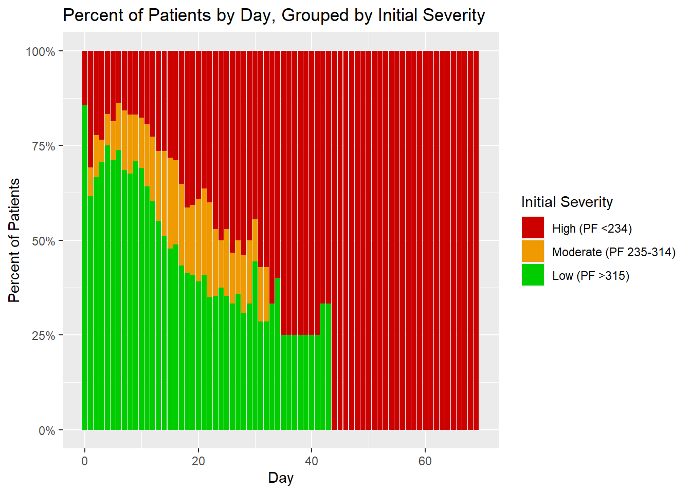
Warning: Removed 309 rows containing missing values (position_stack).
Warning: Removed 309 rows containing missing values (position_stack).Warning: Removed 309 rows containing missing values (position_stack).
Warning: Removed 309 rows containing missing values (position_stack).Warning: Removed 309 rows containing missing values (position_stack).
Warning: Removed 309 rows containing missing values (position_stack).fun_plot_sf("sfseverity_highest")Warning: Removed 309 row(s) containing missing values (geom_path).Warning: Removed 309 row(s) containing missing values (geom_path).Warning: Removed 309 rows containing missing values (position_stack).Warning: Removed 309 rows containing missing values (position_stack).Warning: Removed 309 rows containing missing values (position_stack).
Warning: Removed 309 rows containing missing values (position_stack).Warning: Removed 309 rows containing missing values (position_stack).
Warning: Removed 309 rows containing missing values (position_stack).Warning: Removed 309 rows containing missing values (position_stack).
Warning: Removed 309 rows containing missing values (position_stack).plot_box_sfoxygen <- fun_plot_box_sfoxygen()
print(plot_box_sfoxygen)ggsave(paste0(STR_PLOT_DIR_CLINICAL, "sf-to-oxygenmode.png"),
plot_box_sfoxygen, width = 6, height = 4)
########################
# EXCEL EXPORT #
########################
# Saving summary SF ratio stats by patient
tib_sftrend_sum %>%
writexl::write_xlsx(paste0(STR_DATA_DIR_DEMO_CLIN, "sf-summary.xlsx"))
# Saving daily SF ratio stats by patient
tib_sftrend_byday %>%
writexl::write_xlsx(paste0(STR_DATA_DIR_DEMO_CLIN, "sf-daily.xlsx"))
# Saving daily SF ratio stats by patient
tib_sftrend_admissionlength %>%
writexl::write_xlsx(paste0(STR_DATA_DIR_DEMO_CLIN, "sf-admitlength.xlsx"))Flow Cytometry
- Getting flow data from PBMCs
- TODO: Use WBC for absolute counts w/in 24h +/- windows, check for corresponding differential
########################
# DATAMART: LABS #
########################
# Importing DataMart for labs
tib_labs_all <- fun_import_data( "C19_LABS_GAJEWSKI" ) %>%
select(
mrn = MRN,
time = spec_take_time,
lab = component_name,
value = ord_value
)[1] "Importing C19_LABS_GAJEWSKI"Warning: The following named parsers don't match the column names: mrn# Filtering ALC values only for patients to include
tib_labs_alc <- tib_labs_all %>%
filter(
lab == "ABSOLUTE LYMPHOCYTES"
) %>%
inner_join(
tib_patients_all %>%
select(
mrn, id
)
)Joining, by = "mrn"########################
# FLOW SAMPLES #
########################
# Importing flow sample info
tib_flow_samples <- list.files(path = paste0(STR_BIOBANK, "Flow/Data/results"),
pattern = "^sample.*xlsx$",
full.names = TRUE) %>%
magrittr::extract(which.max(file.mtime(.))) %>%
readxl::read_excel(
col_names = c("flowid", "id", "date", "exp", "qc", "sample", "flowmatch", "unique"),
col_types = c("text", "text", "date", "skip", "text", "text", "text", "text"),
skip = 1
)
# Joining in ALC data when available
tib_flow_samples <- tib_flow_samples %>%
left_join(
tib_labs_alc
) %>%
group_by(unique, lab) %>%
# Getting difference between lab draw time and flow date
mutate(
diff = abs(time - date)/60.0/60.0/24.0
) %>%
# Only using values within 24h
filter(
diff <= 1.0
) %>%
# Taking the closest lab value in time
slice_min(
diff
) %>%
# Joining new data back into full sample list
right_join(
tib_flow_samples
)Joining, by = "id"Joining, by = c("flowid", "id", "date", "qc", "sample", "flowmatch", "unique")########################
# FLOW DATA #
########################
# Getting flow raw data, first getting each of the individual text file names
tib_flow_raw <- lapply(
3:10,
function(exp) {
return(
list.files(path = paste0(STR_BIOBANK, "Flow/Data/results"),
pattern = paste0("^Exp", exp, ".*txt$"),
full.names = TRUE)[1]
)
}
) %>%
# Importing each TSV, forcing the type of each column as a character
lapply(
read_tsv,
col_types = cols(.default = "c")
) %>%
# Adding experiment numbers to each sample name to be able to merge
# with sample info
map2(
3:10,
function(tib, exp) {
return(
mutate(
tib,
flowmatch = paste0(`Sample:`, "_Exp", exp)
)
)
}
) %>%
# Merging each tibble together by row
bind_rows() %>%
# Removing sample column
select(-`Sample:`) %>%
# Removing means/SDs from each experiment
filter(
!grepl("Mean_", flowmatch),
!grepl("SD_", flowmatch)
)
# Merging sample info with flow data
tib_flow_all <- tib_flow_samples %>%
left_join(
tib_flow_raw,
by = c("flowmatch")
)
# Renaming flow samples
list_old_names <- colnames(tib_flow_all)[13:length(colnames(tib_flow_all))]
list_new_names <- unlist(lapply(list_old_names, function(x){return(tail(str_split(x, "/")[[1]], n = 1))}))
# Renaming flow samples
tib_flow_all <- tib_flow_all %>%
rename_at(vars(colnames(.)[13:length(colnames(.))]), ~ list_new_names) %>%
# Removing N/A values as 0
mutate_at(vars(list_new_names), ~as.numeric(str_replace(.,"n/a", "0")))Note: Using an external vector in selections is ambiguous.
i Use `all_of(list_new_names)` instead of `list_new_names` to silence this message.
i See <https://tidyselect.r-lib.org/reference/faq-external-vector.html>.
This message is displayed once per session.list_old_names <- as.list(list_old_names)
names(list_old_names) <- list_new_names
########################
# FLOW GROUPS #
########################
# Getting day of measurement, binning into groups
tib_flow_filtered <- tib_flow_all %>%
# QC: Removing contaminated samples
filter(qc != "contaminated") %>%
# QC: Removing contaminated samples
inner_join(tib_patients_all, by = c("id")) %>%
filter(includeflow) %>%
mutate(day = as.integer(difftime(as.POSIXct(date, format = "%Y-%m-%d", tz = "GMT"),as.POSIXct(d0, format = "%Y-%m-%d", tz = "GMT"),"UTC",units = "days"))) %>%
left_join(tib_sftrend_sum, by = c("id")) %>%
mutate(daygroup = cut(day, c(-1, 5, 10, 15, Inf), c("Days 1-5", "Days 6-10", "Days 11-15", "Days >15")))
# Getting samples that are health controls
tib_flow_healthy <- tib_flow_all %>%
# QC: Removing contaminated samples
filter(qc != "contaminated") %>%
filter(id %in% (filter(tib_patients_annotations, healthy)$id))
########################
# PLOTTING #
########################
# Function to generating a Y axis label using the variable name
fun_flow_y_label <- function(flow) {
label = str_split(flow, " \\| ")[[1]][2]
return(
case_when(
grepl("Freq", label) ~ paste0("Percent of ", str_split(str_replace(label, "Freq. of ", ""), "\\.")[[1]][1], " Cells"),
grepl("Median", label) ~ paste0(str_replace(str_replace(label, "Median \\(", ""), "\\)", ""), " MFI"),
TRUE ~ label
)
)
}
# Function to generating a title using the variable name
fun_flow_title <- function(flow) {
return(str_replace(str_split(flow, " \\| ")[[1]][1], "\\.", " "))
}
# Function to plot the flow plots with jitter/line plot per time group with a simple linear regression side by side
fun_plot_flow <- function(flow, error = FALSE){
# Subsetting data only including above variable
tib_plot <- tib_flow_filtered %>%
filter(!(is.na(sfseverity_highest)), !is.na(day)) %>%
select(daygroup, flow, sfseverity_highest, day)
# Tallying N per group for purposes of labeling, duplicating due to quirk of writing a label per group
tib_plot_tally <- tib_plot %>% group_by(daygroup, sfseverity_highest) %>% summarise(ns = n()) %>% left_join(tib_plot %>% group_by(daygroup) %>% tally)
# Plot 1: Jitter plot over time
plot_one <- tib_plot %>%
ggplot(aes_string(x = "daygroup", y = paste0("`", flow, "`"), color = "sfseverity_highest")) +
# Jitter plot
geom_jitter(width = 0.1) +
# Adding trend line from mean to mean, colored by severity
stat_summary(fun=mean, geom="line", aes(color=sfseverity_highest, group=sfseverity_highest)) +
# Horizontol line for normal donor
geom_hline(aes(yintercept = mean(pull(tib_flow_healthy, flow)), colour = "Normal Donor"), linetype = "dashed", color = "grey", size = 1) +
# Error bars, default not shown
{if(error) stat_summary(fun.data = mean_cl_normal, geom = "errorbar", width = 0.05)} +
# Somewhat hacky way of showing N for each group at the time at 103% of the max value to ensure it shows up on the plot
geom_text(data = tib_plot_tally, aes(label = paste0("n = ", n)), y = max(tib_plot[flow])*1.03, colour="grey20", size=3.5) +
# Removing X axis variable name/label
theme(axis.title.x=element_blank()) +
# Setting titles
labs(color = "Severity", title = fun_flow_title(flow)) + ylab(fun_flow_y_label(flow)) +
# Using list of colors above
scale_colour_manual(values = list_plot_colors)
# Plot 2: Regression over time
# Linear regression
formula <- y ~ poly(x, 1, raw = TRUE)
plot_two <- tib_plot %>%
ggplot(aes_string(x = "day", y = paste0("`", flow, "`"), color = "sfseverity_highest")) +
# Plotting linear regression
geom_smooth(aes(fill = sfseverity_highest), method = "lm", formula = formula) +
# Adding CI
stat_poly_eq(
aes(label = paste(stat(p.value.label), stat(rr.label), sep = "*\", \"*")),
formula = formula,
label.x = "right", label.y = "bottom", size = 3,
parse = TRUE
) +
# Removing X-axis title, legend (since it's used above)
theme(axis.title.x=element_blank(), legend.position = "none") +
# Adding labels
labs(color = "Severity") + ylab(fun_flow_y_label(flow)) +
# Using list of colors above
scale_colour_manual(values = list_plot_colors) +
scale_fill_manual(values = list_plot_colors)
return(
list(plot_one, plot_two)
)
}
fun_plot_flow_box <- function(flow){
# Creating additional factor level for healthy patients
sf_levels_healthy <- c(c("Healthy"), rev(sf_levels))
# Box plot data of only flow values within 5 days of day 10 (D5-15)
tib_plot <- tib_flow_filtered %>%
filter(!(is.na(sfseverity_highest))) %>%
select(flow, sfseverity_highest, day, id) %>%
mutate(day10 = abs(10 - day)) %>%
group_by(id) %>%
slice(which.min(day10)) %>%
filter(day10 <= 5) %>%
bind_rows(select(tib_flow_healthy, flow)) %>%
mutate(sfseverity_highest = factor(case_when(
is.na(sfseverity_highest) ~ "Healthy",
TRUE ~ as.character(sfseverity_highest)
), levels = sf_levels_healthy
)
)
# p-value comparison pairings
comparisons <- list(
c(sf_levels_healthy[1], sf_levels_healthy[2]),
c(sf_levels_healthy[2], sf_levels_healthy[3]),
c(sf_levels_healthy[3], sf_levels_healthy[4]),
c(sf_levels_healthy[1], sf_levels_healthy[3]),
c(sf_levels_healthy[2], sf_levels_healthy[4]),
c(sf_levels_healthy[1], sf_levels_healthy[4])
)
plot_one <- tib_plot %>%
ggplot(aes_string(x = "sfseverity_highest", y = paste0("`", flow, "`"), color = "sfseverity_highest")) +
# Box plot with jitter
geom_boxplot() +
geom_jitter(width = 0.1) +
# p-values from above
stat_compare_means(comparisons = comparisons) +
# Labels
labs(color = "Severity", title = fun_flow_title(flow)) + ylab(fun_flow_y_label(flow)) +
# Colors
scale_colour_manual(values = rev(list_plot_colors)) +
# Legend colors
guides(color = guide_legend(reverse = TRUE)) +
# Remove ticks and variable labels
theme(axis.title.x=element_blank(), axis.text.x=element_blank(), axis.ticks.x=element_blank())
return(plot_one)
}
# List of flow samples to generate figures
c_flow_celltypes <- c(
"B.cells | Freq. of CD45.Live",
"CD4 | Freq. of CD45.Live",
"CD8 | Freq. of CD45.Live",
"NKT cells | Freq. of CD45.Live",
"Monocytes | Freq. of CD45.Live",
"Neutrophils | Freq. of CD45.Live",
"NK cells | Freq. of CD45.Live",
"Tfh | Freq. of CD4",
"Th1 | Freq. of CD4",
"Th17 | Freq. of CD4",
"Th2 | Freq. of CD4",
"Tregs | Freq. of Parent",
"CD4 CM | Freq. of Parent",
"CD4 EM | Freq. of Parent",
"CD4 Naive | Freq. of Parent",
"CD8 CM | Freq. of Parent",
"CD8 EM | Freq. of Parent",
"CD8 Naive | Freq. of Parent",
"CD8 TEMRA | Freq. of Parent"
)
c_flow_cell_activ_inhib <- c(
"CD4 CD38 HLA-DR DP | Freq. of Parent",
"CD4 CD38 pos | Freq. of Parent",
"CD4 PD1 pos | Freq. of Parent",
"CD4 Tim3 pos | Freq. of Parent",
"CD8 CD38 HLA-DR DP | Freq. of Parent",
"CD8 CD38 pos | Freq. of Parent"
)
c_flow_pd1_tim3 <- c(
"CD4 EM | Median (PD-1)",
"CD4 EM | Median (Tim-3)",
"CD4 | Median (PD-1)",
"CD4 | Median (Tim-3)",
"CD4 Naive | Median (PD-1)",
"CD4 Naive | Median (Tim-3)",
"CD8 CM | Median (PD-1)",
"CD8 CM | Median (Tim-3)",
"CD8 EM | Median (PD-1)",
"CD8 EM | Median (Tim-3)",
"CD8 | Median (PD-1)",
"CD8 | Median (Tim-3)",
"CD8 Naive | Median (PD-1)",
"CD8 Naive | Median (Tim-3)",
"CD4 CM | Median (PD-1)",
"CD4 CM | Median (Tim-3)",
"CD8 TEMRA | Median (PD-1)",
"CD8 TEMRA | Median (Tim-3)"
)
# Testing plots, commented
# plots <- flatten(lapply(c_flow_celltypes, fun_plot_flow))
# n <- length(plots)
# nCol <- ceiling(sqrt(n))
# do.call("grid.arrange", c(plots, ncol=nCol))
# flow <- "Plasmablasts | Freq. of CD45.Live"
# fun_plot_flow_box(flow)
# fun_plot_flow(flow)
# Saves all 3 plots as images
fun_flow_png <- function(flow) {
plot_flow <- fun_plot_flow(flow)
print(plot_flow[[1]])
print(plot_flow[[2]])
str_name <- flow %>%
tolower() %>%
str_replace_all("\\. ", "-") %>%
str_replace_all("\\| ", "") %>%
str_replace_all(" ", "-") %>%
str_replace_all("\\.", "-") %>%
str_replace_all("\\(", "") %>%
str_replace_all("\\)", "")
ggsave(paste0(STR_PLOT_DIR_FLOW, str_name, "-scatter-regression.png"),
plot_flow[[1]] + plot_flow[[2]], width = 12, height = 4)
plot_flow_box <- fun_plot_flow_box(flow)
print(plot_flow_box)
ggsave(paste0(STR_PLOT_DIR_FLOW, str_name, "-box.png"), plot_flow_box, width = 6, height = 4)
return()
}
# Saves all plots
lapply(c_flow_celltypes, fun_flow_png)Note: Using an external vector in selections is ambiguous.
i Use `all_of(flow)` instead of `flow` to silence this message.
i See <https://tidyselect.r-lib.org/reference/faq-external-vector.html>.
This message is displayed once per session.Adding missing grouping variables: `unique`, `lab``summarise()` regrouping output by 'daygroup' (override with `.groups` argument)Joining, by = "daygroup"Adding missing grouping variables: `unique`, `lab`Adding missing grouping variables: `unique`, `lab`Warning in wilcox.test.default(c(10.9, 27.9, 8.7, 14.5, 16.3, 21.4, 9.92, :
cannot compute exact p-value with tiesWarning in wilcox.test.default(c(10.9, 27.9, 8.7, 14.5, 16.3, 21.4, 9.92, :
cannot compute exact p-value with tiesAdding missing grouping variables: `unique`, `lab``summarise()` regrouping output by 'daygroup' (override with `.groups` argument)Joining, by = "daygroup"Adding missing grouping variables: `unique`, `lab`Adding missing grouping variables: `unique`, `lab`Warning in wilcox.test.default(c(67, 33.1, 52.1, 39.4, 39.5, 40.9, 46.4, :
cannot compute exact p-value with tiesWarning in wilcox.test.default(c(67, 33.1, 52.1, 39.4, 39.5, 40.9, 46.4, :
cannot compute exact p-value with tiesAdding missing grouping variables: `unique`, `lab``summarise()` regrouping output by 'daygroup' (override with `.groups` argument)Joining, by = "daygroup"Adding missing grouping variables: `unique`, `lab`Adding missing grouping variables: `unique`, `lab`Warning in wilcox.test.default(c(18, 11, 15, 15.1, 13.1, 4.25, 29.6, 29.8, :
cannot compute exact p-value with tiesWarning in wilcox.test.default(c(7.59, 8.1, 14.4, 16.8, 29.3, 17.7, 16.9, :
cannot compute exact p-value with tiesWarning in wilcox.test.default(c(17.2, 7.79, 14.2, 11.9, 20, 11.9, 7.34, :
cannot compute exact p-value with tiesWarning in wilcox.test.default(c(18, 11, 15, 15.1, 13.1, 4.25, 29.6, 29.8, :
cannot compute exact p-value with tiesWarning in wilcox.test.default(c(7.59, 8.1, 14.4, 16.8, 29.3, 17.7, 16.9, :
cannot compute exact p-value with tiesWarning in wilcox.test.default(c(17.2, 7.79, 14.2, 11.9, 20, 11.9, 7.34, :
cannot compute exact p-value with tiesAdding missing grouping variables: `unique`, `lab``summarise()` regrouping output by 'daygroup' (override with `.groups` argument)Joining, by = "daygroup"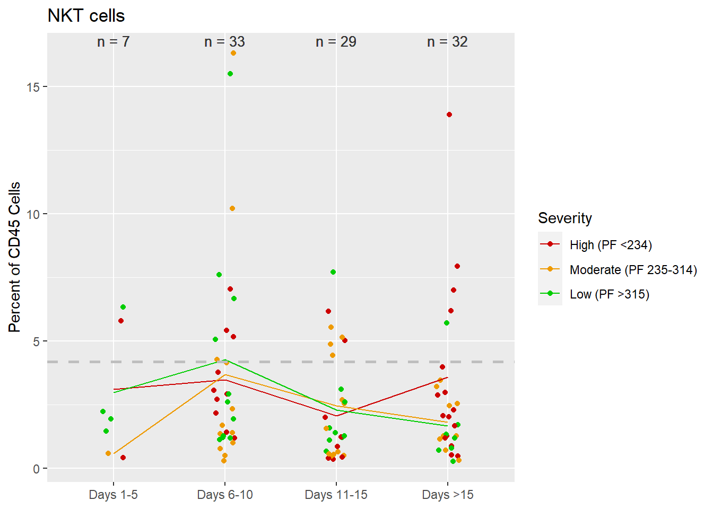
Adding missing grouping variables: `unique`, `lab`Adding missing grouping variables: `unique`, `lab`Warning in wilcox.test.default(c(0.77, 0.21, 2.01, 3.65, 3.78, 0.66, 9.69, :
cannot compute exact p-value with tiesWarning in wilcox.test.default(c(0.77, 0.21, 2.01, 3.65, 3.78, 0.66, 9.69, :
cannot compute exact p-value with tiesWarning in wilcox.test.default(c(1.21, 1.22, 1.18, 3.11, 7.6, 1.13, 2.6, :
cannot compute exact p-value with tiesWarning in wilcox.test.default(c(1.21, 1.22, 1.18, 3.11, 7.6, 1.13, 2.6, :
cannot compute exact p-value with tiesWarning in wilcox.test.default(c(0.77, 0.21, 2.01, 3.65, 3.78, 0.66, 9.69, :
cannot compute exact p-value with tiesWarning in wilcox.test.default(c(0.77, 0.21, 2.01, 3.65, 3.78, 0.66, 9.69, :
cannot compute exact p-value with tiesWarning in wilcox.test.default(c(1.21, 1.22, 1.18, 3.11, 7.6, 1.13, 2.6, :
cannot compute exact p-value with tiesWarning in wilcox.test.default(c(1.21, 1.22, 1.18, 3.11, 7.6, 1.13, 2.6, :
cannot compute exact p-value with tiesAdding missing grouping variables: `unique`, `lab``summarise()` regrouping output by 'daygroup' (override with `.groups` argument)Joining, by = "daygroup"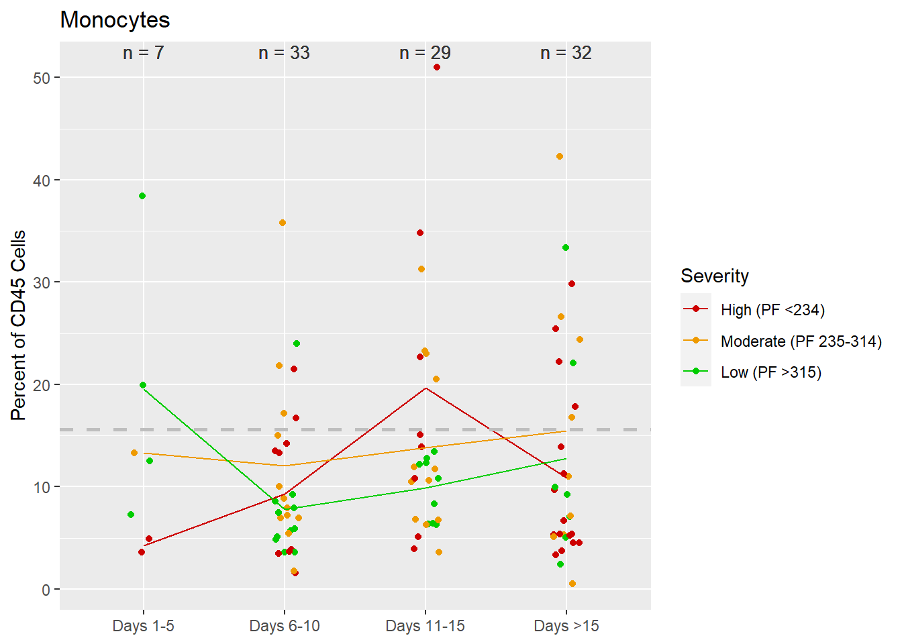
Adding missing grouping variables: `unique`, `lab`Adding missing grouping variables: `unique`, `lab`Warning in wilcox.test.default(c(14.9, 19.3, 23, 22.1, 11.7, 21.1, 12.2, :
cannot compute exact p-value with tiesWarning in wilcox.test.default(c(14.9, 19.3, 23, 22.1, 11.7, 21.1, 12.2, :
cannot compute exact p-value with tiesAdding missing grouping variables: `unique`, `lab``summarise()` regrouping output by 'daygroup' (override with `.groups` argument)Joining, by = "daygroup"Adding missing grouping variables: `unique`, `lab`Adding missing grouping variables: `unique`, `lab`Warning in wilcox.test.default(c(8.92, 0.79, 0.49, 0.33, 0.00737, 0.02, : cannot
compute exact p-value with tiesWarning in wilcox.test.default(c(0.15, 0.29, 0.55, 0.32, 0.45, 0.23, 0.047, :
cannot compute exact p-value with tiesWarning in wilcox.test.default(c(0.15, 0.29, 0.55, 0.32, 0.45, 0.23, 0.047, :
cannot compute exact p-value with tiesWarning in wilcox.test.default(c(2.23, 0.69, 0.11, 0.16, 0.27, 6.79, 0.16, :
cannot compute exact p-value with tiesWarning in wilcox.test.default(c(8.92, 0.79, 0.49, 0.33, 0.00737, 0.02, : cannot
compute exact p-value with tiesWarning in wilcox.test.default(c(0.15, 0.29, 0.55, 0.32, 0.45, 0.23, 0.047, :
cannot compute exact p-value with tiesWarning in wilcox.test.default(c(0.15, 0.29, 0.55, 0.32, 0.45, 0.23, 0.047, :
cannot compute exact p-value with tiesWarning in wilcox.test.default(c(2.23, 0.69, 0.11, 0.16, 0.27, 6.79, 0.16, :
cannot compute exact p-value with tiesAdding missing grouping variables: `unique`, `lab``summarise()` regrouping output by 'daygroup' (override with `.groups` argument)Joining, by = "daygroup"Adding missing grouping variables: `unique`, `lab`Adding missing grouping variables: `unique`, `lab`Warning in wilcox.test.default(c(2.84, 8.28, 5.19, 7.2, 9.97, 4.31, 10.9, :
cannot compute exact p-value with tiesWarning in wilcox.test.default(c(2.84, 8.28, 5.19, 7.2, 9.97, 4.31, 10.9, :
cannot compute exact p-value with tiesWarning in wilcox.test.default(c(3.83, 2.87, 2.87, 8.46, 6.14, 6.6, 12.4, :
cannot compute exact p-value with tiesWarning in wilcox.test.default(c(3.83, 2.87, 2.87, 8.46, 6.14, 6.6, 12.4, :
cannot compute exact p-value with tiesWarning in wilcox.test.default(c(3.94, 6.85, 3.21, 6.16, 4.83, 2.23, 4.07, :
cannot compute exact p-value with tiesWarning in wilcox.test.default(c(2.84, 8.28, 5.19, 7.2, 9.97, 4.31, 10.9, :
cannot compute exact p-value with tiesWarning in wilcox.test.default(c(2.84, 8.28, 5.19, 7.2, 9.97, 4.31, 10.9, :
cannot compute exact p-value with tiesWarning in wilcox.test.default(c(3.83, 2.87, 2.87, 8.46, 6.14, 6.6, 12.4, :
cannot compute exact p-value with tiesWarning in wilcox.test.default(c(3.83, 2.87, 2.87, 8.46, 6.14, 6.6, 12.4, :
cannot compute exact p-value with tiesWarning in wilcox.test.default(c(3.94, 6.85, 3.21, 6.16, 4.83, 2.23, 4.07, :
cannot compute exact p-value with tiesAdding missing grouping variables: `unique`, `lab``summarise()` regrouping output by 'daygroup' (override with `.groups` argument)Joining, by = "daygroup"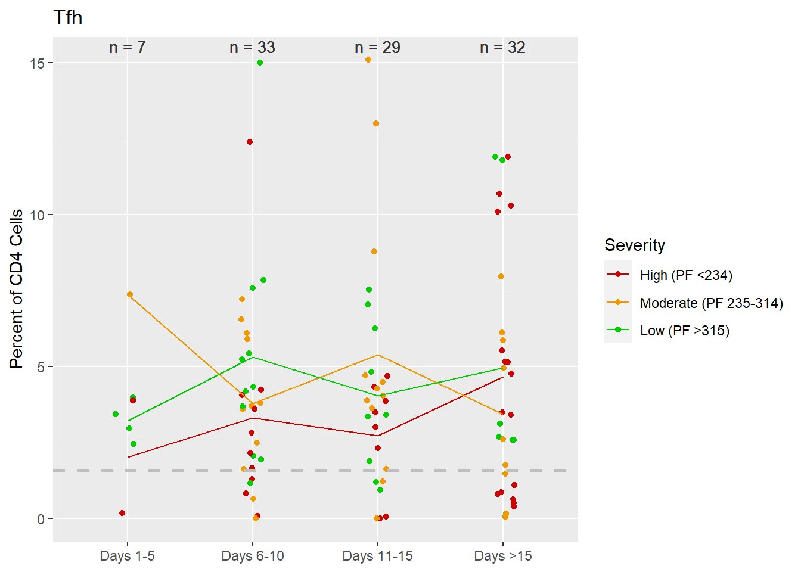
Adding missing grouping variables: `unique`, `lab`Adding missing grouping variables: `unique`, `lab`Adding missing grouping variables: `unique`, `lab``summarise()` regrouping output by 'daygroup' (override with `.groups` argument)Joining, by = "daygroup"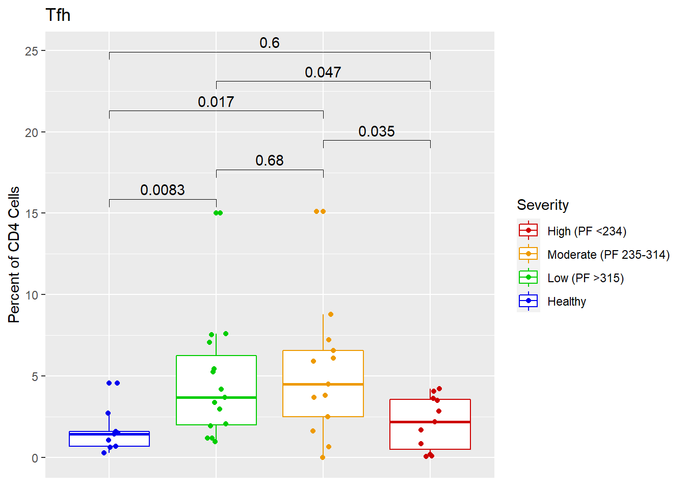
Adding missing grouping variables: `unique`, `lab`Adding missing grouping variables: `unique`, `lab`Warning in wilcox.test.default(c(12.6, 58.4, 26.7, 54.1, 74, 56.6, 35.4, :
cannot compute exact p-value with tiesWarning in wilcox.test.default(c(21.1, 15, 16.7, 22.5, 40.1, 19.8, 27.6, :
cannot compute exact p-value with tiesWarning in wilcox.test.default(c(21.1, 15, 16.7, 22.5, 40.1, 19.8, 27.6, :
cannot compute exact p-value with tiesWarning in wilcox.test.default(c(12.6, 58.4, 26.7, 54.1, 74, 56.6, 35.4, :
cannot compute exact p-value with tiesWarning in wilcox.test.default(c(21.1, 15, 16.7, 22.5, 40.1, 19.8, 27.6, :
cannot compute exact p-value with tiesWarning in wilcox.test.default(c(21.1, 15, 16.7, 22.5, 40.1, 19.8, 27.6, :
cannot compute exact p-value with tiesAdding missing grouping variables: `unique`, `lab``summarise()` regrouping output by 'daygroup' (override with `.groups` argument)Joining, by = "daygroup"Adding missing grouping variables: `unique`, `lab`Adding missing grouping variables: `unique`, `lab`Warning in wilcox.test.default(c(1.35, 0.5, 7.28, 1.92, 0.24, 0.97, 2.07, :
cannot compute exact p-value with tiesWarning in wilcox.test.default(c(0.7, 0.27, 7.58, 2.22, 1.43, 0.29, 0.47, :
cannot compute exact p-value with tiesWarning in wilcox.test.default(c(1.35, 0.5, 7.28, 1.92, 0.24, 0.97, 2.07, :
cannot compute exact p-value with tiesWarning in wilcox.test.default(c(0.7, 0.27, 7.58, 2.22, 1.43, 0.29, 0.47, :
cannot compute exact p-value with tiesAdding missing grouping variables: `unique`, `lab``summarise()` regrouping output by 'daygroup' (override with `.groups` argument)Joining, by = "daygroup"Adding missing grouping variables: `unique`, `lab`Adding missing grouping variables: `unique`, `lab`Adding missing grouping variables: `unique`, `lab``summarise()` regrouping output by 'daygroup' (override with `.groups` argument)Joining, by = "daygroup" 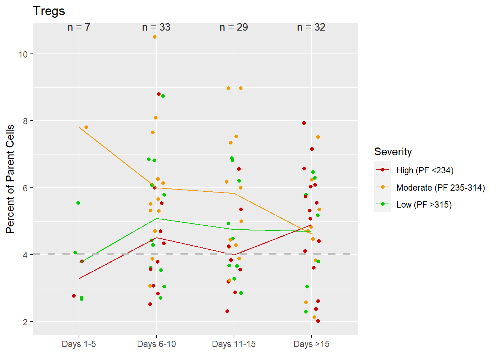
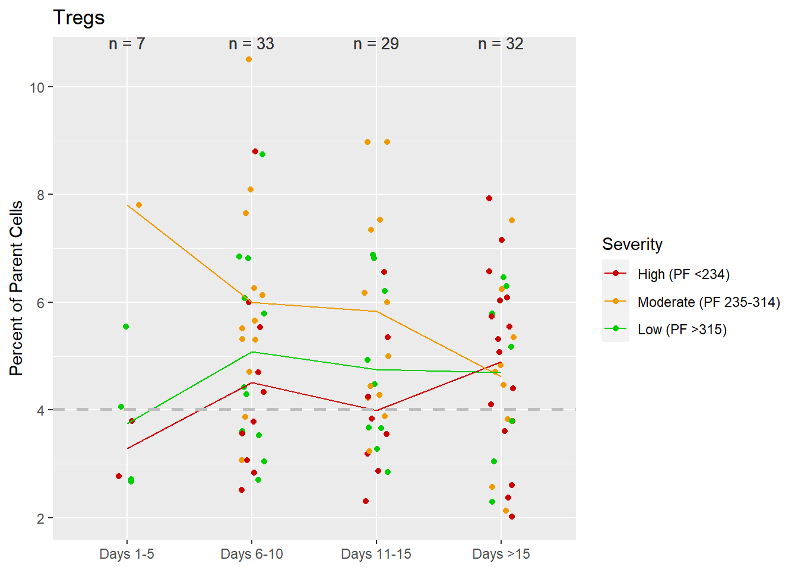
Adding missing grouping variables: `unique`, `lab`Adding missing grouping variables: `unique`, `lab`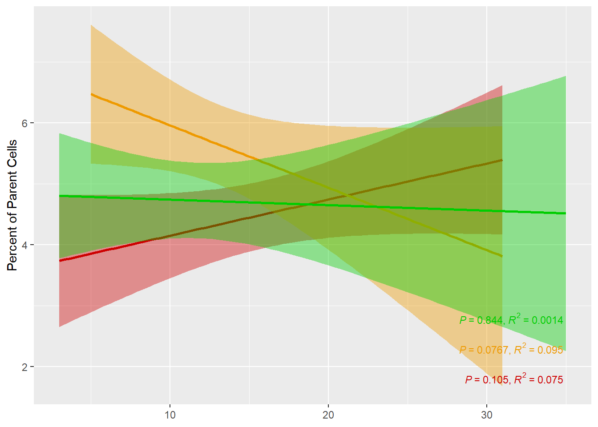
Adding missing grouping variables: `unique`, `lab``summarise()` regrouping output by 'daygroup' (override with `.groups` argument)Joining, by = "daygroup"Adding missing grouping variables: `unique`, `lab`Adding missing grouping variables: `unique`, `lab`Warning in wilcox.test.default(c(24.8, 20.4, 44, 50.8, 40.1, 50.2, 20.4, :
cannot compute exact p-value with tiesWarning in wilcox.test.default(c(24.8, 20.4, 44, 50.8, 40.1, 50.2, 20.4, :
cannot compute exact p-value with tiesWarning in wilcox.test.default(c(24.8, 20.4, 44, 50.8, 40.1, 50.2, 20.4, :
cannot compute exact p-value with tiesWarning in wilcox.test.default(c(24.8, 20.4, 44, 50.8, 40.1, 50.2, 20.4, :
cannot compute exact p-value with tiesWarning in wilcox.test.default(c(24.8, 20.4, 44, 50.8, 40.1, 50.2, 20.4, :
cannot compute exact p-value with tiesWarning in wilcox.test.default(c(24.8, 20.4, 44, 50.8, 40.1, 50.2, 20.4, :
cannot compute exact p-value with tiesAdding missing grouping variables: `unique`, `lab``summarise()` regrouping output by 'daygroup' (override with `.groups` argument)Joining, by = "daygroup"Adding missing grouping variables: `unique`, `lab`Adding missing grouping variables: `unique`, `lab`Warning in wilcox.test.default(c(4, 2.4, 7.41, 7.58, 8.17, 8.19, 10, 9.61, :
cannot compute exact p-value with tiesWarning in wilcox.test.default(c(4, 2.4, 7.41, 7.58, 8.17, 8.19, 10, 9.61, :
cannot compute exact p-value with tiesWarning in wilcox.test.default(c(2.47, 7.26, 5.35, 4.19, 10.4, 4.12, 4.87, :
cannot compute exact p-value with tiesWarning in wilcox.test.default(c(3.03, 1.33, 10, 6.95, 5.05, 8.01, 5.89, :
cannot compute exact p-value with tiesWarning in wilcox.test.default(c(4, 2.4, 7.41, 7.58, 8.17, 8.19, 10, 9.61, :
cannot compute exact p-value with tiesWarning in wilcox.test.default(c(4, 2.4, 7.41, 7.58, 8.17, 8.19, 10, 9.61, :
cannot compute exact p-value with tiesWarning in wilcox.test.default(c(2.47, 7.26, 5.35, 4.19, 10.4, 4.12, 4.87, :
cannot compute exact p-value with tiesWarning in wilcox.test.default(c(3.03, 1.33, 10, 6.95, 5.05, 8.01, 5.89, :
cannot compute exact p-value with tiesAdding missing grouping variables: `unique`, `lab``summarise()` regrouping output by 'daygroup' (override with `.groups` argument)Joining, by = "daygroup"Adding missing grouping variables: `unique`, `lab`Adding missing grouping variables: `unique`, `lab`Warning in wilcox.test.default(c(69.5, 75.8, 43.8, 35.7, 45, 38.2, 63.5, :
cannot compute exact p-value with tiesWarning in wilcox.test.default(c(60.2, 61.1, 55.4, 50.1, 52.8, 63.5, 61.8, :
cannot compute exact p-value with tiesWarning in wilcox.test.default(c(60.2, 61.1, 55.4, 50.1, 52.8, 63.5, 61.8, :
cannot compute exact p-value with tiesWarning in wilcox.test.default(c(81.5, 76, 31.4, 61.4, 60.5, 34.3, 36.4, :
cannot compute exact p-value with tiesWarning in wilcox.test.default(c(69.5, 75.8, 43.8, 35.7, 45, 38.2, 63.5, :
cannot compute exact p-value with tiesWarning in wilcox.test.default(c(60.2, 61.1, 55.4, 50.1, 52.8, 63.5, 61.8, :
cannot compute exact p-value with tiesWarning in wilcox.test.default(c(60.2, 61.1, 55.4, 50.1, 52.8, 63.5, 61.8, :
cannot compute exact p-value with tiesWarning in wilcox.test.default(c(81.5, 76, 31.4, 61.4, 60.5, 34.3, 36.4, :
cannot compute exact p-value with tiesAdding missing grouping variables: `unique`, `lab``summarise()` regrouping output by 'daygroup' (override with `.groups` argument)Joining, by = "daygroup"Adding missing grouping variables: `unique`, `lab`Adding missing grouping variables: `unique`, `lab`Warning in wilcox.test.default(c(6.09, 7.14, 10.3, 15.2, 13.4, 16.6, 8.71, :
cannot compute exact p-value with tiesWarning in wilcox.test.default(c(6.09, 7.14, 10.3, 15.2, 13.4, 16.6, 8.71, :
cannot compute exact p-value with tiesAdding missing grouping variables: `unique`, `lab``summarise()` regrouping output by 'daygroup' (override with `.groups` argument)Joining, by = "daygroup"Adding missing grouping variables: `unique`, `lab`Adding missing grouping variables: `unique`, `lab`Warning in wilcox.test.default(c(17.6, 22.5, 16.4, 16.1, 32.5, 19.5, 27.9, :
cannot compute exact p-value with tiesWarning in wilcox.test.default(c(17.6, 22.5, 16.4, 16.1, 32.5, 19.5, 27.9, :
cannot compute exact p-value with tiesWarning in wilcox.test.default(c(23.2, 17.1, 9.25, 17.1, 21.3, 3.25, 11, :
cannot compute exact p-value with tiesWarning in wilcox.test.default(c(23.2, 17.1, 9.25, 17.1, 21.3, 3.25, 11, :
cannot compute exact p-value with tiesWarning in wilcox.test.default(c(17.6, 22.5, 16.4, 16.1, 32.5, 19.5, 27.9, :
cannot compute exact p-value with tiesWarning in wilcox.test.default(c(17.6, 22.5, 16.4, 16.1, 32.5, 19.5, 27.9, :
cannot compute exact p-value with tiesWarning in wilcox.test.default(c(23.2, 17.1, 9.25, 17.1, 21.3, 3.25, 11, :
cannot compute exact p-value with tiesWarning in wilcox.test.default(c(23.2, 17.1, 9.25, 17.1, 21.3, 3.25, 11, :
cannot compute exact p-value with tiesAdding missing grouping variables: `unique`, `lab``summarise()` regrouping output by 'daygroup' (override with `.groups` argument)Joining, by = "daygroup"Adding missing grouping variables: `unique`, `lab`Adding missing grouping variables: `unique`, `lab`Adding missing grouping variables: `unique`, `lab``summarise()` regrouping output by 'daygroup' (override with `.groups` argument)Joining, by = "daygroup"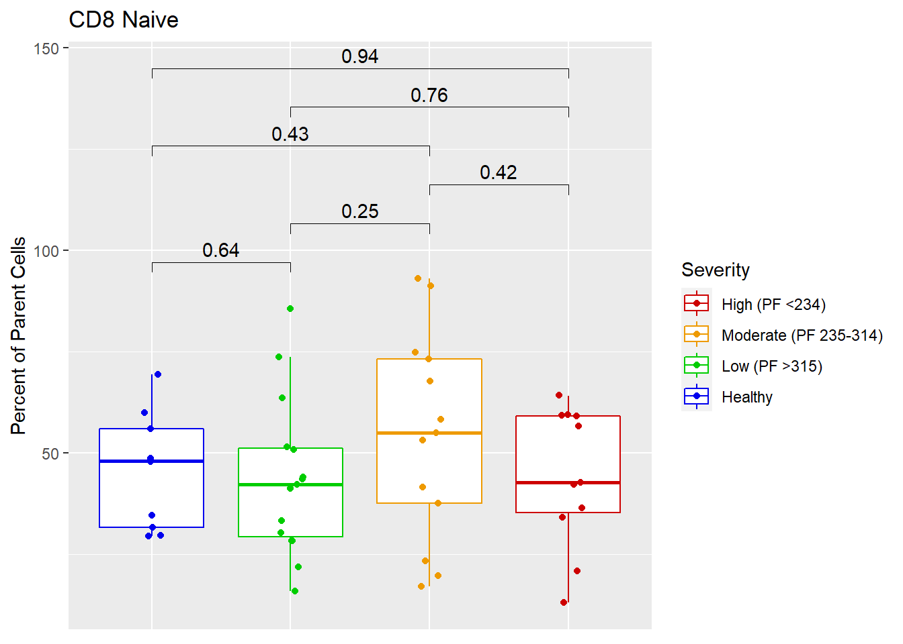
Adding missing grouping variables: `unique`, `lab`Adding missing grouping variables: `unique`, `lab`[[1]]
NULL
[[2]]
NULL
[[3]]
NULL
[[4]]
NULL
[[5]]
NULL
[[6]]
NULL
[[7]]
NULL
[[8]]
NULL
[[9]]
NULL
[[10]]
NULL
[[11]]
NULL
[[12]]
NULL
[[13]]
NULL
[[14]]
NULL
[[15]]
NULL
[[16]]
NULL
[[17]]
NULL
[[18]]
NULL
[[19]]
NULLlapply(c_flow_cell_activ_inhib, fun_flow_png)Adding missing grouping variables: `unique`, `lab``summarise()` regrouping output by 'daygroup' (override with `.groups` argument)Joining, by = "daygroup"Adding missing grouping variables: `unique`, `lab`Adding missing grouping variables: `unique`, `lab`Warning in wilcox.test.default(c(0.43, 0.88, 1.02, 6.06, 0.67, 1.63, 3.44, :
cannot compute exact p-value with tiesWarning in wilcox.test.default(c(0.43, 0.88, 1.02, 6.06, 0.67, 1.63, 3.44, :
cannot compute exact p-value with tiesWarning in wilcox.test.default(c(0.43, 0.88, 1.02, 6.06, 0.67, 1.63, 3.44, :
cannot compute exact p-value with tiesWarning in wilcox.test.default(c(0.6, 3.95, 0.9, 3.4, 0.94, 0.57, 1.08, : cannot
compute exact p-value with tiesWarning in wilcox.test.default(c(1.33, 0.37, 1.17, 1.38, 1.52, 5.89, 0.88, :
cannot compute exact p-value with tiesWarning in wilcox.test.default(c(0.43, 0.88, 1.02, 6.06, 0.67, 1.63, 3.44, :
cannot compute exact p-value with tiesWarning in wilcox.test.default(c(0.43, 0.88, 1.02, 6.06, 0.67, 1.63, 3.44, :
cannot compute exact p-value with tiesWarning in wilcox.test.default(c(0.43, 0.88, 1.02, 6.06, 0.67, 1.63, 3.44, :
cannot compute exact p-value with tiesWarning in wilcox.test.default(c(0.6, 3.95, 0.9, 3.4, 0.94, 0.57, 1.08, : cannot
compute exact p-value with tiesWarning in wilcox.test.default(c(1.33, 0.37, 1.17, 1.38, 1.52, 5.89, 0.88, :
cannot compute exact p-value with tiesAdding missing grouping variables: `unique`, `lab``summarise()` regrouping output by 'daygroup' (override with `.groups` argument)Joining, by = "daygroup"
Adding missing grouping variables: `unique`, `lab`Adding missing grouping variables: `unique`, `lab`Warning in wilcox.test.default(c(15.8, 18.2, 31.3, 24.6, 6.3, 16.7, 15.7, :
cannot compute exact p-value with tiesWarning in wilcox.test.default(c(15.8, 18.2, 31.3, 24.6, 6.3, 16.7, 15.7, :
cannot compute exact p-value with tiesWarning in wilcox.test.default(c(3.38, 10, 9.92, 7.27, 8.71, 7.58, 6.3, : cannot
compute exact p-value with tiesWarning in wilcox.test.default(c(6.4, 6.4, 5.56, 7.89, 7.48, 10.3, 5.25, :
cannot compute exact p-value with tiesWarning in wilcox.test.default(c(15.8, 18.2, 31.3, 24.6, 6.3, 16.7, 15.7, :
cannot compute exact p-value with tiesWarning in wilcox.test.default(c(15.8, 18.2, 31.3, 24.6, 6.3, 16.7, 15.7, :
cannot compute exact p-value with tiesWarning in wilcox.test.default(c(3.38, 10, 9.92, 7.27, 8.71, 7.58, 6.3, : cannot
compute exact p-value with tiesWarning in wilcox.test.default(c(6.4, 6.4, 5.56, 7.89, 7.48, 10.3, 5.25, :
cannot compute exact p-value with tiesAdding missing grouping variables: `unique`, `lab``summarise()` regrouping output by 'daygroup' (override with `.groups` argument)Joining, by = "daygroup"Adding missing grouping variables: `unique`, `lab`Adding missing grouping variables: `unique`, `lab`
Warning in wilcox.test.default(c(8.79, 8.97, 7.1, 8.15, 14.4, 4.19, 4.46, :
cannot compute exact p-value with tiesWarning in wilcox.test.default(c(8.79, 8.97, 7.1, 8.15, 14.4, 4.19, 4.46, :
cannot compute exact p-value with tiesAdding missing grouping variables: `unique`, `lab``summarise()` regrouping output by 'daygroup' (override with `.groups` argument)Joining, by = "daygroup"Adding missing grouping variables: `unique`, `lab`Adding missing grouping variables: `unique`, `lab`Warning in wilcox.test.default(c(0.31, 0.25, 0.73, 1.23, 0.23, 0.4, 0.36, :
cannot compute exact p-value with tiesWarning in wilcox.test.default(c(0.31, 0.25, 0.73, 1.23, 0.23, 0.4, 0.36, :
cannot compute exact p-value with tiesWarning in wilcox.test.default(c(0.31, 0.25, 0.73, 1.23, 0.23, 0.4, 0.36, :
cannot compute exact p-value with tiesWarning in wilcox.test.default(c(2.18, 1.62, 0.4, 0.71, 0.33, 0.5, 0.59, :
cannot compute exact p-value with tiesWarning in wilcox.test.default(c(0.31, 0.25, 0.73, 1.23, 0.23, 0.4, 0.36, :
cannot compute exact p-value with tiesWarning in wilcox.test.default(c(0.31, 0.25, 0.73, 1.23, 0.23, 0.4, 0.36, :
cannot compute exact p-value with tiesWarning in wilcox.test.default(c(0.31, 0.25, 0.73, 1.23, 0.23, 0.4, 0.36, :
cannot compute exact p-value with tiesWarning in wilcox.test.default(c(2.18, 1.62, 0.4, 0.71, 0.33, 0.5, 0.59, :
cannot compute exact p-value with tiesAdding missing grouping variables: `unique`, `lab``summarise()` regrouping output by 'daygroup' (override with `.groups` argument)Joining, by = "daygroup"
Adding missing grouping variables: `unique`, `lab`Adding missing grouping variables: `unique`, `lab`Adding missing grouping variables: `unique`, `lab``summarise()` regrouping output by 'daygroup' (override with `.groups` argument)Joining, by = "daygroup"Adding missing grouping variables: `unique`, `lab`Adding missing grouping variables: `unique`, `lab`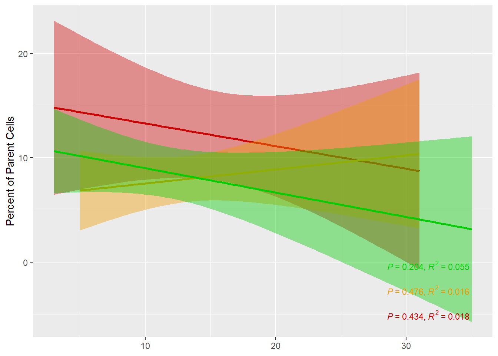
Warning in wilcox.test.default(c(3.89, 2.2, 19.3, 14.5, 0.72, 5.95, 1.59, :
cannot compute exact p-value with tiesWarning in wilcox.test.default(c(8.59, 17, 4.33, 4, 25.6, 3.16, 7.49, 1.86, :
cannot compute exact p-value with tiesWarning in wilcox.test.default(c(8.59, 17, 4.33, 4, 25.6, 3.16, 7.49, 1.86, :
cannot compute exact p-value with tiesWarning in wilcox.test.default(c(3.89, 2.2, 19.3, 14.5, 0.72, 5.95, 1.59, :
cannot compute exact p-value with tiesWarning in wilcox.test.default(c(8.59, 17, 4.33, 4, 25.6, 3.16, 7.49, 1.86, :
cannot compute exact p-value with tiesWarning in wilcox.test.default(c(8.59, 17, 4.33, 4, 25.6, 3.16, 7.49, 1.86, :
cannot compute exact p-value with ties[[1]]
NULL
[[2]]
NULL
[[3]]
NULL
[[4]]
NULL
[[5]]
NULL
[[6]]
NULLlapply(c_flow_pd1_tim3, fun_flow_png)Adding missing grouping variables: `unique`, `lab``summarise()` regrouping output by 'daygroup' (override with `.groups` argument)Joining, by = "daygroup"Adding missing grouping variables: `unique`, `lab`Adding missing grouping variables: `unique`, `lab`Adding missing grouping variables: `unique`, `lab``summarise()` regrouping output by 'daygroup' (override with `.groups` argument)Joining, by = "daygroup"Adding missing grouping variables: `unique`, `lab`Adding missing grouping variables: `unique`, `lab`Warning in wilcox.test.default(c(24.3, 186, 1196, 1163, 591, 746, 672, 648, :
cannot compute exact p-value with tiesWarning in wilcox.test.default(c(24.3, 186, 1196, 1163, 591, 746, 672, 648, :
cannot compute exact p-value with tiesWarning in wilcox.test.default(c(24.3, 186, 1196, 1163, 591, 746, 672, 648, :
cannot compute exact p-value with tiesWarning in wilcox.test.default(c(2385, 1097, 283, 835, 583, 380, 819, 681, :
cannot compute exact p-value with tiesWarning in wilcox.test.default(c(24.3, 186, 1196, 1163, 591, 746, 672, 648, :
cannot compute exact p-value with tiesWarning in wilcox.test.default(c(24.3, 186, 1196, 1163, 591, 746, 672, 648, :
cannot compute exact p-value with tiesWarning in wilcox.test.default(c(24.3, 186, 1196, 1163, 591, 746, 672, 648, :
cannot compute exact p-value with tiesWarning in wilcox.test.default(c(2385, 1097, 283, 835, 583, 380, 819, 681, :
cannot compute exact p-value with tiesAdding missing grouping variables: `unique`, `lab``summarise()` regrouping output by 'daygroup' (override with `.groups` argument)Joining, by = "daygroup"Adding missing grouping variables: `unique`, `lab`Adding missing grouping variables: `unique`, `lab`Warning in wilcox.test.default(c(697, 405, 1568, 1245, 917, 1072, 1122, : cannot
compute exact p-value with tiesWarning in wilcox.test.default(c(697, 405, 1568, 1245, 917, 1072, 1122, : cannot
compute exact p-value with tiesWarning in wilcox.test.default(c(697, 405, 1568, 1245, 917, 1072, 1122, : cannot
compute exact p-value with tiesWarning in wilcox.test.default(c(4649, 950, 860, 990, 1311, 1081, 1031, : cannot
compute exact p-value with tiesWarning in wilcox.test.default(c(4649, 950, 860, 990, 1311, 1081, 1031, : cannot
compute exact p-value with tiesWarning in wilcox.test.default(c(697, 405, 1568, 1245, 917, 1072, 1122, : cannot
compute exact p-value with tiesWarning in wilcox.test.default(c(697, 405, 1568, 1245, 917, 1072, 1122, : cannot
compute exact p-value with tiesWarning in wilcox.test.default(c(697, 405, 1568, 1245, 917, 1072, 1122, : cannot
compute exact p-value with tiesWarning in wilcox.test.default(c(4649, 950, 860, 990, 1311, 1081, 1031, : cannot
compute exact p-value with tiesWarning in wilcox.test.default(c(4649, 950, 860, 990, 1311, 1081, 1031, : cannot
compute exact p-value with tiesAdding missing grouping variables: `unique`, `lab``summarise()` regrouping output by 'daygroup' (override with `.groups` argument)Joining, by = "daygroup"
Adding missing grouping variables: `unique`, `lab`Adding missing grouping variables: `unique`, `lab`Warning in wilcox.test.default(c(-218, -162, 421, 534, 445, 542, 372, 162, :
cannot compute exact p-value with tiesWarning in wilcox.test.default(c(-218, -162, 421, 534, 445, 542, 372, 162, :
cannot compute exact p-value with tiesWarning in wilcox.test.default(c(-218, -162, 421, 534, 445, 542, 372, 162, :
cannot compute exact p-value with tiesWarning in wilcox.test.default(c(1510, 0, -105, -64.7, -64.7, -64.7, 8.09, :
cannot compute exact p-value with tiesWarning in wilcox.test.default(c(1510, 0, -105, -64.7, -64.7, -64.7, 8.09, :
cannot compute exact p-value with tiesWarning in wilcox.test.default(c(518, 1402, 575, -24.3, 388, 974, 469, 186, :
cannot compute exact p-value with tiesWarning in wilcox.test.default(c(-218, -162, 421, 534, 445, 542, 372, 162, :
cannot compute exact p-value with tiesWarning in wilcox.test.default(c(-218, -162, 421, 534, 445, 542, 372, 162, :
cannot compute exact p-value with tiesWarning in wilcox.test.default(c(-218, -162, 421, 534, 445, 542, 372, 162, :
cannot compute exact p-value with tiesWarning in wilcox.test.default(c(1510, 0, -105, -64.7, -64.7, -64.7, 8.09, :
cannot compute exact p-value with tiesWarning in wilcox.test.default(c(1510, 0, -105, -64.7, -64.7, -64.7, 8.09, :
cannot compute exact p-value with tiesWarning in wilcox.test.default(c(518, 1402, 575, -24.3, 388, 974, 469, 186, :
cannot compute exact p-value with tiesAdding missing grouping variables: `unique`, `lab``summarise()` regrouping output by 'daygroup' (override with `.groups` argument)Joining, by = "daygroup"Adding missing grouping variables: `unique`, `lab`Adding missing grouping variables: `unique`, `lab`Warning in wilcox.test.default(c(502, 251, 868, 599, 729, 664, 835, 795, :
cannot compute exact p-value with tiesWarning in wilcox.test.default(c(502, 251, 868, 599, 729, 664, 835, 795, :
cannot compute exact p-value with tiesWarning in wilcox.test.default(c(502, 251, 868, 599, 729, 664, 835, 795, :
cannot compute exact p-value with tiesWarning in wilcox.test.default(c(4258, 567, 405, 567, 672, 778, 770, 1311, :
cannot compute exact p-value with tiesWarning in wilcox.test.default(c(4258, 567, 405, 567, 672, 778, 770, 1311, :
cannot compute exact p-value with tiesWarning in wilcox.test.default(c(502, 251, 868, 599, 729, 664, 835, 795, :
cannot compute exact p-value with tiesWarning in wilcox.test.default(c(502, 251, 868, 599, 729, 664, 835, 795, :
cannot compute exact p-value with tiesWarning in wilcox.test.default(c(502, 251, 868, 599, 729, 664, 835, 795, :
cannot compute exact p-value with tiesWarning in wilcox.test.default(c(4258, 567, 405, 567, 672, 778, 770, 1311, :
cannot compute exact p-value with tiesWarning in wilcox.test.default(c(4258, 567, 405, 567, 672, 778, 770, 1311, :
cannot compute exact p-value with tiesAdding missing grouping variables: `unique`, `lab``summarise()` regrouping output by 'daygroup' (override with `.groups` argument)Joining, by = "daygroup"Adding missing grouping variables: `unique`, `lab`Adding missing grouping variables: `unique`, `lab`Warning in wilcox.test.default(c(-291, -194, 129, 121, 413, 372, 291, 16.2, :
cannot compute exact p-value with tiesWarning in wilcox.test.default(c(-291, -194, 129, 121, 413, 372, 291, 16.2, :
cannot compute exact p-value with tiesWarning in wilcox.test.default(c(-291, -194, 129, 121, 413, 372, 291, 16.2, :
cannot compute exact p-value with tiesWarning in wilcox.test.default(c(1278, -170, -235, -259, -251, -170, -113, :
cannot compute exact p-value with tiesWarning in wilcox.test.default(c(1278, -170, -235, -259, -251, -170, -113, :
cannot compute exact p-value with tiesWarning in wilcox.test.default(c(421, 1303, 380, -178, 307, 567, 348, -56.6, :
cannot compute exact p-value with tiesWarning in wilcox.test.default(c(-291, -194, 129, 121, 413, 372, 291, 16.2, :
cannot compute exact p-value with tiesWarning in wilcox.test.default(c(-291, -194, 129, 121, 413, 372, 291, 16.2, :
cannot compute exact p-value with tiesWarning in wilcox.test.default(c(-291, -194, 129, 121, 413, 372, 291, 16.2, :
cannot compute exact p-value with tiesWarning in wilcox.test.default(c(1278, -170, -235, -259, -251, -170, -113, :
cannot compute exact p-value with tiesWarning in wilcox.test.default(c(1278, -170, -235, -259, -251, -170, -113, :
cannot compute exact p-value with tiesWarning in wilcox.test.default(c(421, 1303, 380, -178, 307, 567, 348, -56.6, :
cannot compute exact p-value with tiesAdding missing grouping variables: `unique`, `lab``summarise()` regrouping output by 'daygroup' (override with `.groups` argument)Joining, by = "daygroup"Adding missing grouping variables: `unique`, `lab`Adding missing grouping variables: `unique`, `lab`
Warning in wilcox.test.default(c(8524, 3794, 3973, 3399, 9282, 4186, 3609, :
cannot compute exact p-value with tiesWarning in wilcox.test.default(c(8524, 3794, 3973, 3399, 9282, 4186, 3609, :
cannot compute exact p-value with tiesAdding missing grouping variables: `unique`, `lab``summarise()` regrouping output by 'daygroup' (override with `.groups` argument)Joining, by = "daygroup"Adding missing grouping variables: `unique`, `lab`Adding missing grouping variables: `unique`, `lab`
Warning in wilcox.test.default(c(24.3, 202, 795, 892, 526, 689, 510, 599, :
cannot compute exact p-value with tiesWarning in wilcox.test.default(c(24.3, 202, 795, 892, 526, 689, 510, 599, :
cannot compute exact p-value with tiesWarning in wilcox.test.default(c(2049, 721, 445, 705, 770, 738, 616, 559, :
cannot compute exact p-value with tiesWarning in wilcox.test.default(c(2049, 721, 445, 705, 770, 738, 616, 559, :
cannot compute exact p-value with tiesWarning in wilcox.test.default(c(24.3, 202, 795, 892, 526, 689, 510, 599, :
cannot compute exact p-value with tiesWarning in wilcox.test.default(c(24.3, 202, 795, 892, 526, 689, 510, 599, :
cannot compute exact p-value with tiesWarning in wilcox.test.default(c(2049, 721, 445, 705, 770, 738, 616, 559, :
cannot compute exact p-value with tiesWarning in wilcox.test.default(c(2049, 721, 445, 705, 770, 738, 616, 559, :
cannot compute exact p-value with tiesAdding missing grouping variables: `unique`, `lab``summarise()` regrouping output by 'daygroup' (override with `.groups` argument)Joining, by = "daygroup"Adding missing grouping variables: `unique`, `lab`Adding missing grouping variables: `unique`, `lab`Warning in wilcox.test.default(c(3156, 3277, 7117, 6684, 1896, 3513, 3202, :
cannot compute exact p-value with tiesWarning in wilcox.test.default(c(11585, 5589, 3716, 6601, 11364, 8401, 4393, :
cannot compute exact p-value with tiesWarning in wilcox.test.default(c(11585, 5589, 3716, 6601, 11364, 8401, 4393, :
cannot compute exact p-value with tiesWarning in wilcox.test.default(c(3156, 3277, 7117, 6684, 1896, 3513, 3202, :
cannot compute exact p-value with tiesWarning in wilcox.test.default(c(11585, 5589, 3716, 6601, 11364, 8401, 4393, :
cannot compute exact p-value with tiesWarning in wilcox.test.default(c(11585, 5589, 3716, 6601, 11364, 8401, 4393, :
cannot compute exact p-value with tiesAdding missing grouping variables: `unique`, `lab``summarise()` regrouping output by 'daygroup' (override with `.groups` argument)Joining, by = "daygroup"Adding missing grouping variables: `unique`, `lab`Adding missing grouping variables: `unique`, `lab`Warning in wilcox.test.default(c(-24.3, -218, 835, 786, 478, 648, 445, 559, :
cannot compute exact p-value with tiesWarning in wilcox.test.default(c(-24.3, -218, 835, 786, 478, 648, 445, 559, :
cannot compute exact p-value with tiesWarning in wilcox.test.default(c(1845, 1040, 340, 640, 795, 551, 486, 632, :
cannot compute exact p-value with tiesWarning in wilcox.test.default(c(1845, 1040, 340, 640, 795, 551, 486, 632, :
cannot compute exact p-value with tiesWarning in wilcox.test.default(c(803, 2675, 583, 1253, 567, 1294, 534, 901, :
cannot compute exact p-value with tiesWarning in wilcox.test.default(c(-24.3, -218, 835, 786, 478, 648, 445, 559, :
cannot compute exact p-value with tiesWarning in wilcox.test.default(c(-24.3, -218, 835, 786, 478, 648, 445, 559, :
cannot compute exact p-value with tiesWarning in wilcox.test.default(c(1845, 1040, 340, 640, 795, 551, 486, 632, :
cannot compute exact p-value with tiesWarning in wilcox.test.default(c(1845, 1040, 340, 640, 795, 551, 486, 632, :
cannot compute exact p-value with tiesWarning in wilcox.test.default(c(803, 2675, 583, 1253, 567, 1294, 534, 901, :
cannot compute exact p-value with tiesAdding missing grouping variables: `unique`, `lab``summarise()` regrouping output by 'daygroup' (override with `.groups` argument)Joining, by = "daygroup"Adding missing grouping variables: `unique`, `lab`Adding missing grouping variables: `unique`, `lab`Adding missing grouping variables: `unique`, `lab``summarise()` regrouping output by 'daygroup' (override with `.groups` argument)Joining, by = "daygroup"
Adding missing grouping variables: `unique`, `lab`Adding missing grouping variables: `unique`, `lab`Warning in wilcox.test.default(c(-72.8, -89, 599, 542, 526, 656, 478, 534, :
cannot compute exact p-value with tiesWarning in wilcox.test.default(c(-72.8, -89, 599, 542, 526, 656, 478, 534, :
cannot compute exact p-value with tiesWarning in wilcox.test.default(c(-72.8, -89, 599, 542, 526, 656, 478, 534, :
cannot compute exact p-value with tiesWarning in wilcox.test.default(c(1930, 559, 437, 518, 607, 518, 445, 510, :
cannot compute exact p-value with tiesWarning in wilcox.test.default(c(1930, 559, 437, 518, 607, 518, 445, 510, :
cannot compute exact p-value with tiesWarning in wilcox.test.default(c(689, 1921, 567, 721, 656, 1007, 656, 664, :
cannot compute exact p-value with tiesWarning in wilcox.test.default(c(-72.8, -89, 599, 542, 526, 656, 478, 534, :
cannot compute exact p-value with tiesWarning in wilcox.test.default(c(-72.8, -89, 599, 542, 526, 656, 478, 534, :
cannot compute exact p-value with tiesWarning in wilcox.test.default(c(-72.8, -89, 599, 542, 526, 656, 478, 534, :
cannot compute exact p-value with tiesWarning in wilcox.test.default(c(1930, 559, 437, 518, 607, 518, 445, 510, :
cannot compute exact p-value with tiesWarning in wilcox.test.default(c(1930, 559, 437, 518, 607, 518, 445, 510, :
cannot compute exact p-value with tiesWarning in wilcox.test.default(c(689, 1921, 567, 721, 656, 1007, 656, 664, :
cannot compute exact p-value with tiesAdding missing grouping variables: `unique`, `lab``summarise()` regrouping output by 'daygroup' (override with `.groups` argument)Joining, by = "daygroup"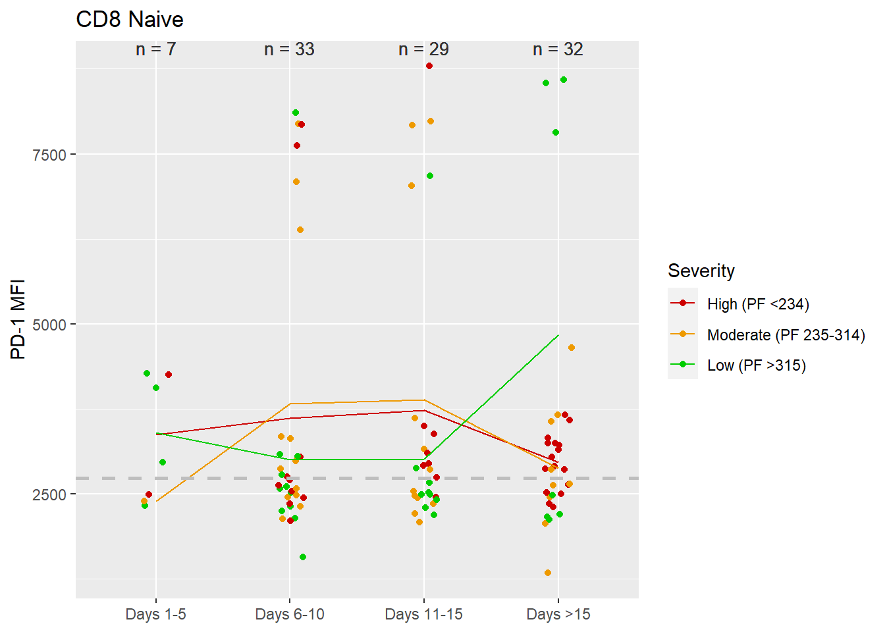
Adding missing grouping variables: `unique`, `lab`Adding missing grouping variables: `unique`, `lab`Warning in wilcox.test.default(c(2881, 2684, 3933, 4595, 1410, 1643, 2666, :
cannot compute exact p-value with tiesWarning in wilcox.test.default(c(8110, 2298, 2255, 2490, 2143, 2604, 2578, :
cannot compute exact p-value with tiesWarning in wilcox.test.default(c(8110, 2298, 2255, 2490, 2143, 2604, 2578, :
cannot compute exact p-value with tiesWarning in wilcox.test.default(c(2881, 2684, 3933, 4595, 1410, 1643, 2666, :
cannot compute exact p-value with tiesWarning in wilcox.test.default(c(8110, 2298, 2255, 2490, 2143, 2604, 2578, :
cannot compute exact p-value with tiesWarning in wilcox.test.default(c(8110, 2298, 2255, 2490, 2143, 2604, 2578, :
cannot compute exact p-value with tiesAdding missing grouping variables: `unique`, `lab``summarise()` regrouping output by 'daygroup' (override with `.groups` argument)Joining, by = "daygroup"Adding missing grouping variables: `unique`, `lab`Adding missing grouping variables: `unique`, `lab`Warning in wilcox.test.default(c(-89, 48.5, 551, 453, 607, 656, 599, 542, :
cannot compute exact p-value with tiesWarning in wilcox.test.default(c(-89, 48.5, 551, 453, 607, 656, 599, 542, :
cannot compute exact p-value with tiesWarning in wilcox.test.default(c(-89, 48.5, 551, 453, 607, 656, 599, 542, :
cannot compute exact p-value with tiesWarning in wilcox.test.default(c(1947, 478, 461, 413, 453, 510, 469, 259, :
cannot compute exact p-value with tiesWarning in wilcox.test.default(c(1947, 478, 461, 413, 453, 510, 469, 259, :
cannot compute exact p-value with tiesWarning in wilcox.test.default(c(884, 1921, 754, 713, 632, 909, 689, 624, :
cannot compute exact p-value with tiesWarning in wilcox.test.default(c(-89, 48.5, 551, 453, 607, 656, 599, 542, :
cannot compute exact p-value with tiesWarning in wilcox.test.default(c(-89, 48.5, 551, 453, 607, 656, 599, 542, :
cannot compute exact p-value with tiesWarning in wilcox.test.default(c(-89, 48.5, 551, 453, 607, 656, 599, 542, :
cannot compute exact p-value with tiesWarning in wilcox.test.default(c(1947, 478, 461, 413, 453, 510, 469, 259, :
cannot compute exact p-value with tiesWarning in wilcox.test.default(c(1947, 478, 461, 413, 453, 510, 469, 259, :
cannot compute exact p-value with tiesWarning in wilcox.test.default(c(884, 1921, 754, 713, 632, 909, 689, 624, :
cannot compute exact p-value with tiesAdding missing grouping variables: `unique`, `lab``summarise()` regrouping output by 'daygroup' (override with `.groups` argument)Joining, by = "daygroup"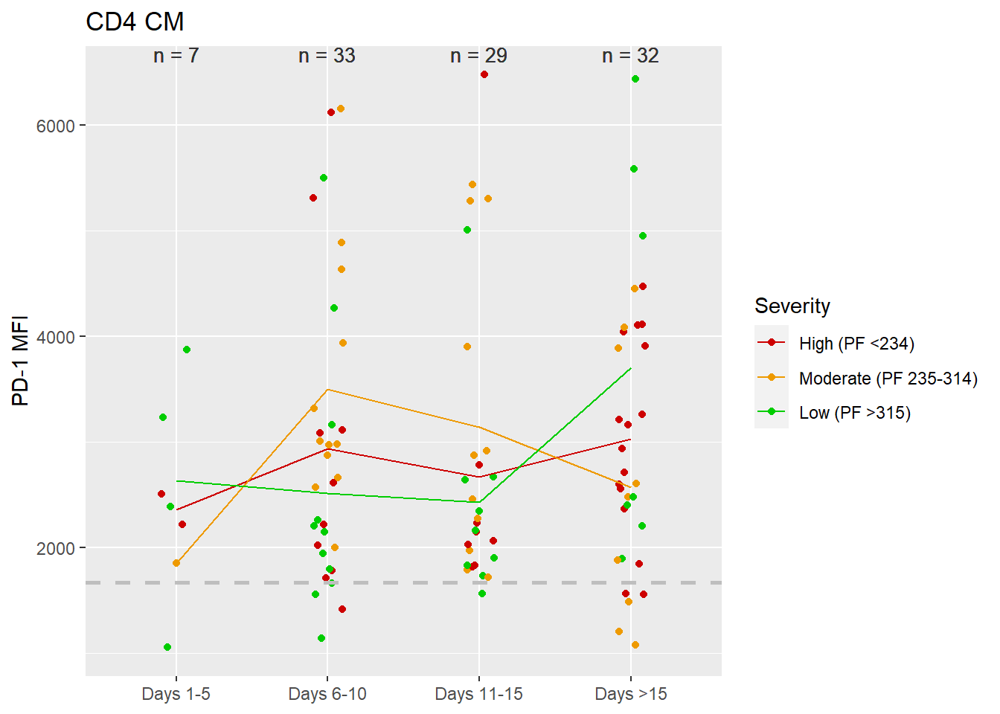
Adding missing grouping variables: `unique`, `lab`Adding missing grouping variables: `unique`, `lab`Warning in wilcox.test.default(c(1602, 1179, 2560, 1710, 1048, 1385, 2160, :
cannot compute exact p-value with tiesWarning in wilcox.test.default(c(5504, 2640, 2203, 1828, 3156, 2143, 1660, :
cannot compute exact p-value with tiesWarning in wilcox.test.default(c(2872, 4628, 2569, 1998, 1786, 2981, 1972, :
cannot compute exact p-value with tiesWarning in wilcox.test.default(c(1602, 1179, 2560, 1710, 1048, 1385, 2160, :
cannot compute exact p-value with tiesWarning in wilcox.test.default(c(5504, 2640, 2203, 1828, 3156, 2143, 1660, :
cannot compute exact p-value with tiesWarning in wilcox.test.default(c(2872, 4628, 2569, 1998, 1786, 2981, 1972, :
cannot compute exact p-value with tiesAdding missing grouping variables: `unique`, `lab``summarise()` regrouping output by 'daygroup' (override with `.groups` argument)Joining, by = "daygroup"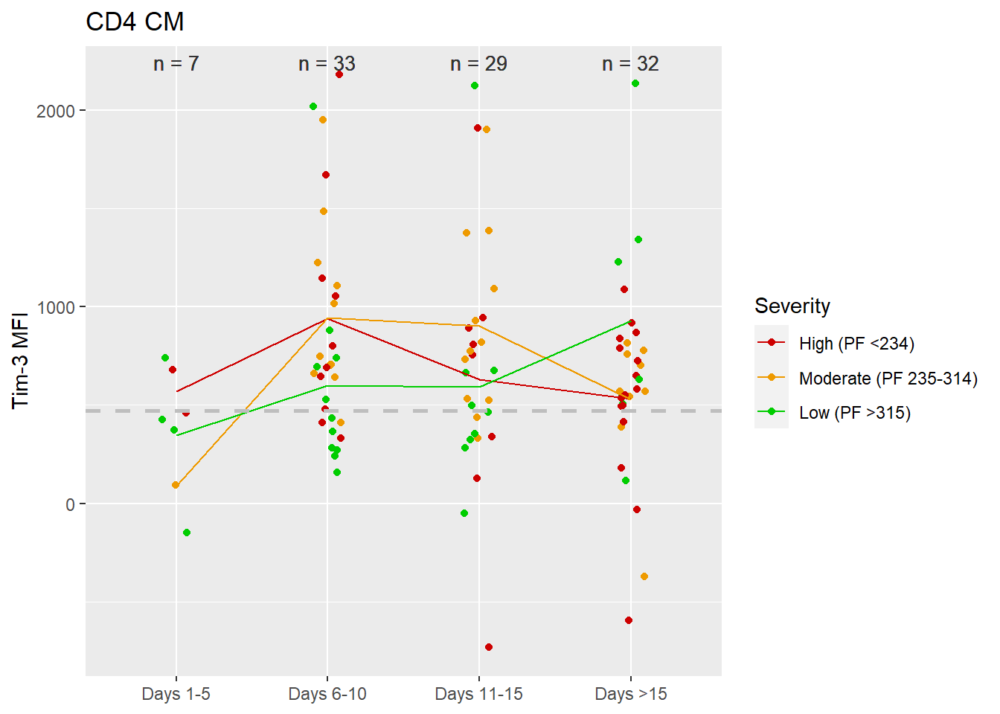
Adding missing grouping variables: `unique`, `lab`Adding missing grouping variables: `unique`, `lab`Warning in wilcox.test.default(c(0, -32.4, 852, 974, 461, 672, 534, 461, :
cannot compute exact p-value with tiesWarning in wilcox.test.default(c(0, -32.4, 852, 974, 461, 672, 534, 461, :
cannot compute exact p-value with tiesWarning in wilcox.test.default(c(0, -32.4, 852, 974, 461, 672, 534, 461, :
cannot compute exact p-value with tiesWarning in wilcox.test.default(c(2015, 461, 162, 324, 283, 275, 364, 372, :
cannot compute exact p-value with tiesWarning in wilcox.test.default(c(1105, 1947, 705, 413, 534, 1220, 526, 437, :
cannot compute exact p-value with tiesWarning in wilcox.test.default(c(0, -32.4, 852, 974, 461, 672, 534, 461, :
cannot compute exact p-value with tiesWarning in wilcox.test.default(c(0, -32.4, 852, 974, 461, 672, 534, 461, :
cannot compute exact p-value with tiesWarning in wilcox.test.default(c(0, -32.4, 852, 974, 461, 672, 534, 461, :
cannot compute exact p-value with tiesWarning in wilcox.test.default(c(2015, 461, 162, 324, 283, 275, 364, 372, :
cannot compute exact p-value with tiesWarning in wilcox.test.default(c(1105, 1947, 705, 413, 534, 1220, 526, 437, :
cannot compute exact p-value with tiesAdding missing grouping variables: `unique`, `lab``summarise()` regrouping output by 'daygroup' (override with `.groups` argument)Joining, by = "daygroup"Adding missing grouping variables: `unique`, `lab`Adding missing grouping variables: `unique`, `lab`
Warning in wilcox.test.default(c(9945, 2490, 3494, 2782, 6941, 7527, 2324, :
cannot compute exact p-value with tiesWarning in wilcox.test.default(c(9945, 2490, 3494, 2782, 6941, 7527, 2324, :
cannot compute exact p-value with tiesAdding missing grouping variables: `unique`, `lab``summarise()` regrouping output by 'daygroup' (override with `.groups` argument)Joining, by = "daygroup"Adding missing grouping variables: `unique`, `lab`Adding missing grouping variables: `unique`, `lab`Warning in wilcox.test.default(c(-332, -291, 494, 388, 461, 469, 364, 486, :
cannot compute exact p-value with tiesWarning in wilcox.test.default(c(-332, -291, 494, 388, 461, 469, 364, 486, :
cannot compute exact p-value with tiesWarning in wilcox.test.default(c(1685, 518, 259, 559, 754, 575, 388, 542, :
cannot compute exact p-value with tiesWarning in wilcox.test.default(c(1685, 518, 259, 559, 754, 575, 388, 542, :
cannot compute exact p-value with tiesWarning in wilcox.test.default(c(616, 1154, 494, 534, 754, 958, 591, 664, :
cannot compute exact p-value with tiesWarning in wilcox.test.default(c(-332, -291, 494, 388, 461, 469, 364, 486, :
cannot compute exact p-value with tiesWarning in wilcox.test.default(c(-332, -291, 494, 388, 461, 469, 364, 486, :
cannot compute exact p-value with tiesWarning in wilcox.test.default(c(1685, 518, 259, 559, 754, 575, 388, 542, :
cannot compute exact p-value with tiesWarning in wilcox.test.default(c(1685, 518, 259, 559, 754, 575, 388, 542, :
cannot compute exact p-value with tiesWarning in wilcox.test.default(c(616, 1154, 494, 534, 754, 958, 591, 664, :
cannot compute exact p-value with ties[[1]]
NULL
[[2]]
NULL
[[3]]
NULL
[[4]]
NULL
[[5]]
NULL
[[6]]
NULL
[[7]]
NULL
[[8]]
NULL
[[9]]
NULL
[[10]]
NULL
[[11]]
NULL
[[12]]
NULL
[[13]]
NULL
[[14]]
NULL
[[15]]
NULL
[[16]]
NULL
[[17]]
NULL
[[18]]
NULL########################
# EXCEL EXPORT #
########################
# QC: Finding all the flow samples that are being excluded due to special/exclusion criteria
tib_patients_annotations %>% filter(id %in% setdiff(tib_flow_all$id, tib_flow_filtered$id)) %>%
writexl::write_xlsx(paste0(STR_DATA_DIR_FLOW, "patients-excluded.xlsx"))
# QC: List of included patients in flow analysis
tib_flow_filtered %>%
writexl::write_xlsx(paste0(STR_DATA_DIR_FLOW, "patients-included-annotated.xlsx"))
# Exporting all flow data
tib_flow_filtered %>%
writexl::write_xlsx(paste0(STR_DATA_DIR_FLOW, "flow-included.xlsx"))
tib_flow_healthy %>%
writexl::write_xlsx(paste0(STR_DATA_DIR_FLOW, "flow-healthy.xlsx"))
tib_flow_all %>%
writexl::write_xlsx(paste0(STR_DATA_DIR_FLOW, "flow-all.xlsx"))Cytokine data from Luminex
- Using Python again to generate luminex data as a CSV file, able to take in multiple formats of Excel files due to operator dependencies
- CODE NOT FINALIZED, pending updated data
########################
# LUMINEX RAW DATA #
# -PYTHON- #
########################
# Luminex runs
list_plex <- list("44", "30")
# Processing Luminex output and manual Excel annotations into CSV files
lapply(list_plex, function(plex) {py_run_file(paste0(STR_CODE_DIR_CYTOKINE, "luminex2CSV_", plex, "plex.py"))})[[1]]
Dict (47 items)
[[2]]
Dict (47 items)########################
# LUMINEX IMPORT #
########################
tib_cyto_names <- readxl::read_excel(paste0(STR_DATA_DIR_CYTOKINE,"cytokine_names.xlsx"))
tib_cyto_drop <- tib_cyto_names %>% filter(is.na(Plex30)) %>% select(Plex44)
tib_cyto_names <- tib_cyto_names %>% filter(!is.na(Plex30))
# Importing each processed Luminex file
fun_import_luminex <- function(plex) {
tib_cytokines <- list.files(path = "../data/cytokine/",
pattern = paste0("lum.*", plex, "plex.csv$"),
full.names = TRUE) %>%
magrittr::extract(which.max(file.mtime(.))) %>%
read_csv(col_types = cols(.default = "c")) %>%
mutate(id = as.character(id), date = date(date), sample = Sample) %>%
group_by(id, date, sample, bmp_sample) %>%
mutate(
dup = n()
) %>%
select(
-Location,
-Sample
)
if(plex == "44") {
for(cyto in tib_cyto_drop){
tib_cytokines <- tib_cytokines %>% select(-contains(cyto))
}
}
for(i in 1:length(tib_cyto_names$Plex30)) {
tib_cytokines <- tib_cytokines %>% rename_with(
~gsub(tib_cyto_names[[paste0("Plex",plex)]][i], tib_cyto_names$name[i], .x, fixed = TRUE))
}
return(tib_cytokines)
}
# Mark duplicates
fun_cytokines_dups_plex <- function(tib_plex) {
tib_dups <- tib_plex %>%
filter(dup > 1) %>%
arrange(.by_group = TRUE) %>%
select(-starts_with("LIMIT")) %>%
summarise_at(vars(ends_with("result")), ~ (max(as.double(.x)) - min(as.double(.x)))/mean(as.double(.x))*100)
return(tib_dups)
}
# Merge all duplicates together
fun_cytokines_dups_all <- function(list_tib_cytokines) {
all_plex_samples <- Reduce(function(x,y){inner_join(x, y, by = c("id", "date"))}, list_tib_cytokines) %>%
select(id, date) %>%
unique()
tib_cytokines_dups_all <- fun_cytokines_dups_plex(bind_rows(lapply(list_tib_cytokines, right_join, all_plex_samples)))
return(tib_cytokines_dups_all)
}
list_tib_cytokines <- lapply(list_plex, fun_import_luminex)
list_tib_cytokines_dups <- lapply(list_tib_cytokines, fun_cytokines_dups_plex)
tib_cytokines_dups_all <- fun_cytokines_dups_all(list_tib_cytokines)Joining, by = c("date", "id")
Joining, by = c("date", "id")# Importing Luminex data, binning into day groups after calculating days after symptom onset
tib_cytokine_data <- bind_rows(list_tib_cytokines) %>%
left_join(tib_patients_all, by = "id") %>%
mutate(day = as.integer(difftime(as.POSIXct(date, format = "%Y-%m-%d", tz = "GMT"),as.POSIXct(d0, format = "%Y-%m-%d", tz = "GMT"),"UTC",units = "days"))) %>%
left_join(tib_sftrend_sum, by = c("id")) %>%
mutate(
daygroup = cut(day, c(-1, 5, 10, 15, Inf), c("Days 1-5", "Days 6-10", "Days 11-15", "Days >15")),
daygroup_box = cut(day, c(-1, 9, Inf), c("Days 1-9", "Days >10"))
)
# Get list of all cytokine names/measures
cytokine_names <- tib_cytokine_data %>%
ungroup() %>%
select(starts_with("LIMIT")) %>%
colnames() %>%
str_replace("LIMIT", "")
tib_cytokine_data <- tib_cytokine_data %>% type_convert() %>% ungroup()Parsed with column specification:
cols(
.default = col_double(),
luminex_day = col_character(),
bmp_sample = col_character(),
LIMITCCL19_result = col_character(),
LIMITCCL2_result = col_logical(),
LIMITCCL20_result = col_character(),
LIMITCCL3_result = col_character(),
LIMITCCL4_result = col_character(),
LIMITCX3CL1_result = col_logical(),
LIMITCXCL1_result = col_character(),
LIMITCXCL10_result = col_character(),
LIMITCXCL2_result = col_character(),
LIMITEGF_result = col_character(),
`LIMITG-CSF_result` = col_character(),
`LIMITGM-CSF_result` = col_character(),
`LIMITGranzyme B_result` = col_character(),
LIMITIFNa_result = col_character(),
LIMITIFNg_result = col_character(),
`LIMITIL-10_result` = col_character(),
`LIMITIL-13_result` = col_character(),
`LIMITIL-15_result` = col_character()
# ... with 169 more columns
)See spec(...) for full column specifications.# Boolean for whether to extrapolate additional values or not
extrapolate <- TRUE
# For loop in order to change values in place
for(cytokine in cytokine_names) {
cytokine_lim <- paste0("LIMIT", cytokine)
# Get values at which a "<" was present in original raw data
cytokine_min_measure <- tib_cytokine_data %>%
ungroup() %>%
filter(as.character(!!sym(cytokine_lim)) == "MIN") %>%
select(cytokine) %>%
unique() %>% unlist() %>% as.double()
if(!length(cytokine_min_measure)) {cytokine_min_measure = 0}
# Get values at which a ">" was present in original raw data
cytokine_max_measure <- tib_cytokine_data %>%
ungroup() %>%
filter(as.character(!!sym(cytokine_lim)) == "MAX") %>%
select(str_replace(cytokine, "LIMIT", "")) %>%
unique() %>% unlist() %>% as.double()
if(!length(cytokine_max_measure)) {cytokine_max_measure = Inf}
# Get lowest extrapolated value
cytokine_min_extrap <- tib_cytokine_data %>%
ungroup() %>%
pull(cytokine) %>%
min(na.rm = TRUE) %>% unlist()
# Get highest extrapolated value
cytokine_max_extrap <- tib_cytokine_data %>%
ungroup() %>%
pull(cytokine) %>%
max(na.rm = TRUE) %>% unlist()
# Mark extrapolated values as MIN_EXTRAP or MAX_EXTRAP
tib_cytokine_data[[cytokine_lim]] = case_when(
tib_cytokine_data[[cytokine]] < cytokine_min_measure ~ "MIN_EXTRAP",
tib_cytokine_data[[cytokine]] > cytokine_max_measure ~ "MAX_EXTRAP",
TRUE ~ as.character(tib_cytokine_data[[cytokine_lim]])
)
tib_cytokine_data[[cytokine]] <- case_when(
# If extrapolate boolean is TRUE, use min/max extrapolated values
(extrapolate & (tib_cytokine_data[[cytokine_lim]] == "MIN")) ~ cytokine_min_extrap,
(extrapolate & (tib_cytokine_data[[cytokine_lim]] == "MAX")) ~ cytokine_max_extrap,
# Otherwise, set all values that were extrapolated to the lower/upper limits of non-extrapolated measure
(!extrapolate & (tib_cytokine_data[[cytokine]] < cytokine_min_measure)) ~ cytokine_min_measure,
(!extrapolate & (tib_cytokine_data[[cytokine]] > cytokine_max_measure)) ~ cytokine_max_measure,
TRUE ~ tib_cytokine_data[[cytokine]]
)
}Note: Using an external vector in selections is ambiguous.
i Use `all_of(cytokine)` instead of `cytokine` to silence this message.
i See <https://tidyselect.r-lib.org/reference/faq-external-vector.html>.
This message is displayed once per session.# Making tibble for saving as Excel file with "LIMIT" information preserved
tib_cytokine_data_save <- tib_cytokine_data %>%
ungroup()
# Removing "LIMIT" columns
tib_cytokine_data <- tib_cytokine_data_save %>%
select(-starts_with("LIMIT"))
########################
# PLOTTING #
########################
# Selecting a single cytokine
# Performing QC and cutoff set at bead count of 32 and %CV of Inf (no max)
fun_cytokine_select <- function(cytokine, countmin = 32, cvmax = Inf) {
tib_selected <- tib_cytokine_data %>%
select(
daygroup,
daygroup_box,
result = paste(cytokine,"result", sep = "_"),
count = paste(cytokine,"count", sep = "_"),
cv = paste(cytokine,"cv", sep = "_"),
sfseverity_highest,
sfratio_lowest,
id,
day,
includecyto,
bmp_sample
) %>%
# Remove N/A value results
filter(
!is.na(result),
# Bead count and %CV cutoffs as above
count > countmin,
cv < cvmax
) %>%
group_by(id, day, sfseverity_highest, sfratio_lowest, daygroup, daygroup_box, includecyto, bmp_sample) %>%
# Adjusting results by dilution factor
summarise(result = mean(result)*2)
# Adjusting results by dilution factor
tib_selected <- list(
# Merging included patients...
tib_selected %>%
filter(
includecyto,
!is.na(sfseverity_highest),
#!is.na(id),
!is.na(day)
),
# ...and healthy patients through collected list and normal donor samples
bind_rows(
tib_selected %>%
filter(id %in% (filter(tib_patients_annotations, healthy)$id)),
tib_selected %>%
filter(bmp_sample == "Normal Donor")
)
)
return(tib_selected)
}
# Function to plot the cytokine plots with line plot by day with a simple linear regression side by side
fun_plot_cytokine <- function(cytokine, name = cytokine, error = FALSE){
# Calling fun_cytokine_select to filter and process QC for selected cytokine
tib_plot <- fun_cytokine_select(cytokine)
# Plot 1: Scatter plot over time
plot_one <- tib_plot[[1]] %>%
ggplot(aes(x = day, y = result, color = sfseverity_highest)) +
# Jitter plot, not necessary for discrete day plot
# geom_jitter(width = 0.1) +
geom_point() +
# Adding trend line from mean to mean, colored by severity
stat_summary(fun=mean, geom="line", aes(color=sfseverity_highest, group=sfseverity_highest)) +
# Horizontol line for normal donor
geom_hline(aes(yintercept = mean(pull(tib_plot[[2]], result)), colour = "Normal Donor"), linetype = "dashed", color = "grey", size = 1) +
# Error bars, default not shown
{if(error) stat_summary(fun.data = mean_cl_normal, geom = "errorbar", width = 0.05)} +
# Somewhat hacky way of showing N for each group at the time at 103% of the max value to ensure it shows up on the plot, not used
# geom_text(data = tib_plot_tally, aes(label = paste0("n = ", n)), y = max(tib_plot[[1]]$result)*1.03, colour="grey20", size=3.5) +
# Removing X axis variable name/label
theme(axis.title.x=element_blank()) +
# Setting titles
labs(color = "Severity", title = cytokine) + ylab("pg/mL") + xlab("Day") +
# Using list of colors above
scale_colour_manual(values = list_plot_colors)
# Plot 2: Regression over time
# Linear regression
formula <- y ~ poly(x, 2, raw = TRUE)
plot_two <- tib_plot[[1]] %>%
ggplot(aes(x = day, y = result, color = sfseverity_highest)) +
# Plotting linear regression
geom_smooth(aes(fill = sfseverity_highest), method = "lm", formula = formula) +
# Adding CI
stat_poly_eq(
aes(label = paste(stat(p.value.label), stat(rr.label), sep = "*\", \"*")),
formula = formula,
label.x = "right", label.y = "bottom", size = 3,
parse = TRUE
) +
# Removing X-axis title, legend (since it's used above)
theme(axis.title.x=element_blank(), legend.position = "none") +
# Adding labels
labs(color = "Severity") + ylab("pg/mL") + xlab("Day") +
# Using list of colors above
scale_colour_manual(values = list_plot_colors) +
scale_fill_manual(values = list_plot_colors)
return(
list(plot_one, plot_two)
)
}
# Function to plot the cytokine plots with line plot by day with a simple linear regression side by side
fun_plot_cytokine_bypt <- function(cytokine, name = cytokine, error = FALSE){
# Calling fun_cytokine_select to filter and process QC for selected cytokine
tib_plot <- fun_cytokine_select(cytokine)
# Plot 1: Scatter plot over time
plot_one <- tib_plot[[1]] %>%
ggplot(aes(x = day, y = result, color = sfseverity_highest, group = id)) +
# Jitter plot, not necessary for discrete day plot
# geom_jitter(width = 0.1) +
geom_point() +
# Adding a line plot per patient
geom_line() +
# Horizontol line for normal donor
geom_hline(aes(yintercept = mean(pull(tib_plot[[2]], result)), colour = "Normal Donor"), linetype = "dashed", color = "grey", size = 1) +
# Error bars, default not shown
{if(error) stat_summary(fun.data = mean_cl_normal, geom = "errorbar", width = 0.05)} +
# Removing X axis variable name/label
theme(axis.title.x=element_blank()) +
# Setting titles
labs(color = "Severity", title = cytokine) + ylab("pg/mL") + xlab("Day") +
# Using list of colors above
scale_colour_manual(values = list_plot_colors)
}
# Box plots of cytokine data
fun_plot_cytokine_box <- function(cytokine){
# Creating additional factor level for healthy patients
sf_levels_healthy <- c(c("Healthy"), rev(sf_levels))
# Calling fun_cytokine_select to filter and process QC for selected cytokine
tib_plot <- fun_cytokine_select(cytokine)
tib_plot <- tib_plot[[1]] %>%
bind_rows(select(tib_plot[[2]], result) %>% mutate(daygroup_box = "Days 1-9")) %>%
bind_rows(select(tib_plot[[2]], result) %>% mutate(daygroup_box = "Days >10")) %>%
mutate(sfseverity_highest = factor(case_when(
is.na(day) ~ "Healthy",
TRUE ~ as.character(sfseverity_highest)
), levels = sf_levels_healthy
)
) %>%
group_by(id, daygroup_box, sfseverity_highest) %>%
summarise(
result = max(result)
) %>%
mutate(daygroup_box = factor(daygroup_box, levels = c("Days 1-9", "Days >10")))
# Tallying N per group for purposes of labeling, duplicating due to quirk of writing a label per group
tib_plot_tally <- tib_plot %>% group_by(daygroup_box, sfseverity_highest) %>% summarise(ns = n()) %>% left_join(tib_plot %>% group_by(daygroup_box) %>% tally)
# p-value comparison pairings
comparisons <- list(
c(sf_levels_healthy[1], sf_levels_healthy[2]),
c(sf_levels_healthy[2], sf_levels_healthy[3]),
c(sf_levels_healthy[3], sf_levels_healthy[4]),
c(sf_levels_healthy[1], sf_levels_healthy[3]),
c(sf_levels_healthy[2], sf_levels_healthy[4]),
c(sf_levels_healthy[1], sf_levels_healthy[4])
)
plot_one <- tib_plot %>%
ggplot(aes(x = sfseverity_highest, y = result, color = sfseverity_highest)) +
# Box plot with jitter
geom_boxplot() +
geom_jitter(width = 0.1) +
# p-values from above
stat_compare_means(comparisons = comparisons, size = 2.5) +
# Labels
labs(color = "Severity", title = cytokine) + ylab("pg/mL") +
# Colors
scale_colour_manual(values = rev(list_plot_colors)) +
# Legend colors
guides(color = guide_legend(reverse = TRUE)) +
# Somewhat hacky way of showing N for each group at the time at -3% of the max value to ensure it shows up on the plot
geom_text(data = tib_plot_tally, aes(label = paste0("n = ", ns)), y = -max(tib_plot$result)*0.01, colour="grey20", size=2.5) +
# Remove ticks and variable labels
theme(axis.title.x=element_blank(), axis.text.x=element_blank(), axis.ticks.x=element_blank()) +
facet_wrap(~daygroup_box)
return(plot_one)
}
# Scatter plots of cytokine data
fun_plot_cytokine_scatter <- function(cytokine){
# Creating additional factor level for healthy patients
sf_levels_healthy <- c(c("Healthy"), rev(sf_levels))
# Calling fun_cytokine_select to filter and process QC for selected cytokine
tib_plot <- fun_cytokine_select(cytokine)
tib_plot <- tib_plot[[1]] %>%
bind_rows(select(tib_plot[[2]], result) %>% mutate(daygroup_box = "Days 1-9")) %>%
bind_rows(select(tib_plot[[2]], result) %>% mutate(daygroup_box = "Days >10")) %>%
mutate(sfratio_lowest = case_when(
is.na(day) ~ 100.0/0.21,
TRUE ~ sfratio_lowest
),
sfseverity_highest = factor(case_when(
is.na(day) ~ "Healthy",
TRUE ~ as.character(sfseverity_highest)
), levels = sf_levels_healthy
)
) %>%
group_by(id, daygroup_box, sfratio_lowest, sfseverity_highest) %>%
summarise(
result = max(result)
) %>%
mutate(daygroup_box = factor(daygroup_box, levels = c("Days 1-9", "Days >10")))
plot_one <- tib_plot %>%
ggplot(aes(x = sfratio_lowest, y = result, color = sfseverity_highest)) +
# Scatter plot
geom_point() +
# Labels
labs(color = "Severity", title = cytokine) + ylab("pg/mL") + xlab("SF Ratio") +
# Colors
scale_colour_manual(values = rev(list_plot_colors)) +
# Legend colors
guides(color = guide_legend(reverse = TRUE)) +
scale_x_reverse() +
facet_wrap(~daygroup_box)
return(plot_one)
}
# Saves all 5 plots as images
fun_cytokine_png <- function(cytokine) {
str_name <- cytokine %>%
tolower() %>%
str_replace_all("[:punct:]", "-") %>%
str_replace_all(" ", "_")
plot_cytokine <- fun_plot_cytokine(cytokine)
if(nrow(plot_cytokine[[1]]$data) > 0) {
print(plot_cytokine[[1]])
print(plot_cytokine[[2]])
} else {
plot_cytokine <- list(ggplot(data = data.frame()) + geom_blank(), ggplot(data = data.frame()) + geom_blank())
}
ggsave(paste0(STR_PLOT_DIR_CYTOKINE, str_name, "-scatter-regression.png"),
plot_cytokine[[1]] + plot_cytokine[[2]], width = 12, height = 4)
plot_cytokine_bypt <- fun_plot_cytokine_bypt(cytokine)
print(plot_cytokine_bypt)
ggsave(paste0(STR_PLOT_DIR_CYTOKINE, str_name, "-scatter-line-bypt.png"),
plot_cytokine_bypt, width = 6, height = 4)
plot_cytokine_box <- fun_plot_cytokine_box(cytokine)
if(nrow(plot_cytokine_box$data) > 0) {
print(plot_cytokine_box)
} else {
plot_cytokine_box <- ggplot(data = data.frame()) + geom_blank()
}
ggsave(paste0(STR_PLOT_DIR_CYTOKINE, str_name, "-box.png"), plot_cytokine_box, width = 6, height = 4)
plot_cytokine_scatter <- fun_plot_cytokine_scatter(cytokine)
if(nrow(plot_cytokine_scatter$data) > 0) {
print(plot_cytokine_scatter)
} else {
plot_cytokine_scatter <- ggplot(data = data.frame()) + geom_blank()
}
ggsave(paste0(STR_PLOT_DIR_CYTOKINE, str_name, "-scatter.png"), plot_cytokine_scatter, width = 6, height = 4)
}
# Getting list of all cytokines across Luminex runs
list_cytokines_all <- str_replace(colnames(select(tib_cytokine_data, ends_with("result"))), "_result", "")
# Saves all plots
lapply(list_cytokines_all, fun_cytokine_png)`summarise()` regrouping output by 'id', 'day', 'sfseverity_highest', 'sfratio_lowest', 'daygroup', 'daygroup_box', 'includecyto' (override with `.groups` argument)`summarise()` regrouping output by 'id', 'day', 'sfseverity_highest', 'sfratio_lowest', 'daygroup', 'daygroup_box', 'includecyto' (override with `.groups` argument)`summarise()` regrouping output by 'id', 'day', 'sfseverity_highest', 'sfratio_lowest', 'daygroup', 'daygroup_box', 'includecyto' (override with `.groups` argument)Adding missing grouping variables: `id`, `day`, `sfseverity_highest`, `sfratio_lowest`, `daygroup`, `daygroup_box`, `includecyto`
Adding missing grouping variables: `id`, `day`, `sfseverity_highest`, `sfratio_lowest`, `daygroup`, `daygroup_box`, `includecyto``summarise()` regrouping output by 'id', 'daygroup_box' (override with `.groups` argument)`summarise()` regrouping output by 'daygroup_box' (override with `.groups` argument)Joining, by = "daygroup_box"`summarise()` regrouping output by 'id', 'day', 'sfseverity_highest', 'sfratio_lowest', 'daygroup', 'daygroup_box', 'includecyto' (override with `.groups` argument)Adding missing grouping variables: `id`, `day`, `sfseverity_highest`, `sfratio_lowest`, `daygroup`, `daygroup_box`, `includecyto`
Adding missing grouping variables: `id`, `day`, `sfseverity_highest`, `sfratio_lowest`, `daygroup`, `daygroup_box`, `includecyto``summarise()` regrouping output by 'id', 'daygroup_box', 'sfratio_lowest' (override with `.groups` argument)`summarise()` regrouping output by 'id', 'day', 'sfseverity_highest', 'sfratio_lowest', 'daygroup', 'daygroup_box', 'includecyto' (override with `.groups` argument)
`summarise()` regrouping output by 'id', 'day', 'sfseverity_highest', 'sfratio_lowest', 'daygroup', 'daygroup_box', 'includecyto' (override with `.groups` argument)`summarise()` regrouping output by 'id', 'day', 'sfseverity_highest', 'sfratio_lowest', 'daygroup', 'daygroup_box', 'includecyto' (override with `.groups` argument)Adding missing grouping variables: `id`, `day`, `sfseverity_highest`, `sfratio_lowest`, `daygroup`, `daygroup_box`, `includecyto`
Adding missing grouping variables: `id`, `day`, `sfseverity_highest`, `sfratio_lowest`, `daygroup`, `daygroup_box`, `includecyto``summarise()` regrouping output by 'id', 'daygroup_box' (override with `.groups` argument)`summarise()` regrouping output by 'daygroup_box' (override with `.groups` argument)Joining, by = "daygroup_box"`summarise()` regrouping output by 'id', 'day', 'sfseverity_highest', 'sfratio_lowest', 'daygroup', 'daygroup_box', 'includecyto' (override with `.groups` argument)Adding missing grouping variables: `id`, `day`, `sfseverity_highest`, `sfratio_lowest`, `daygroup`, `daygroup_box`, `includecyto`
Adding missing grouping variables: `id`, `day`, `sfseverity_highest`, `sfratio_lowest`, `daygroup`, `daygroup_box`, `includecyto``summarise()` regrouping output by 'id', 'daygroup_box', 'sfratio_lowest' (override with `.groups` argument)
`summarise()` regrouping output by 'id', 'day', 'sfseverity_highest', 'sfratio_lowest', 'daygroup', 'daygroup_box', 'includecyto' (override with `.groups` argument)`summarise()` regrouping output by 'id', 'day', 'sfseverity_highest', 'sfratio_lowest', 'daygroup', 'daygroup_box', 'includecyto' (override with `.groups` argument)`summarise()` regrouping output by 'id', 'day', 'sfseverity_highest', 'sfratio_lowest', 'daygroup', 'daygroup_box', 'includecyto' (override with `.groups` argument)Adding missing grouping variables: `id`, `day`, `sfseverity_highest`, `sfratio_lowest`, `daygroup`, `daygroup_box`, `includecyto`
Adding missing grouping variables: `id`, `day`, `sfseverity_highest`, `sfratio_lowest`, `daygroup`, `daygroup_box`, `includecyto``summarise()` regrouping output by 'id', 'daygroup_box' (override with `.groups` argument)`summarise()` regrouping output by 'daygroup_box' (override with `.groups` argument)Joining, by = "daygroup_box"
Warning in wilcox.test.default(c(9.65540255343803, 9.65631055307416,
0.30057137497271, : cannot compute exact p-value with tiesWarning in wilcox.test.default(c(9.65540255343803, 9.65631055307416,
0.30057137497271, : cannot compute exact p-value with tiesWarning in wilcox.test.default(c(9.65540255343803, 9.65631055307416,
0.30057137497271, : cannot compute exact p-value with tiesWarning in wilcox.test.default(c(9.65540255343803, 9.65631055307416,
0.30057137497271, : cannot compute exact p-value with tiesWarning in wilcox.test.default(c(9.65540255343803, 9.65631055307416,
0.30057137497271, : cannot compute exact p-value with tiesWarning in wilcox.test.default(c(9.65540255343803, 9.65631055307416,
0.30057137497271, : cannot compute exact p-value with tiesWarning in wilcox.test.default(c(25.3116607523872, 28.1771089722388,
28.1766545467536, : cannot compute exact p-value with tiesWarning in wilcox.test.default(c(25.3116607523872, 28.1771089722388,
28.1766545467536, : cannot compute exact p-value with tiesWarning in wilcox.test.default(c(9.65540255343803, 9.65631055307416,
0.30057137497271, : cannot compute exact p-value with tiesWarning in wilcox.test.default(c(9.65540255343803, 9.65631055307416,
0.30057137497271, : cannot compute exact p-value with tiesWarning in wilcox.test.default(c(9.65540255343803, 9.65631055307416,
0.30057137497271, : cannot compute exact p-value with tiesWarning in wilcox.test.default(c(9.65540255343803, 9.65631055307416,
0.30057137497271, : cannot compute exact p-value with tiesWarning in wilcox.test.default(c(9.65540255343803, 9.65631055307416,
0.30057137497271, : cannot compute exact p-value with tiesWarning in wilcox.test.default(c(9.65540255343803, 9.65631055307416,
0.30057137497271, : cannot compute exact p-value with tiesWarning in wilcox.test.default(c(25.3116607523872, 28.1771089722388,
28.1766545467536, : cannot compute exact p-value with tiesWarning in wilcox.test.default(c(25.3116607523872, 28.1771089722388,
28.1766545467536, : cannot compute exact p-value with ties`summarise()` regrouping output by 'id', 'day', 'sfseverity_highest', 'sfratio_lowest', 'daygroup', 'daygroup_box', 'includecyto' (override with `.groups` argument)Adding missing grouping variables: `id`, `day`, `sfseverity_highest`, `sfratio_lowest`, `daygroup`, `daygroup_box`, `includecyto`
Adding missing grouping variables: `id`, `day`, `sfseverity_highest`, `sfratio_lowest`, `daygroup`, `daygroup_box`, `includecyto``summarise()` regrouping output by 'id', 'daygroup_box', 'sfratio_lowest' (override with `.groups` argument)`summarise()` regrouping output by 'id', 'day', 'sfseverity_highest', 'sfratio_lowest', 'daygroup', 'daygroup_box', 'includecyto' (override with `.groups` argument)`summarise()` regrouping output by 'id', 'day', 'sfseverity_highest', 'sfratio_lowest', 'daygroup', 'daygroup_box', 'includecyto' (override with `.groups` argument)`summarise()` regrouping output by 'id', 'day', 'sfseverity_highest', 'sfratio_lowest', 'daygroup', 'daygroup_box', 'includecyto' (override with `.groups` argument)Adding missing grouping variables: `id`, `day`, `sfseverity_highest`, `sfratio_lowest`, `daygroup`, `daygroup_box`, `includecyto`
Adding missing grouping variables: `id`, `day`, `sfseverity_highest`, `sfratio_lowest`, `daygroup`, `daygroup_box`, `includecyto``summarise()` regrouping output by 'id', 'daygroup_box' (override with `.groups` argument)`summarise()` regrouping output by 'daygroup_box' (override with `.groups` argument)Joining, by = "daygroup_box"Warning in wilcox.test.default(c(0, 0, 20.2351306909656, 44.2666228164681, :
cannot compute exact p-value with tiesWarning in wilcox.test.default(c(0, 0, 20.2351306909656, 44.2666228164681, :
cannot compute exact p-value with tiesWarning in wilcox.test.default(c(0, 0, 20.2351306909656, 44.2666228164681, :
cannot compute exact p-value with tiesWarning in wilcox.test.default(c(57.7165212482441, 81.802005860139,
1277.13843812564, : cannot compute exact p-value with tiesWarning in wilcox.test.default(c(57.7165212482441, 81.802005860139,
1277.13843812564, : cannot compute exact p-value with tiesWarning in wilcox.test.default(c(50.7861066770368, 46.1119356381102,
34.800052530752, : cannot compute exact p-value with tiesWarning in wilcox.test.default(c(0, 0, 20.2351306909656, 44.2666228164681, :
cannot compute exact p-value with tiesWarning in wilcox.test.default(c(0, 0, 20.2351306909656, 44.2666228164681, :
cannot compute exact p-value with tiesWarning in wilcox.test.default(c(0, 0, 20.2351306909656, 44.2666228164681, :
cannot compute exact p-value with tiesWarning in wilcox.test.default(c(28.5486495191302, 27.938351794991,
726.663319495718, : cannot compute exact p-value with tiesWarning in wilcox.test.default(c(28.5486495191302, 27.938351794991,
726.663319495718, : cannot compute exact p-value with tiesWarning in wilcox.test.default(c(33.0663490878919, 20.7773301294434,
11.3730134284814, : cannot compute exact p-value with tiesWarning in wilcox.test.default(c(0, 0, 20.2351306909656, 44.2666228164681, :
cannot compute exact p-value with tiesWarning in wilcox.test.default(c(0, 0, 20.2351306909656, 44.2666228164681, :
cannot compute exact p-value with tiesWarning in wilcox.test.default(c(0, 0, 20.2351306909656, 44.2666228164681, :
cannot compute exact p-value with tiesWarning in wilcox.test.default(c(57.7165212482441, 81.802005860139,
1277.13843812564, : cannot compute exact p-value with tiesWarning in wilcox.test.default(c(57.7165212482441, 81.802005860139,
1277.13843812564, : cannot compute exact p-value with tiesWarning in wilcox.test.default(c(50.7861066770368, 46.1119356381102,
34.800052530752, : cannot compute exact p-value with tiesWarning in wilcox.test.default(c(0, 0, 20.2351306909656, 44.2666228164681, :
cannot compute exact p-value with tiesWarning in wilcox.test.default(c(0, 0, 20.2351306909656, 44.2666228164681, :
cannot compute exact p-value with tiesWarning in wilcox.test.default(c(0, 0, 20.2351306909656, 44.2666228164681, :
cannot compute exact p-value with tiesWarning in wilcox.test.default(c(28.5486495191302, 27.938351794991,
726.663319495718, : cannot compute exact p-value with tiesWarning in wilcox.test.default(c(28.5486495191302, 27.938351794991,
726.663319495718, : cannot compute exact p-value with tiesWarning in wilcox.test.default(c(33.0663490878919, 20.7773301294434,
11.3730134284814, : cannot compute exact p-value with ties`summarise()` regrouping output by 'id', 'day', 'sfseverity_highest', 'sfratio_lowest', 'daygroup', 'daygroup_box', 'includecyto' (override with `.groups` argument)Adding missing grouping variables: `id`, `day`, `sfseverity_highest`, `sfratio_lowest`, `daygroup`, `daygroup_box`, `includecyto`
Adding missing grouping variables: `id`, `day`, `sfseverity_highest`, `sfratio_lowest`, `daygroup`, `daygroup_box`, `includecyto``summarise()` regrouping output by 'id', 'daygroup_box', 'sfratio_lowest' (override with `.groups` argument)`summarise()` regrouping output by 'id', 'day', 'sfseverity_highest', 'sfratio_lowest', 'daygroup', 'daygroup_box', 'includecyto' (override with `.groups` argument)
`summarise()` regrouping output by 'id', 'day', 'sfseverity_highest', 'sfratio_lowest', 'daygroup', 'daygroup_box', 'includecyto' (override with `.groups` argument)
`summarise()` regrouping output by 'id', 'day', 'sfseverity_highest', 'sfratio_lowest', 'daygroup', 'daygroup_box', 'includecyto' (override with `.groups` argument)Adding missing grouping variables: `id`, `day`, `sfseverity_highest`, `sfratio_lowest`, `daygroup`, `daygroup_box`, `includecyto`
Adding missing grouping variables: `id`, `day`, `sfseverity_highest`, `sfratio_lowest`, `daygroup`, `daygroup_box`, `includecyto``summarise()` regrouping output by 'id', 'daygroup_box' (override with `.groups` argument)`summarise()` regrouping output by 'daygroup_box' (override with `.groups` argument)Joining, by = "daygroup_box"`summarise()` regrouping output by 'id', 'day', 'sfseverity_highest', 'sfratio_lowest', 'daygroup', 'daygroup_box', 'includecyto' (override with `.groups` argument)Adding missing grouping variables: `id`, `day`, `sfseverity_highest`, `sfratio_lowest`, `daygroup`, `daygroup_box`, `includecyto`
Adding missing grouping variables: `id`, `day`, `sfseverity_highest`, `sfratio_lowest`, `daygroup`, `daygroup_box`, `includecyto``summarise()` regrouping output by 'id', 'daygroup_box', 'sfratio_lowest' (override with `.groups` argument)`summarise()` regrouping output by 'id', 'day', 'sfseverity_highest', 'sfratio_lowest', 'daygroup', 'daygroup_box', 'includecyto' (override with `.groups` argument)
`summarise()` regrouping output by 'id', 'day', 'sfseverity_highest', 'sfratio_lowest', 'daygroup', 'daygroup_box', 'includecyto' (override with `.groups` argument)`summarise()` regrouping output by 'id', 'day', 'sfseverity_highest', 'sfratio_lowest', 'daygroup', 'daygroup_box', 'includecyto' (override with `.groups` argument)Adding missing grouping variables: `id`, `day`, `sfseverity_highest`, `sfratio_lowest`, `daygroup`, `daygroup_box`, `includecyto`
Adding missing grouping variables: `id`, `day`, `sfseverity_highest`, `sfratio_lowest`, `daygroup`, `daygroup_box`, `includecyto``summarise()` regrouping output by 'id', 'daygroup_box' (override with `.groups` argument)`summarise()` regrouping output by 'daygroup_box' (override with `.groups` argument)Joining, by = "daygroup_box"Warning in wilcox.test.default(c(270.998588829687, 228.1882720209,
356.167927233671, : cannot compute exact p-value with tiesWarning in wilcox.test.default(c(270.998588829687, 228.1882720209,
356.167927233671, : cannot compute exact p-value with tiesWarning in wilcox.test.default(c(1258.22308551963, 540.684699279711,
1638.93163299529, : cannot compute exact p-value with tiesWarning in wilcox.test.default(c(1258.22308551963, 540.684699279711,
1638.93163299529, : cannot compute exact p-value with tiesWarning in wilcox.test.default(c(270.998588829687, 228.1882720209,
356.167927233671, : cannot compute exact p-value with tiesWarning in wilcox.test.default(c(270.998588829687, 228.1882720209,
356.167927233671, : cannot compute exact p-value with tiesWarning in wilcox.test.default(c(1258.22308551963, 540.684699279711,
1638.93163299529, : cannot compute exact p-value with tiesWarning in wilcox.test.default(c(1258.22308551963, 540.684699279711,
1638.93163299529, : cannot compute exact p-value with ties`summarise()` regrouping output by 'id', 'day', 'sfseverity_highest', 'sfratio_lowest', 'daygroup', 'daygroup_box', 'includecyto' (override with `.groups` argument)Adding missing grouping variables: `id`, `day`, `sfseverity_highest`, `sfratio_lowest`, `daygroup`, `daygroup_box`, `includecyto`
Adding missing grouping variables: `id`, `day`, `sfseverity_highest`, `sfratio_lowest`, `daygroup`, `daygroup_box`, `includecyto``summarise()` regrouping output by 'id', 'daygroup_box', 'sfratio_lowest' (override with `.groups` argument)`summarise()` regrouping output by 'id', 'day', 'sfseverity_highest', 'sfratio_lowest', 'daygroup', 'daygroup_box', 'includecyto' (override with `.groups` argument)`summarise()` regrouping output by 'id', 'day', 'sfseverity_highest', 'sfratio_lowest', 'daygroup', 'daygroup_box', 'includecyto' (override with `.groups` argument)`summarise()` regrouping output by 'id', 'day', 'sfseverity_highest', 'sfratio_lowest', 'daygroup', 'daygroup_box', 'includecyto' (override with `.groups` argument)Adding missing grouping variables: `id`, `day`, `sfseverity_highest`, `sfratio_lowest`, `daygroup`, `daygroup_box`, `includecyto`
Adding missing grouping variables: `id`, `day`, `sfseverity_highest`, `sfratio_lowest`, `daygroup`, `daygroup_box`, `includecyto``summarise()` regrouping output by 'id', 'daygroup_box' (override with `.groups` argument)`summarise()` regrouping output by 'daygroup_box' (override with `.groups` argument)Joining, by = "daygroup_box"`summarise()` regrouping output by 'id', 'day', 'sfseverity_highest', 'sfratio_lowest', 'daygroup', 'daygroup_box', 'includecyto' (override with `.groups` argument)Adding missing grouping variables: `id`, `day`, `sfseverity_highest`, `sfratio_lowest`, `daygroup`, `daygroup_box`, `includecyto`
Adding missing grouping variables: `id`, `day`, `sfseverity_highest`, `sfratio_lowest`, `daygroup`, `daygroup_box`, `includecyto``summarise()` regrouping output by 'id', 'daygroup_box', 'sfratio_lowest' (override with `.groups` argument)`summarise()` regrouping output by 'id', 'day', 'sfseverity_highest', 'sfratio_lowest', 'daygroup', 'daygroup_box', 'includecyto' (override with `.groups` argument)`summarise()` regrouping output by 'id', 'day', 'sfseverity_highest', 'sfratio_lowest', 'daygroup', 'daygroup_box', 'includecyto' (override with `.groups` argument)`summarise()` regrouping output by 'id', 'day', 'sfseverity_highest', 'sfratio_lowest', 'daygroup', 'daygroup_box', 'includecyto' (override with `.groups` argument)Adding missing grouping variables: `id`, `day`, `sfseverity_highest`, `sfratio_lowest`, `daygroup`, `daygroup_box`, `includecyto`
Adding missing grouping variables: `id`, `day`, `sfseverity_highest`, `sfratio_lowest`, `daygroup`, `daygroup_box`, `includecyto``summarise()` regrouping output by 'id', 'daygroup_box' (override with `.groups` argument)`summarise()` regrouping output by 'daygroup_box' (override with `.groups` argument)Joining, by = "daygroup_box"`summarise()` regrouping output by 'id', 'day', 'sfseverity_highest', 'sfratio_lowest', 'daygroup', 'daygroup_box', 'includecyto' (override with `.groups` argument)Adding missing grouping variables: `id`, `day`, `sfseverity_highest`, `sfratio_lowest`, `daygroup`, `daygroup_box`, `includecyto`
Adding missing grouping variables: `id`, `day`, `sfseverity_highest`, `sfratio_lowest`, `daygroup`, `daygroup_box`, `includecyto``summarise()` regrouping output by 'id', 'daygroup_box', 'sfratio_lowest' (override with `.groups` argument)`summarise()` regrouping output by 'id', 'day', 'sfseverity_highest', 'sfratio_lowest', 'daygroup', 'daygroup_box', 'includecyto' (override with `.groups` argument)`summarise()` regrouping output by 'id', 'day', 'sfseverity_highest', 'sfratio_lowest', 'daygroup', 'daygroup_box', 'includecyto' (override with `.groups` argument)`summarise()` regrouping output by 'id', 'day', 'sfseverity_highest', 'sfratio_lowest', 'daygroup', 'daygroup_box', 'includecyto' (override with `.groups` argument)Adding missing grouping variables: `id`, `day`, `sfseverity_highest`, `sfratio_lowest`, `daygroup`, `daygroup_box`, `includecyto`
Adding missing grouping variables: `id`, `day`, `sfseverity_highest`, `sfratio_lowest`, `daygroup`, `daygroup_box`, `includecyto``summarise()` regrouping output by 'id', 'daygroup_box' (override with `.groups` argument)`summarise()` regrouping output by 'daygroup_box' (override with `.groups` argument)Joining, by = "daygroup_box"`summarise()` regrouping output by 'id', 'day', 'sfseverity_highest', 'sfratio_lowest', 'daygroup', 'daygroup_box', 'includecyto' (override with `.groups` argument)Adding missing grouping variables: `id`, `day`, `sfseverity_highest`, `sfratio_lowest`, `daygroup`, `daygroup_box`, `includecyto`
Adding missing grouping variables: `id`, `day`, `sfseverity_highest`, `sfratio_lowest`, `daygroup`, `daygroup_box`, `includecyto``summarise()` regrouping output by 'id', 'daygroup_box', 'sfratio_lowest' (override with `.groups` argument)`summarise()` regrouping output by 'id', 'day', 'sfseverity_highest', 'sfratio_lowest', 'daygroup', 'daygroup_box', 'includecyto' (override with `.groups` argument)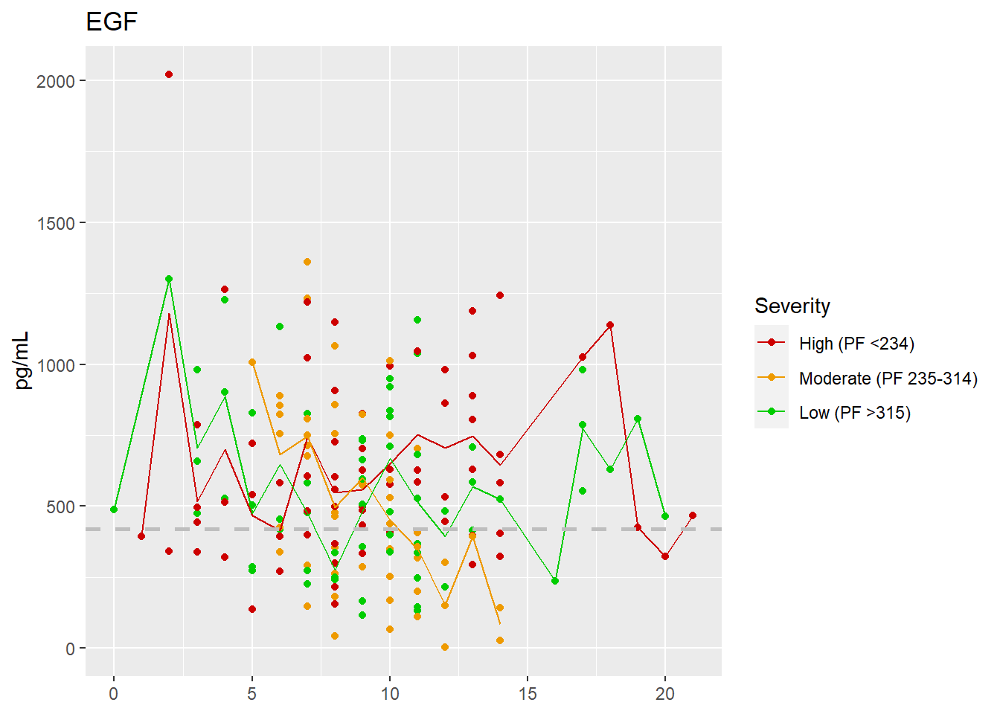
`summarise()` regrouping output by 'id', 'day', 'sfseverity_highest', 'sfratio_lowest', 'daygroup', 'daygroup_box', 'includecyto' (override with `.groups` argument)`summarise()` regrouping output by 'id', 'day', 'sfseverity_highest', 'sfratio_lowest', 'daygroup', 'daygroup_box', 'includecyto' (override with `.groups` argument)Adding missing grouping variables: `id`, `day`, `sfseverity_highest`, `sfratio_lowest`, `daygroup`, `daygroup_box`, `includecyto`
Adding missing grouping variables: `id`, `day`, `sfseverity_highest`, `sfratio_lowest`, `daygroup`, `daygroup_box`, `includecyto``summarise()` regrouping output by 'id', 'daygroup_box' (override with `.groups` argument)`summarise()` regrouping output by 'daygroup_box' (override with `.groups` argument)Joining, by = "daygroup_box"
`summarise()` regrouping output by 'id', 'day', 'sfseverity_highest', 'sfratio_lowest', 'daygroup', 'daygroup_box', 'includecyto' (override with `.groups` argument)Adding missing grouping variables: `id`, `day`, `sfseverity_highest`, `sfratio_lowest`, `daygroup`, `daygroup_box`, `includecyto`
Adding missing grouping variables: `id`, `day`, `sfseverity_highest`, `sfratio_lowest`, `daygroup`, `daygroup_box`, `includecyto``summarise()` regrouping output by 'id', 'daygroup_box', 'sfratio_lowest' (override with `.groups` argument)`summarise()` regrouping output by 'id', 'day', 'sfseverity_highest', 'sfratio_lowest', 'daygroup', 'daygroup_box', 'includecyto' (override with `.groups` argument)`summarise()` regrouping output by 'id', 'day', 'sfseverity_highest', 'sfratio_lowest', 'daygroup', 'daygroup_box', 'includecyto' (override with `.groups` argument)`summarise()` regrouping output by 'id', 'day', 'sfseverity_highest', 'sfratio_lowest', 'daygroup', 'daygroup_box', 'includecyto' (override with `.groups` argument)Adding missing grouping variables: `id`, `day`, `sfseverity_highest`, `sfratio_lowest`, `daygroup`, `daygroup_box`, `includecyto`
Adding missing grouping variables: `id`, `day`, `sfseverity_highest`, `sfratio_lowest`, `daygroup`, `daygroup_box`, `includecyto``summarise()` regrouping output by 'id', 'daygroup_box' (override with `.groups` argument)`summarise()` regrouping output by 'daygroup_box' (override with `.groups` argument)Joining, by = "daygroup_box"Warning in wilcox.test.default(c(0, 0, 8.20714763685967, 2.29519987509707, :
cannot compute exact p-value with tiesWarning in wilcox.test.default(c(0, 0, 8.20714763685967, 2.29519987509707, :
cannot compute exact p-value with tiesWarning in wilcox.test.default(c(0, 0, 8.20714763685967, 2.29519987509707, :
cannot compute exact p-value with tiesWarning in wilcox.test.default(c(31.8374056279816, 16.2436127281665,
92.85690113544, : cannot compute exact p-value with tiesWarning in wilcox.test.default(c(13.8928631280148, 26.6371769452141,
52.9907575202508, : cannot compute exact p-value with tiesWarning in wilcox.test.default(c(0, 0, 8.20714763685967, 2.29519987509707, :
cannot compute exact p-value with tiesWarning in wilcox.test.default(c(0, 0, 8.20714763685967, 2.29519987509707, :
cannot compute exact p-value with tiesWarning in wilcox.test.default(c(0, 0, 8.20714763685967, 2.29519987509707, :
cannot compute exact p-value with tiesWarning in wilcox.test.default(c(13.1559637409835, 43.1664536966924,
1.44713737992086, : cannot compute exact p-value with tiesWarning in wilcox.test.default(c(13.1559637409835, 43.1664536966924,
1.44713737992086, : cannot compute exact p-value with tiesWarning in wilcox.test.default(c(11.6610775734698, 11.6867631005125,
6.99247194506878, : cannot compute exact p-value with tiesWarning in wilcox.test.default(c(0, 0, 8.20714763685967, 2.29519987509707, :
cannot compute exact p-value with tiesWarning in wilcox.test.default(c(0, 0, 8.20714763685967, 2.29519987509707, :
cannot compute exact p-value with tiesWarning in wilcox.test.default(c(0, 0, 8.20714763685967, 2.29519987509707, :
cannot compute exact p-value with tiesWarning in wilcox.test.default(c(31.8374056279816, 16.2436127281665,
92.85690113544, : cannot compute exact p-value with tiesWarning in wilcox.test.default(c(13.8928631280148, 26.6371769452141,
52.9907575202508, : cannot compute exact p-value with tiesWarning in wilcox.test.default(c(0, 0, 8.20714763685967, 2.29519987509707, :
cannot compute exact p-value with tiesWarning in wilcox.test.default(c(0, 0, 8.20714763685967, 2.29519987509707, :
cannot compute exact p-value with tiesWarning in wilcox.test.default(c(0, 0, 8.20714763685967, 2.29519987509707, :
cannot compute exact p-value with tiesWarning in wilcox.test.default(c(13.1559637409835, 43.1664536966924,
1.44713737992086, : cannot compute exact p-value with tiesWarning in wilcox.test.default(c(13.1559637409835, 43.1664536966924,
1.44713737992086, : cannot compute exact p-value with tiesWarning in wilcox.test.default(c(11.6610775734698, 11.6867631005125,
6.99247194506878, : cannot compute exact p-value with ties`summarise()` regrouping output by 'id', 'day', 'sfseverity_highest', 'sfratio_lowest', 'daygroup', 'daygroup_box', 'includecyto' (override with `.groups` argument)Adding missing grouping variables: `id`, `day`, `sfseverity_highest`, `sfratio_lowest`, `daygroup`, `daygroup_box`, `includecyto`
Adding missing grouping variables: `id`, `day`, `sfseverity_highest`, `sfratio_lowest`, `daygroup`, `daygroup_box`, `includecyto``summarise()` regrouping output by 'id', 'daygroup_box', 'sfratio_lowest' (override with `.groups` argument)`summarise()` regrouping output by 'id', 'day', 'sfseverity_highest', 'sfratio_lowest', 'daygroup', 'daygroup_box', 'includecyto' (override with `.groups` argument)
`summarise()` regrouping output by 'id', 'day', 'sfseverity_highest', 'sfratio_lowest', 'daygroup', 'daygroup_box', 'includecyto' (override with `.groups` argument)`summarise()` regrouping output by 'id', 'day', 'sfseverity_highest', 'sfratio_lowest', 'daygroup', 'daygroup_box', 'includecyto' (override with `.groups` argument)Adding missing grouping variables: `id`, `day`, `sfseverity_highest`, `sfratio_lowest`, `daygroup`, `daygroup_box`, `includecyto`
Adding missing grouping variables: `id`, `day`, `sfseverity_highest`, `sfratio_lowest`, `daygroup`, `daygroup_box`, `includecyto``summarise()` regrouping output by 'id', 'daygroup_box' (override with `.groups` argument)`summarise()` regrouping output by 'daygroup_box' (override with `.groups` argument)Joining, by = "daygroup_box"Warning in wilcox.test.default(c(38.6665153984625, 0.389071475447288,
13.8045446206298, : cannot compute exact p-value with tiesWarning in wilcox.test.default(c(38.6665153984625, 0.389071475447288,
13.8045446206298, : cannot compute exact p-value with tiesWarning in wilcox.test.default(c(38.6665153984625, 0.389071475447288,
13.8045446206298, : cannot compute exact p-value with tiesWarning in wilcox.test.default(c(38.6665153984625, 0.389071475447288,
13.8045446206298, : cannot compute exact p-value with tiesWarning in wilcox.test.default(c(38.6665153984625, 0.389071475447288,
13.8045446206298, : cannot compute exact p-value with tiesWarning in wilcox.test.default(c(38.6665153984625, 0.389071475447288,
13.8045446206298, : cannot compute exact p-value with tiesWarning in wilcox.test.default(c(35.1474693920976, 128.34135370442,
69.6279772988745, : cannot compute exact p-value with tiesWarning in wilcox.test.default(c(35.1474693920976, 128.34135370442,
69.6279772988745, : cannot compute exact p-value with tiesWarning in wilcox.test.default(c(34.8860427923654, 45.854935929996,
39.8140251332701, : cannot compute exact p-value with tiesWarning in wilcox.test.default(c(38.6665153984625, 0.389071475447288,
13.8045446206298, : cannot compute exact p-value with tiesWarning in wilcox.test.default(c(38.6665153984625, 0.389071475447288,
13.8045446206298, : cannot compute exact p-value with tiesWarning in wilcox.test.default(c(38.6665153984625, 0.389071475447288,
13.8045446206298, : cannot compute exact p-value with tiesWarning in wilcox.test.default(c(38.6665153984625, 0.389071475447288,
13.8045446206298, : cannot compute exact p-value with tiesWarning in wilcox.test.default(c(38.6665153984625, 0.389071475447288,
13.8045446206298, : cannot compute exact p-value with tiesWarning in wilcox.test.default(c(38.6665153984625, 0.389071475447288,
13.8045446206298, : cannot compute exact p-value with tiesWarning in wilcox.test.default(c(35.1474693920976, 128.34135370442,
69.6279772988745, : cannot compute exact p-value with tiesWarning in wilcox.test.default(c(35.1474693920976, 128.34135370442,
69.6279772988745, : cannot compute exact p-value with tiesWarning in wilcox.test.default(c(34.8860427923654, 45.854935929996,
39.8140251332701, : cannot compute exact p-value with ties`summarise()` regrouping output by 'id', 'day', 'sfseverity_highest', 'sfratio_lowest', 'daygroup', 'daygroup_box', 'includecyto' (override with `.groups` argument)Adding missing grouping variables: `id`, `day`, `sfseverity_highest`, `sfratio_lowest`, `daygroup`, `daygroup_box`, `includecyto`
Adding missing grouping variables: `id`, `day`, `sfseverity_highest`, `sfratio_lowest`, `daygroup`, `daygroup_box`, `includecyto``summarise()` regrouping output by 'id', 'daygroup_box', 'sfratio_lowest' (override with `.groups` argument)`summarise()` regrouping output by 'id', 'day', 'sfseverity_highest', 'sfratio_lowest', 'daygroup', 'daygroup_box', 'includecyto' (override with `.groups` argument)`summarise()` regrouping output by 'id', 'day', 'sfseverity_highest', 'sfratio_lowest', 'daygroup', 'daygroup_box', 'includecyto' (override with `.groups` argument)`summarise()` regrouping output by 'id', 'day', 'sfseverity_highest', 'sfratio_lowest', 'daygroup', 'daygroup_box', 'includecyto' (override with `.groups` argument)Adding missing grouping variables: `id`, `day`, `sfseverity_highest`, `sfratio_lowest`, `daygroup`, `daygroup_box`, `includecyto`
Adding missing grouping variables: `id`, `day`, `sfseverity_highest`, `sfratio_lowest`, `daygroup`, `daygroup_box`, `includecyto``summarise()` regrouping output by 'id', 'daygroup_box' (override with `.groups` argument)`summarise()` regrouping output by 'daygroup_box' (override with `.groups` argument)Joining, by = "daygroup_box"Warning in wilcox.test.default(c(0, 0, 0.92502537949247, 6.38517006359637, :
cannot compute exact p-value with tiesWarning in wilcox.test.default(c(0, 0, 0.92502537949247, 6.38517006359637, :
cannot compute exact p-value with tiesWarning in wilcox.test.default(c(0, 0, 0.92502537949247, 6.38517006359637, :
cannot compute exact p-value with tiesWarning in wilcox.test.default(c(85.6466043051361, 19.0718933644631,
36.9579006538678, : cannot compute exact p-value with tiesWarning in wilcox.test.default(c(85.6466043051361, 19.0718933644631,
36.9579006538678, : cannot compute exact p-value with tiesWarning in wilcox.test.default(c(0, 250.603748112545, 108.497363483732, : cannot
compute exact p-value with tiesWarning in wilcox.test.default(c(0, 0, 0.92502537949247, 6.38517006359637, :
cannot compute exact p-value with tiesWarning in wilcox.test.default(c(0, 0, 0.92502537949247, 6.38517006359637, :
cannot compute exact p-value with tiesWarning in wilcox.test.default(c(0, 0, 0.92502537949247, 6.38517006359637, :
cannot compute exact p-value with tiesWarning in wilcox.test.default(c(38.011213525011, 270.605446913901,
14.1023905631853, : cannot compute exact p-value with tiesWarning in wilcox.test.default(c(0, 0, 0.92502537949247, 6.38517006359637, :
cannot compute exact p-value with tiesWarning in wilcox.test.default(c(0, 0, 0.92502537949247, 6.38517006359637, :
cannot compute exact p-value with tiesWarning in wilcox.test.default(c(0, 0, 0.92502537949247, 6.38517006359637, :
cannot compute exact p-value with tiesWarning in wilcox.test.default(c(85.6466043051361, 19.0718933644631,
36.9579006538678, : cannot compute exact p-value with tiesWarning in wilcox.test.default(c(85.6466043051361, 19.0718933644631,
36.9579006538678, : cannot compute exact p-value with tiesWarning in wilcox.test.default(c(0, 250.603748112545, 108.497363483732, : cannot
compute exact p-value with tiesWarning in wilcox.test.default(c(0, 0, 0.92502537949247, 6.38517006359637, :
cannot compute exact p-value with tiesWarning in wilcox.test.default(c(0, 0, 0.92502537949247, 6.38517006359637, :
cannot compute exact p-value with tiesWarning in wilcox.test.default(c(0, 0, 0.92502537949247, 6.38517006359637, :
cannot compute exact p-value with tiesWarning in wilcox.test.default(c(38.011213525011, 270.605446913901,
14.1023905631853, : cannot compute exact p-value with ties`summarise()` regrouping output by 'id', 'day', 'sfseverity_highest', 'sfratio_lowest', 'daygroup', 'daygroup_box', 'includecyto' (override with `.groups` argument)Adding missing grouping variables: `id`, `day`, `sfseverity_highest`, `sfratio_lowest`, `daygroup`, `daygroup_box`, `includecyto`
Adding missing grouping variables: `id`, `day`, `sfseverity_highest`, `sfratio_lowest`, `daygroup`, `daygroup_box`, `includecyto``summarise()` regrouping output by 'id', 'daygroup_box', 'sfratio_lowest' (override with `.groups` argument)`summarise()` regrouping output by 'id', 'day', 'sfseverity_highest', 'sfratio_lowest', 'daygroup', 'daygroup_box', 'includecyto' (override with `.groups` argument)`summarise()` regrouping output by 'id', 'day', 'sfseverity_highest', 'sfratio_lowest', 'daygroup', 'daygroup_box', 'includecyto' (override with `.groups` argument)`summarise()` regrouping output by 'id', 'day', 'sfseverity_highest', 'sfratio_lowest', 'daygroup', 'daygroup_box', 'includecyto' (override with `.groups` argument)Adding missing grouping variables: `id`, `day`, `sfseverity_highest`, `sfratio_lowest`, `daygroup`, `daygroup_box`, `includecyto`
Adding missing grouping variables: `id`, `day`, `sfseverity_highest`, `sfratio_lowest`, `daygroup`, `daygroup_box`, `includecyto``summarise()` regrouping output by 'id', 'daygroup_box' (override with `.groups` argument)`summarise()` regrouping output by 'daygroup_box' (override with `.groups` argument)Joining, by = "daygroup_box"Warning in wilcox.test.default(c(0, 0, 0.790358117647336, 1.58125303727581, :
cannot compute exact p-value with tiesWarning in wilcox.test.default(c(0, 0, 0.790358117647336, 1.58125303727581, :
cannot compute exact p-value with tiesWarning in wilcox.test.default(c(0, 0, 0.790358117647336, 1.58125303727581, :
cannot compute exact p-value with tiesWarning in wilcox.test.default(c(36.6688019218348, 20.4511370453231,
28.3165411399669, : cannot compute exact p-value with tiesWarning in wilcox.test.default(c(36.6688019218348, 20.4511370453231,
28.3165411399669, : cannot compute exact p-value with tiesWarning in wilcox.test.default(c(3.09504562111574, 34.2017106456783,
58.5782601745663, : cannot compute exact p-value with tiesWarning in wilcox.test.default(c(0, 0, 0.790358117647336, 1.58125303727581, :
cannot compute exact p-value with tiesWarning in wilcox.test.default(c(0, 0, 0.790358117647336, 1.58125303727581, :
cannot compute exact p-value with tiesWarning in wilcox.test.default(c(0, 0, 0.790358117647336, 1.58125303727581, :
cannot compute exact p-value with tiesWarning in wilcox.test.default(c(9.96768171107108, 32.6826413589174,
36.5279978312588, : cannot compute exact p-value with tiesWarning in wilcox.test.default(c(9.96768171107108, 32.6826413589174,
36.5279978312588, : cannot compute exact p-value with tiesWarning in wilcox.test.default(c(0, 1.07858138543, 2.59410411196656,
1.2158654562284, : cannot compute exact p-value with tiesWarning in wilcox.test.default(c(0, 0, 0.790358117647336, 1.58125303727581, :
cannot compute exact p-value with tiesWarning in wilcox.test.default(c(0, 0, 0.790358117647336, 1.58125303727581, :
cannot compute exact p-value with tiesWarning in wilcox.test.default(c(0, 0, 0.790358117647336, 1.58125303727581, :
cannot compute exact p-value with tiesWarning in wilcox.test.default(c(36.6688019218348, 20.4511370453231,
28.3165411399669, : cannot compute exact p-value with tiesWarning in wilcox.test.default(c(36.6688019218348, 20.4511370453231,
28.3165411399669, : cannot compute exact p-value with tiesWarning in wilcox.test.default(c(3.09504562111574, 34.2017106456783,
58.5782601745663, : cannot compute exact p-value with tiesWarning in wilcox.test.default(c(0, 0, 0.790358117647336, 1.58125303727581, :
cannot compute exact p-value with tiesWarning in wilcox.test.default(c(0, 0, 0.790358117647336, 1.58125303727581, :
cannot compute exact p-value with tiesWarning in wilcox.test.default(c(0, 0, 0.790358117647336, 1.58125303727581, :
cannot compute exact p-value with tiesWarning in wilcox.test.default(c(9.96768171107108, 32.6826413589174,
36.5279978312588, : cannot compute exact p-value with tiesWarning in wilcox.test.default(c(9.96768171107108, 32.6826413589174,
36.5279978312588, : cannot compute exact p-value with tiesWarning in wilcox.test.default(c(0, 1.07858138543, 2.59410411196656,
1.2158654562284, : cannot compute exact p-value with ties`summarise()` regrouping output by 'id', 'day', 'sfseverity_highest', 'sfratio_lowest', 'daygroup', 'daygroup_box', 'includecyto' (override with `.groups` argument)Adding missing grouping variables: `id`, `day`, `sfseverity_highest`, `sfratio_lowest`, `daygroup`, `daygroup_box`, `includecyto`
Adding missing grouping variables: `id`, `day`, `sfseverity_highest`, `sfratio_lowest`, `daygroup`, `daygroup_box`, `includecyto``summarise()` regrouping output by 'id', 'daygroup_box', 'sfratio_lowest' (override with `.groups` argument)`summarise()` regrouping output by 'id', 'day', 'sfseverity_highest', 'sfratio_lowest', 'daygroup', 'daygroup_box', 'includecyto' (override with `.groups` argument)`summarise()` regrouping output by 'id', 'day', 'sfseverity_highest', 'sfratio_lowest', 'daygroup', 'daygroup_box', 'includecyto' (override with `.groups` argument)`summarise()` regrouping output by 'id', 'day', 'sfseverity_highest', 'sfratio_lowest', 'daygroup', 'daygroup_box', 'includecyto' (override with `.groups` argument)Adding missing grouping variables: `id`, `day`, `sfseverity_highest`, `sfratio_lowest`, `daygroup`, `daygroup_box`, `includecyto`
Adding missing grouping variables: `id`, `day`, `sfseverity_highest`, `sfratio_lowest`, `daygroup`, `daygroup_box`, `includecyto``summarise()` regrouping output by 'id', 'daygroup_box' (override with `.groups` argument)`summarise()` regrouping output by 'daygroup_box' (override with `.groups` argument)Joining, by = "daygroup_box"Warning in wilcox.test.default(c(0, 0, 0, 0, 0, 0, 2.41751449371832,
11.0610409530244, : cannot compute exact p-value with tiesWarning in wilcox.test.default(c(0, 0, 0, 0, 0, 0, 2.41751449371832,
11.0610409530244, : cannot compute exact p-value with tiesWarning in wilcox.test.default(c(0, 0, 0, 0, 0, 0, 2.41751449371832,
11.0610409530244, : cannot compute exact p-value with tiesWarning in wilcox.test.default(c(93.0207902843965, 39.6530068897397,
72.9512420558241, : cannot compute exact p-value with tiesWarning in wilcox.test.default(c(93.0207902843965, 39.6530068897397,
72.9512420558241, : cannot compute exact p-value with tiesWarning in wilcox.test.default(c(0, 147.37144612219, 62.5800139354828,
69.9342097638959, : cannot compute exact p-value with tiesWarning in wilcox.test.default(c(0, 0, 0, 0, 0, 0, 2.41751449371832,
11.0610409530244, : cannot compute exact p-value with tiesWarning in wilcox.test.default(c(0, 0, 0, 0, 0, 0, 2.41751449371832,
11.0610409530244, : cannot compute exact p-value with tiesWarning in wilcox.test.default(c(0, 0, 0, 0, 0, 0, 2.41751449371832,
11.0610409530244, : cannot compute exact p-value with tiesWarning in wilcox.test.default(c(65.4072619573785, 78.3782656613117,
44.7184996816386, : cannot compute exact p-value with tiesWarning in wilcox.test.default(c(65.4072619573785, 78.3782656613117,
44.7184996816386, : cannot compute exact p-value with tiesWarning in wilcox.test.default(c(0, 0.196747572972681, 0, 0, 1.50175353808364, :
cannot compute exact p-value with tiesWarning in wilcox.test.default(c(0, 0, 0, 0, 0, 0, 2.41751449371832,
11.0610409530244, : cannot compute exact p-value with tiesWarning in wilcox.test.default(c(0, 0, 0, 0, 0, 0, 2.41751449371832,
11.0610409530244, : cannot compute exact p-value with tiesWarning in wilcox.test.default(c(0, 0, 0, 0, 0, 0, 2.41751449371832,
11.0610409530244, : cannot compute exact p-value with tiesWarning in wilcox.test.default(c(93.0207902843965, 39.6530068897397,
72.9512420558241, : cannot compute exact p-value with tiesWarning in wilcox.test.default(c(93.0207902843965, 39.6530068897397,
72.9512420558241, : cannot compute exact p-value with tiesWarning in wilcox.test.default(c(0, 147.37144612219, 62.5800139354828,
69.9342097638959, : cannot compute exact p-value with tiesWarning in wilcox.test.default(c(0, 0, 0, 0, 0, 0, 2.41751449371832,
11.0610409530244, : cannot compute exact p-value with tiesWarning in wilcox.test.default(c(0, 0, 0, 0, 0, 0, 2.41751449371832,
11.0610409530244, : cannot compute exact p-value with tiesWarning in wilcox.test.default(c(0, 0, 0, 0, 0, 0, 2.41751449371832,
11.0610409530244, : cannot compute exact p-value with tiesWarning in wilcox.test.default(c(65.4072619573785, 78.3782656613117,
44.7184996816386, : cannot compute exact p-value with tiesWarning in wilcox.test.default(c(65.4072619573785, 78.3782656613117,
44.7184996816386, : cannot compute exact p-value with tiesWarning in wilcox.test.default(c(0, 0.196747572972681, 0, 0, 1.50175353808364, :
cannot compute exact p-value with ties`summarise()` regrouping output by 'id', 'day', 'sfseverity_highest', 'sfratio_lowest', 'daygroup', 'daygroup_box', 'includecyto' (override with `.groups` argument)Adding missing grouping variables: `id`, `day`, `sfseverity_highest`, `sfratio_lowest`, `daygroup`, `daygroup_box`, `includecyto`
Adding missing grouping variables: `id`, `day`, `sfseverity_highest`, `sfratio_lowest`, `daygroup`, `daygroup_box`, `includecyto``summarise()` regrouping output by 'id', 'daygroup_box', 'sfratio_lowest' (override with `.groups` argument)`summarise()` regrouping output by 'id', 'day', 'sfseverity_highest', 'sfratio_lowest', 'daygroup', 'daygroup_box', 'includecyto' (override with `.groups` argument)`summarise()` regrouping output by 'id', 'day', 'sfseverity_highest', 'sfratio_lowest', 'daygroup', 'daygroup_box', 'includecyto' (override with `.groups` argument)`summarise()` regrouping output by 'id', 'day', 'sfseverity_highest', 'sfratio_lowest', 'daygroup', 'daygroup_box', 'includecyto' (override with `.groups` argument)Adding missing grouping variables: `id`, `day`, `sfseverity_highest`, `sfratio_lowest`, `daygroup`, `daygroup_box`, `includecyto`
Adding missing grouping variables: `id`, `day`, `sfseverity_highest`, `sfratio_lowest`, `daygroup`, `daygroup_box`, `includecyto``summarise()` regrouping output by 'id', 'daygroup_box' (override with `.groups` argument)`summarise()` regrouping output by 'daygroup_box' (override with `.groups` argument)Joining, by = "daygroup_box"Warning in wilcox.test.default(c(0, 0, 17.2607947667032, 14.9305904574339, :
cannot compute exact p-value with tiesWarning in wilcox.test.default(c(0, 0, 17.2607947667032, 14.9305904574339, :
cannot compute exact p-value with tiesWarning in wilcox.test.default(c(0, 0, 17.2607947667032, 14.9305904574339, :
cannot compute exact p-value with tiesWarning in wilcox.test.default(c(0, 0, 17.2607947667032, 14.9305904574339, :
cannot compute exact p-value with tiesWarning in wilcox.test.default(c(0, 0, 17.2607947667032, 14.9305904574339, :
cannot compute exact p-value with tiesWarning in wilcox.test.default(c(0, 0, 17.2607947667032, 14.9305904574339, :
cannot compute exact p-value with tiesWarning in wilcox.test.default(c(140.581263346722, 344.464759760352,
133.20845324287, : cannot compute exact p-value with tiesWarning in wilcox.test.default(c(140.581263346722, 344.464759760352,
133.20845324287, : cannot compute exact p-value with tiesWarning in wilcox.test.default(c(45.8970147908092, 94.0977699341826,
84.6677621221977, : cannot compute exact p-value with tiesWarning in wilcox.test.default(c(0, 0, 17.2607947667032, 14.9305904574339, :
cannot compute exact p-value with tiesWarning in wilcox.test.default(c(0, 0, 17.2607947667032, 14.9305904574339, :
cannot compute exact p-value with tiesWarning in wilcox.test.default(c(0, 0, 17.2607947667032, 14.9305904574339, :
cannot compute exact p-value with tiesWarning in wilcox.test.default(c(0, 0, 17.2607947667032, 14.9305904574339, :
cannot compute exact p-value with tiesWarning in wilcox.test.default(c(0, 0, 17.2607947667032, 14.9305904574339, :
cannot compute exact p-value with tiesWarning in wilcox.test.default(c(0, 0, 17.2607947667032, 14.9305904574339, :
cannot compute exact p-value with tiesWarning in wilcox.test.default(c(140.581263346722, 344.464759760352,
133.20845324287, : cannot compute exact p-value with tiesWarning in wilcox.test.default(c(140.581263346722, 344.464759760352,
133.20845324287, : cannot compute exact p-value with tiesWarning in wilcox.test.default(c(45.8970147908092, 94.0977699341826,
84.6677621221977, : cannot compute exact p-value with ties`summarise()` regrouping output by 'id', 'day', 'sfseverity_highest', 'sfratio_lowest', 'daygroup', 'daygroup_box', 'includecyto' (override with `.groups` argument)Adding missing grouping variables: `id`, `day`, `sfseverity_highest`, `sfratio_lowest`, `daygroup`, `daygroup_box`, `includecyto`
Adding missing grouping variables: `id`, `day`, `sfseverity_highest`, `sfratio_lowest`, `daygroup`, `daygroup_box`, `includecyto``summarise()` regrouping output by 'id', 'daygroup_box', 'sfratio_lowest' (override with `.groups` argument)`summarise()` regrouping output by 'id', 'day', 'sfseverity_highest', 'sfratio_lowest', 'daygroup', 'daygroup_box', 'includecyto' (override with `.groups` argument)`summarise()` regrouping output by 'id', 'day', 'sfseverity_highest', 'sfratio_lowest', 'daygroup', 'daygroup_box', 'includecyto' (override with `.groups` argument)`summarise()` regrouping output by 'id', 'day', 'sfseverity_highest', 'sfratio_lowest', 'daygroup', 'daygroup_box', 'includecyto' (override with `.groups` argument)Adding missing grouping variables: `id`, `day`, `sfseverity_highest`, `sfratio_lowest`, `daygroup`, `daygroup_box`, `includecyto`
Adding missing grouping variables: `id`, `day`, `sfseverity_highest`, `sfratio_lowest`, `daygroup`, `daygroup_box`, `includecyto``summarise()` regrouping output by 'id', 'daygroup_box' (override with `.groups` argument)`summarise()` regrouping output by 'daygroup_box' (override with `.groups` argument)Joining, by = "daygroup_box"Warning in wilcox.test.default(c(0, 0, 33.0447239581426, 33.307981305046, :
cannot compute exact p-value with tiesWarning in wilcox.test.default(c(0, 0, 33.0447239581426, 33.307981305046, :
cannot compute exact p-value with tiesWarning in wilcox.test.default(c(0, 0, 33.0447239581426, 33.307981305046, :
cannot compute exact p-value with tiesWarning in wilcox.test.default(c(114.256069362643, 82.8830660073353,
82.273325556336, : cannot compute exact p-value with tiesWarning in wilcox.test.default(c(114.256069362643, 82.8830660073353,
82.273325556336, : cannot compute exact p-value with tiesWarning in wilcox.test.default(c(60.1309630489583, 124.277576280408,
89.5614826909109, : cannot compute exact p-value with tiesWarning in wilcox.test.default(c(0, 0, 33.0447239581426, 33.307981305046, :
cannot compute exact p-value with tiesWarning in wilcox.test.default(c(0, 0, 33.0447239581426, 33.307981305046, :
cannot compute exact p-value with tiesWarning in wilcox.test.default(c(0, 0, 33.0447239581426, 33.307981305046, :
cannot compute exact p-value with tiesWarning in wilcox.test.default(c(85.8405538731057, 89.4918526561018,
65.0259754182226, : cannot compute exact p-value with tiesWarning in wilcox.test.default(c(85.8405538731057, 89.4918526561018,
65.0259754182226, : cannot compute exact p-value with tiesWarning in wilcox.test.default(c(14.9337144999924, 39.7960843237246,
12.3197113707714, : cannot compute exact p-value with tiesWarning in wilcox.test.default(c(0, 0, 33.0447239581426, 33.307981305046, :
cannot compute exact p-value with tiesWarning in wilcox.test.default(c(0, 0, 33.0447239581426, 33.307981305046, :
cannot compute exact p-value with tiesWarning in wilcox.test.default(c(0, 0, 33.0447239581426, 33.307981305046, :
cannot compute exact p-value with tiesWarning in wilcox.test.default(c(114.256069362643, 82.8830660073353,
82.273325556336, : cannot compute exact p-value with tiesWarning in wilcox.test.default(c(114.256069362643, 82.8830660073353,
82.273325556336, : cannot compute exact p-value with tiesWarning in wilcox.test.default(c(60.1309630489583, 124.277576280408,
89.5614826909109, : cannot compute exact p-value with tiesWarning in wilcox.test.default(c(0, 0, 33.0447239581426, 33.307981305046, :
cannot compute exact p-value with tiesWarning in wilcox.test.default(c(0, 0, 33.0447239581426, 33.307981305046, :
cannot compute exact p-value with tiesWarning in wilcox.test.default(c(0, 0, 33.0447239581426, 33.307981305046, :
cannot compute exact p-value with tiesWarning in wilcox.test.default(c(85.8405538731057, 89.4918526561018,
65.0259754182226, : cannot compute exact p-value with tiesWarning in wilcox.test.default(c(85.8405538731057, 89.4918526561018,
65.0259754182226, : cannot compute exact p-value with tiesWarning in wilcox.test.default(c(14.9337144999924, 39.7960843237246,
12.3197113707714, : cannot compute exact p-value with ties`summarise()` regrouping output by 'id', 'day', 'sfseverity_highest', 'sfratio_lowest', 'daygroup', 'daygroup_box', 'includecyto' (override with `.groups` argument)Adding missing grouping variables: `id`, `day`, `sfseverity_highest`, `sfratio_lowest`, `daygroup`, `daygroup_box`, `includecyto`
Adding missing grouping variables: `id`, `day`, `sfseverity_highest`, `sfratio_lowest`, `daygroup`, `daygroup_box`, `includecyto``summarise()` regrouping output by 'id', 'daygroup_box', 'sfratio_lowest' (override with `.groups` argument)`summarise()` regrouping output by 'id', 'day', 'sfseverity_highest', 'sfratio_lowest', 'daygroup', 'daygroup_box', 'includecyto' (override with `.groups` argument)`summarise()` regrouping output by 'id', 'day', 'sfseverity_highest', 'sfratio_lowest', 'daygroup', 'daygroup_box', 'includecyto' (override with `.groups` argument)`summarise()` regrouping output by 'id', 'day', 'sfseverity_highest', 'sfratio_lowest', 'daygroup', 'daygroup_box', 'includecyto' (override with `.groups` argument)Adding missing grouping variables: `id`, `day`, `sfseverity_highest`, `sfratio_lowest`, `daygroup`, `daygroup_box`, `includecyto`
Adding missing grouping variables: `id`, `day`, `sfseverity_highest`, `sfratio_lowest`, `daygroup`, `daygroup_box`, `includecyto``summarise()` regrouping output by 'id', 'daygroup_box' (override with `.groups` argument)`summarise()` regrouping output by 'daygroup_box' (override with `.groups` argument)Joining, by = "daygroup_box"Warning in wilcox.test.default(c(0.615512432024992, 0.615512432024992,
0.610757212135989, : cannot compute exact p-value with tiesWarning in wilcox.test.default(c(0.615512432024992, 0.615512432024992,
0.610757212135989, : cannot compute exact p-value with tiesWarning in wilcox.test.default(c(0.615512432024992, 0.615512432024992,
0.610757212135989, : cannot compute exact p-value with tiesWarning in wilcox.test.default(c(3.74143294399177, 4.45323828656124,
5.76843535540962, : cannot compute exact p-value with tiesWarning in wilcox.test.default(c(1.77980200329811, 4.30958716250479,
5.21694634751013, : cannot compute exact p-value with tiesWarning in wilcox.test.default(c(0.615512432024992, 0.615512432024992,
0.610757212135989, : cannot compute exact p-value with tiesWarning in wilcox.test.default(c(0.615512432024992, 0.615512432024992,
0.610757212135989, : cannot compute exact p-value with tiesWarning in wilcox.test.default(c(0.615512432024992, 0.615512432024992,
0.610757212135989, : cannot compute exact p-value with tiesWarning in wilcox.test.default(c(1.68845755020831, 6.68746113281213,
4.21026550913004, : cannot compute exact p-value with tiesWarning in wilcox.test.default(c(0.615512432024992, 0.615512432024992,
0.610757212135989, : cannot compute exact p-value with tiesWarning in wilcox.test.default(c(0.615512432024992, 0.615512432024992,
0.610757212135989, : cannot compute exact p-value with tiesWarning in wilcox.test.default(c(0.615512432024992, 0.615512432024992,
0.610757212135989, : cannot compute exact p-value with tiesWarning in wilcox.test.default(c(3.74143294399177, 4.45323828656124,
5.76843535540962, : cannot compute exact p-value with tiesWarning in wilcox.test.default(c(1.77980200329811, 4.30958716250479,
5.21694634751013, : cannot compute exact p-value with tiesWarning in wilcox.test.default(c(0.615512432024992, 0.615512432024992,
0.610757212135989, : cannot compute exact p-value with tiesWarning in wilcox.test.default(c(0.615512432024992, 0.615512432024992,
0.610757212135989, : cannot compute exact p-value with tiesWarning in wilcox.test.default(c(0.615512432024992, 0.615512432024992,
0.610757212135989, : cannot compute exact p-value with tiesWarning in wilcox.test.default(c(1.68845755020831, 6.68746113281213,
4.21026550913004, : cannot compute exact p-value with ties`summarise()` regrouping output by 'id', 'day', 'sfseverity_highest', 'sfratio_lowest', 'daygroup', 'daygroup_box', 'includecyto' (override with `.groups` argument)Adding missing grouping variables: `id`, `day`, `sfseverity_highest`, `sfratio_lowest`, `daygroup`, `daygroup_box`, `includecyto`
Adding missing grouping variables: `id`, `day`, `sfseverity_highest`, `sfratio_lowest`, `daygroup`, `daygroup_box`, `includecyto``summarise()` regrouping output by 'id', 'daygroup_box', 'sfratio_lowest' (override with `.groups` argument)`summarise()` regrouping output by 'id', 'day', 'sfseverity_highest', 'sfratio_lowest', 'daygroup', 'daygroup_box', 'includecyto' (override with `.groups` argument)`summarise()` regrouping output by 'id', 'day', 'sfseverity_highest', 'sfratio_lowest', 'daygroup', 'daygroup_box', 'includecyto' (override with `.groups` argument)`summarise()` regrouping output by 'id', 'day', 'sfseverity_highest', 'sfratio_lowest', 'daygroup', 'daygroup_box', 'includecyto' (override with `.groups` argument)Adding missing grouping variables: `id`, `day`, `sfseverity_highest`, `sfratio_lowest`, `daygroup`, `daygroup_box`, `includecyto`
Adding missing grouping variables: `id`, `day`, `sfseverity_highest`, `sfratio_lowest`, `daygroup`, `daygroup_box`, `includecyto``summarise()` regrouping output by 'id', 'daygroup_box' (override with `.groups` argument)`summarise()` regrouping output by 'daygroup_box' (override with `.groups` argument)Joining, by = "daygroup_box"Warning in wilcox.test.default(c(0, 0, 0.981132752292921, 1.43408084459243, :
cannot compute exact p-value with tiesWarning in wilcox.test.default(c(0, 0, 0.981132752292921, 1.43408084459243, :
cannot compute exact p-value with tiesWarning in wilcox.test.default(c(0, 0, 0.981132752292921, 1.43408084459243, :
cannot compute exact p-value with tiesWarning in wilcox.test.default(c(7.96947223828537, 1.88266397395176,
2.9802196533956, : cannot compute exact p-value with tiesWarning in wilcox.test.default(c(7.96947223828537, 1.88266397395176,
2.9802196533956, : cannot compute exact p-value with tiesWarning in wilcox.test.default(c(0.579670412902776, 6.7762817290846,
7.08007645800288, : cannot compute exact p-value with tiesWarning in wilcox.test.default(c(0, 0, 0.981132752292921, 1.43408084459243, :
cannot compute exact p-value with tiesWarning in wilcox.test.default(c(0, 0, 0.981132752292921, 1.43408084459243, :
cannot compute exact p-value with tiesWarning in wilcox.test.default(c(0, 0, 0.981132752292921, 1.43408084459243, :
cannot compute exact p-value with tiesWarning in wilcox.test.default(c(1.88266397395176, 6.47248700016632,
3.41236118833901, : cannot compute exact p-value with tiesWarning in wilcox.test.default(c(1.88266397395176, 6.47248700016632,
3.41236118833901, : cannot compute exact p-value with tiesWarning in wilcox.test.default(c(0, 0.579670412902776, 0.289835206451388, :
cannot compute exact p-value with tiesWarning in wilcox.test.default(c(0, 0, 0.981132752292921, 1.43408084459243, :
cannot compute exact p-value with tiesWarning in wilcox.test.default(c(0, 0, 0.981132752292921, 1.43408084459243, :
cannot compute exact p-value with tiesWarning in wilcox.test.default(c(0, 0, 0.981132752292921, 1.43408084459243, :
cannot compute exact p-value with tiesWarning in wilcox.test.default(c(7.96947223828537, 1.88266397395176,
2.9802196533956, : cannot compute exact p-value with tiesWarning in wilcox.test.default(c(7.96947223828537, 1.88266397395176,
2.9802196533956, : cannot compute exact p-value with tiesWarning in wilcox.test.default(c(0.579670412902776, 6.7762817290846,
7.08007645800288, : cannot compute exact p-value with tiesWarning in wilcox.test.default(c(0, 0, 0.981132752292921, 1.43408084459243, :
cannot compute exact p-value with tiesWarning in wilcox.test.default(c(0, 0, 0.981132752292921, 1.43408084459243, :
cannot compute exact p-value with tiesWarning in wilcox.test.default(c(0, 0, 0.981132752292921, 1.43408084459243, :
cannot compute exact p-value with tiesWarning in wilcox.test.default(c(1.88266397395176, 6.47248700016632,
3.41236118833901, : cannot compute exact p-value with tiesWarning in wilcox.test.default(c(1.88266397395176, 6.47248700016632,
3.41236118833901, : cannot compute exact p-value with tiesWarning in wilcox.test.default(c(0, 0.579670412902776, 0.289835206451388, :
cannot compute exact p-value with ties`summarise()` regrouping output by 'id', 'day', 'sfseverity_highest', 'sfratio_lowest', 'daygroup', 'daygroup_box', 'includecyto' (override with `.groups` argument)Adding missing grouping variables: `id`, `day`, `sfseverity_highest`, `sfratio_lowest`, `daygroup`, `daygroup_box`, `includecyto`
Adding missing grouping variables: `id`, `day`, `sfseverity_highest`, `sfratio_lowest`, `daygroup`, `daygroup_box`, `includecyto``summarise()` regrouping output by 'id', 'daygroup_box', 'sfratio_lowest' (override with `.groups` argument)`summarise()` regrouping output by 'id', 'day', 'sfseverity_highest', 'sfratio_lowest', 'daygroup', 'daygroup_box', 'includecyto' (override with `.groups` argument)`summarise()` regrouping output by 'id', 'day', 'sfseverity_highest', 'sfratio_lowest', 'daygroup', 'daygroup_box', 'includecyto' (override with `.groups` argument)`summarise()` regrouping output by 'id', 'day', 'sfseverity_highest', 'sfratio_lowest', 'daygroup', 'daygroup_box', 'includecyto' (override with `.groups` argument)Adding missing grouping variables: `id`, `day`, `sfseverity_highest`, `sfratio_lowest`, `daygroup`, `daygroup_box`, `includecyto`
Adding missing grouping variables: `id`, `day`, `sfseverity_highest`, `sfratio_lowest`, `daygroup`, `daygroup_box`, `includecyto``summarise()` regrouping output by 'id', 'daygroup_box' (override with `.groups` argument)`summarise()` regrouping output by 'daygroup_box' (override with `.groups` argument)Joining, by = "daygroup_box"`summarise()` regrouping output by 'id', 'day', 'sfseverity_highest', 'sfratio_lowest', 'daygroup', 'daygroup_box', 'includecyto' (override with `.groups` argument)Adding missing grouping variables: `id`, `day`, `sfseverity_highest`, `sfratio_lowest`, `daygroup`, `daygroup_box`, `includecyto`
Adding missing grouping variables: `id`, `day`, `sfseverity_highest`, `sfratio_lowest`, `daygroup`, `daygroup_box`, `includecyto``summarise()` regrouping output by 'id', 'daygroup_box', 'sfratio_lowest' (override with `.groups` argument)`summarise()` regrouping output by 'id', 'day', 'sfseverity_highest', 'sfratio_lowest', 'daygroup', 'daygroup_box', 'includecyto' (override with `.groups` argument)
`summarise()` regrouping output by 'id', 'day', 'sfseverity_highest', 'sfratio_lowest', 'daygroup', 'daygroup_box', 'includecyto' (override with `.groups` argument)`summarise()` regrouping output by 'id', 'day', 'sfseverity_highest', 'sfratio_lowest', 'daygroup', 'daygroup_box', 'includecyto' (override with `.groups` argument)Adding missing grouping variables: `id`, `day`, `sfseverity_highest`, `sfratio_lowest`, `daygroup`, `daygroup_box`, `includecyto`
Adding missing grouping variables: `id`, `day`, `sfseverity_highest`, `sfratio_lowest`, `daygroup`, `daygroup_box`, `includecyto``summarise()` regrouping output by 'id', 'daygroup_box' (override with `.groups` argument)`summarise()` regrouping output by 'daygroup_box' (override with `.groups` argument)Joining, by = "daygroup_box"Warning in wilcox.test.default(c(0.687147305282706, 0, 4.78488428580994, :
cannot compute exact p-value with tiesWarning in wilcox.test.default(c(0.687147305282706, 0, 4.78488428580994, :
cannot compute exact p-value with tiesWarning in wilcox.test.default(c(0.687147305282706, 0, 4.78488428580994, :
cannot compute exact p-value with tiesWarning in wilcox.test.default(c(0.687147305282706, 0, 4.78488428580994, :
cannot compute exact p-value with tiesWarning in wilcox.test.default(c(0.687147305282706, 0, 4.78488428580994, :
cannot compute exact p-value with tiesWarning in wilcox.test.default(c(0.687147305282706, 0, 4.78488428580994, :
cannot compute exact p-value with tiesWarning in wilcox.test.default(c(9.74287293956536, 15.1489970362124,
9.01785017732793, : cannot compute exact p-value with tiesWarning in wilcox.test.default(c(0.687147305282706, 0, 4.78488428580994, :
cannot compute exact p-value with tiesWarning in wilcox.test.default(c(0.687147305282706, 0, 4.78488428580994, :
cannot compute exact p-value with tiesWarning in wilcox.test.default(c(0.687147305282706, 0, 4.78488428580994, :
cannot compute exact p-value with tiesWarning in wilcox.test.default(c(0.687147305282706, 0, 4.78488428580994, :
cannot compute exact p-value with tiesWarning in wilcox.test.default(c(0.687147305282706, 0, 4.78488428580994, :
cannot compute exact p-value with tiesWarning in wilcox.test.default(c(0.687147305282706, 0, 4.78488428580994, :
cannot compute exact p-value with tiesWarning in wilcox.test.default(c(9.74287293956536, 15.1489970362124,
9.01785017732793, : cannot compute exact p-value with ties`summarise()` regrouping output by 'id', 'day', 'sfseverity_highest', 'sfratio_lowest', 'daygroup', 'daygroup_box', 'includecyto' (override with `.groups` argument)Adding missing grouping variables: `id`, `day`, `sfseverity_highest`, `sfratio_lowest`, `daygroup`, `daygroup_box`, `includecyto`
Adding missing grouping variables: `id`, `day`, `sfseverity_highest`, `sfratio_lowest`, `daygroup`, `daygroup_box`, `includecyto``summarise()` regrouping output by 'id', 'daygroup_box', 'sfratio_lowest' (override with `.groups` argument)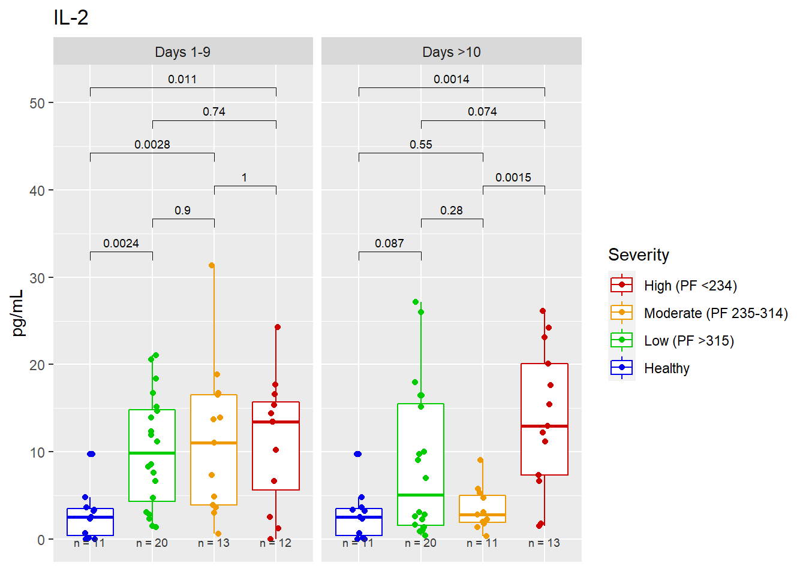
`summarise()` regrouping output by 'id', 'day', 'sfseverity_highest', 'sfratio_lowest', 'daygroup', 'daygroup_box', 'includecyto' (override with `.groups` argument)`summarise()` regrouping output by 'id', 'day', 'sfseverity_highest', 'sfratio_lowest', 'daygroup', 'daygroup_box', 'includecyto' (override with `.groups` argument)`summarise()` regrouping output by 'id', 'day', 'sfseverity_highest', 'sfratio_lowest', 'daygroup', 'daygroup_box', 'includecyto' (override with `.groups` argument)Adding missing grouping variables: `id`, `day`, `sfseverity_highest`, `sfratio_lowest`, `daygroup`, `daygroup_box`, `includecyto`
Adding missing grouping variables: `id`, `day`, `sfseverity_highest`, `sfratio_lowest`, `daygroup`, `daygroup_box`, `includecyto``summarise()` regrouping output by 'id', 'daygroup_box' (override with `.groups` argument)`summarise()` regrouping output by 'daygroup_box' (override with `.groups` argument)Joining, by = "daygroup_box"Warning in wilcox.test.default(c(35.8725300459263, 0, 1.40232293360524, : cannot
compute exact p-value with tiesWarning in wilcox.test.default(c(35.8725300459263, 0, 1.40232293360524, : cannot
compute exact p-value with tiesWarning in wilcox.test.default(c(35.8725300459263, 0, 1.40232293360524, : cannot
compute exact p-value with tiesWarning in wilcox.test.default(c(24.3951222532566, 14.7990306577344,
21.4444988523542, : cannot compute exact p-value with tiesWarning in wilcox.test.default(c(24.3951222532566, 14.7990306577344,
21.4444988523542, : cannot compute exact p-value with tiesWarning in wilcox.test.default(c(1.05614709256263, 29.8529765950896,
20.3768472788262, : cannot compute exact p-value with tiesWarning in wilcox.test.default(c(35.8725300459263, 0, 1.40232293360524, : cannot
compute exact p-value with tiesWarning in wilcox.test.default(c(35.8725300459263, 0, 1.40232293360524, : cannot
compute exact p-value with tiesWarning in wilcox.test.default(c(35.8725300459263, 0, 1.40232293360524, : cannot
compute exact p-value with tiesWarning in wilcox.test.default(c(14.7990306577344, 21.1083199185383,
14.1737665713495, : cannot compute exact p-value with tiesWarning in wilcox.test.default(c(14.7990306577344, 21.1083199185383,
14.1737665713495, : cannot compute exact p-value with tiesWarning in wilcox.test.default(c(0, 0, 12.9386790245958, 0.528073546281313, :
cannot compute exact p-value with tiesWarning in wilcox.test.default(c(35.8725300459263, 0, 1.40232293360524, : cannot
compute exact p-value with tiesWarning in wilcox.test.default(c(35.8725300459263, 0, 1.40232293360524, : cannot
compute exact p-value with tiesWarning in wilcox.test.default(c(35.8725300459263, 0, 1.40232293360524, : cannot
compute exact p-value with tiesWarning in wilcox.test.default(c(24.3951222532566, 14.7990306577344,
21.4444988523542, : cannot compute exact p-value with tiesWarning in wilcox.test.default(c(24.3951222532566, 14.7990306577344,
21.4444988523542, : cannot compute exact p-value with tiesWarning in wilcox.test.default(c(1.05614709256263, 29.8529765950896,
20.3768472788262, : cannot compute exact p-value with tiesWarning in wilcox.test.default(c(35.8725300459263, 0, 1.40232293360524, : cannot
compute exact p-value with tiesWarning in wilcox.test.default(c(35.8725300459263, 0, 1.40232293360524, : cannot
compute exact p-value with tiesWarning in wilcox.test.default(c(35.8725300459263, 0, 1.40232293360524, : cannot
compute exact p-value with tiesWarning in wilcox.test.default(c(14.7990306577344, 21.1083199185383,
14.1737665713495, : cannot compute exact p-value with tiesWarning in wilcox.test.default(c(14.7990306577344, 21.1083199185383,
14.1737665713495, : cannot compute exact p-value with tiesWarning in wilcox.test.default(c(0, 0, 12.9386790245958, 0.528073546281313, :
cannot compute exact p-value with ties`summarise()` regrouping output by 'id', 'day', 'sfseverity_highest', 'sfratio_lowest', 'daygroup', 'daygroup_box', 'includecyto' (override with `.groups` argument)Adding missing grouping variables: `id`, `day`, `sfseverity_highest`, `sfratio_lowest`, `daygroup`, `daygroup_box`, `includecyto`
Adding missing grouping variables: `id`, `day`, `sfseverity_highest`, `sfratio_lowest`, `daygroup`, `daygroup_box`, `includecyto``summarise()` regrouping output by 'id', 'daygroup_box', 'sfratio_lowest' (override with `.groups` argument)`summarise()` regrouping output by 'id', 'day', 'sfseverity_highest', 'sfratio_lowest', 'daygroup', 'daygroup_box', 'includecyto' (override with `.groups` argument)`summarise()` regrouping output by 'id', 'day', 'sfseverity_highest', 'sfratio_lowest', 'daygroup', 'daygroup_box', 'includecyto' (override with `.groups` argument)`summarise()` regrouping output by 'id', 'day', 'sfseverity_highest', 'sfratio_lowest', 'daygroup', 'daygroup_box', 'includecyto' (override with `.groups` argument)Adding missing grouping variables: `id`, `day`, `sfseverity_highest`, `sfratio_lowest`, `daygroup`, `daygroup_box`, `includecyto`
Adding missing grouping variables: `id`, `day`, `sfseverity_highest`, `sfratio_lowest`, `daygroup`, `daygroup_box`, `includecyto``summarise()` regrouping output by 'id', 'daygroup_box' (override with `.groups` argument)`summarise()` regrouping output by 'daygroup_box' (override with `.groups` argument)Joining, by = "daygroup_box"
Warning in wilcox.test.default(c(0, 5.60205047283978, 4.63642657384487, : cannot
compute exact p-value with tiesWarning in wilcox.test.default(c(0, 5.60205047283978, 4.63642657384487, : cannot
compute exact p-value with tiesWarning in wilcox.test.default(c(0, 5.60205047283978, 4.63642657384487, : cannot
compute exact p-value with tiesWarning in wilcox.test.default(c(0, 5.60205047283978, 4.63642657384487, : cannot
compute exact p-value with tiesWarning in wilcox.test.default(c(0, 5.60205047283978, 4.63642657384487, : cannot
compute exact p-value with tiesWarning in wilcox.test.default(c(0, 5.60205047283978, 4.63642657384487, : cannot
compute exact p-value with tiesWarning in wilcox.test.default(c(0, 5.60205047283978, 4.63642657384487, : cannot
compute exact p-value with tiesWarning in wilcox.test.default(c(0, 5.60205047283978, 4.63642657384487, : cannot
compute exact p-value with tiesWarning in wilcox.test.default(c(0, 5.60205047283978, 4.63642657384487, : cannot
compute exact p-value with tiesWarning in wilcox.test.default(c(0, 5.60205047283978, 4.63642657384487, : cannot
compute exact p-value with tiesWarning in wilcox.test.default(c(0, 5.60205047283978, 4.63642657384487, : cannot
compute exact p-value with tiesWarning in wilcox.test.default(c(0, 5.60205047283978, 4.63642657384487, : cannot
compute exact p-value with ties`summarise()` regrouping output by 'id', 'day', 'sfseverity_highest', 'sfratio_lowest', 'daygroup', 'daygroup_box', 'includecyto' (override with `.groups` argument)Adding missing grouping variables: `id`, `day`, `sfseverity_highest`, `sfratio_lowest`, `daygroup`, `daygroup_box`, `includecyto`
Adding missing grouping variables: `id`, `day`, `sfseverity_highest`, `sfratio_lowest`, `daygroup`, `daygroup_box`, `includecyto``summarise()` regrouping output by 'id', 'daygroup_box', 'sfratio_lowest' (override with `.groups` argument)`summarise()` regrouping output by 'id', 'day', 'sfseverity_highest', 'sfratio_lowest', 'daygroup', 'daygroup_box', 'includecyto' (override with `.groups` argument)`summarise()` regrouping output by 'id', 'day', 'sfseverity_highest', 'sfratio_lowest', 'daygroup', 'daygroup_box', 'includecyto' (override with `.groups` argument)`summarise()` regrouping output by 'id', 'day', 'sfseverity_highest', 'sfratio_lowest', 'daygroup', 'daygroup_box', 'includecyto' (override with `.groups` argument)Adding missing grouping variables: `id`, `day`, `sfseverity_highest`, `sfratio_lowest`, `daygroup`, `daygroup_box`, `includecyto`
Adding missing grouping variables: `id`, `day`, `sfseverity_highest`, `sfratio_lowest`, `daygroup`, `daygroup_box`, `includecyto``summarise()` regrouping output by 'id', 'daygroup_box' (override with `.groups` argument)`summarise()` regrouping output by 'daygroup_box' (override with `.groups` argument)Joining, by = "daygroup_box"Warning in wilcox.test.default(c(6.65828776522482, 1.11788850424476,
4.42421888939032, : cannot compute exact p-value with tiesWarning in wilcox.test.default(c(6.65828776522482, 1.11788850424476,
4.42421888939032, : cannot compute exact p-value with tiesWarning in wilcox.test.default(c(6.65828776522482, 1.11788850424476,
4.42421888939032, : cannot compute exact p-value with tiesWarning in wilcox.test.default(c(10.7322939576293, 11.2932775658518,
8.92008453006564, : cannot compute exact p-value with tiesWarning in wilcox.test.default(c(10.7322939576293, 11.2932775658518,
8.92008453006564, : cannot compute exact p-value with tiesWarning in wilcox.test.default(c(4.86310012459809, 13.6929231141409,
11.4794487161005, : cannot compute exact p-value with tiesWarning in wilcox.test.default(c(6.65828776522482, 1.11788850424476,
4.42421888939032, : cannot compute exact p-value with tiesWarning in wilcox.test.default(c(6.65828776522482, 1.11788850424476,
4.42421888939032, : cannot compute exact p-value with tiesWarning in wilcox.test.default(c(6.65828776522482, 1.11788850424476,
4.42421888939032, : cannot compute exact p-value with tiesWarning in wilcox.test.default(c(7.07369044276829, 16.1199075613604,
7.07369044276829, : cannot compute exact p-value with tiesWarning in wilcox.test.default(c(7.07369044276829, 16.1199075613604,
7.07369044276829, : cannot compute exact p-value with tiesWarning in wilcox.test.default(c(6.65828776522482, 1.11788850424476,
4.42421888939032, : cannot compute exact p-value with tiesWarning in wilcox.test.default(c(6.65828776522482, 1.11788850424476,
4.42421888939032, : cannot compute exact p-value with tiesWarning in wilcox.test.default(c(6.65828776522482, 1.11788850424476,
4.42421888939032, : cannot compute exact p-value with tiesWarning in wilcox.test.default(c(10.7322939576293, 11.2932775658518,
8.92008453006564, : cannot compute exact p-value with tiesWarning in wilcox.test.default(c(10.7322939576293, 11.2932775658518,
8.92008453006564, : cannot compute exact p-value with tiesWarning in wilcox.test.default(c(4.86310012459809, 13.6929231141409,
11.4794487161005, : cannot compute exact p-value with tiesWarning in wilcox.test.default(c(6.65828776522482, 1.11788850424476,
4.42421888939032, : cannot compute exact p-value with tiesWarning in wilcox.test.default(c(6.65828776522482, 1.11788850424476,
4.42421888939032, : cannot compute exact p-value with tiesWarning in wilcox.test.default(c(6.65828776522482, 1.11788850424476,
4.42421888939032, : cannot compute exact p-value with tiesWarning in wilcox.test.default(c(7.07369044276829, 16.1199075613604,
7.07369044276829, : cannot compute exact p-value with tiesWarning in wilcox.test.default(c(7.07369044276829, 16.1199075613604,
7.07369044276829, : cannot compute exact p-value with ties`summarise()` regrouping output by 'id', 'day', 'sfseverity_highest', 'sfratio_lowest', 'daygroup', 'daygroup_box', 'includecyto' (override with `.groups` argument)Adding missing grouping variables: `id`, `day`, `sfseverity_highest`, `sfratio_lowest`, `daygroup`, `daygroup_box`, `includecyto`
Adding missing grouping variables: `id`, `day`, `sfseverity_highest`, `sfratio_lowest`, `daygroup`, `daygroup_box`, `includecyto``summarise()` regrouping output by 'id', 'daygroup_box', 'sfratio_lowest' (override with `.groups` argument)`summarise()` regrouping output by 'id', 'day', 'sfseverity_highest', 'sfratio_lowest', 'daygroup', 'daygroup_box', 'includecyto' (override with `.groups` argument)`summarise()` regrouping output by 'id', 'day', 'sfseverity_highest', 'sfratio_lowest', 'daygroup', 'daygroup_box', 'includecyto' (override with `.groups` argument)`summarise()` regrouping output by 'id', 'day', 'sfseverity_highest', 'sfratio_lowest', 'daygroup', 'daygroup_box', 'includecyto' (override with `.groups` argument)Adding missing grouping variables: `id`, `day`, `sfseverity_highest`, `sfratio_lowest`, `daygroup`, `daygroup_box`, `includecyto`
Adding missing grouping variables: `id`, `day`, `sfseverity_highest`, `sfratio_lowest`, `daygroup`, `daygroup_box`, `includecyto``summarise()` regrouping output by 'id', 'daygroup_box' (override with `.groups` argument)`summarise()` regrouping output by 'daygroup_box' (override with `.groups` argument)Joining, by = "daygroup_box"`summarise()` regrouping output by 'id', 'day', 'sfseverity_highest', 'sfratio_lowest', 'daygroup', 'daygroup_box', 'includecyto' (override with `.groups` argument)Adding missing grouping variables: `id`, `day`, `sfseverity_highest`, `sfratio_lowest`, `daygroup`, `daygroup_box`, `includecyto`
Adding missing grouping variables: `id`, `day`, `sfseverity_highest`, `sfratio_lowest`, `daygroup`, `daygroup_box`, `includecyto``summarise()` regrouping output by 'id', 'daygroup_box', 'sfratio_lowest' (override with `.groups` argument)`summarise()` regrouping output by 'id', 'day', 'sfseverity_highest', 'sfratio_lowest', 'daygroup', 'daygroup_box', 'includecyto' (override with `.groups` argument)`summarise()` regrouping output by 'id', 'day', 'sfseverity_highest', 'sfratio_lowest', 'daygroup', 'daygroup_box', 'includecyto' (override with `.groups` argument)`summarise()` regrouping output by 'id', 'day', 'sfseverity_highest', 'sfratio_lowest', 'daygroup', 'daygroup_box', 'includecyto' (override with `.groups` argument)Adding missing grouping variables: `id`, `day`, `sfseverity_highest`, `sfratio_lowest`, `daygroup`, `daygroup_box`, `includecyto`
Adding missing grouping variables: `id`, `day`, `sfseverity_highest`, `sfratio_lowest`, `daygroup`, `daygroup_box`, `includecyto``summarise()` regrouping output by 'id', 'daygroup_box' (override with `.groups` argument)`summarise()` regrouping output by 'daygroup_box' (override with `.groups` argument)Joining, by = "daygroup_box"Warning in wilcox.test.default(c(8.43642705919286, 6.37055851875902,
16.2781531991101, : cannot compute exact p-value with tiesWarning in wilcox.test.default(c(8.43642705919286, 6.37055851875902,
16.2781531991101, : cannot compute exact p-value with tiesWarning in wilcox.test.default(c(27.4483613278513, 17.6734345017409,
21.1881187292096, : cannot compute exact p-value with tiesWarning in wilcox.test.default(c(27.4483613278513, 17.6734345017409,
21.1881187292096, : cannot compute exact p-value with tiesWarning in wilcox.test.default(c(12.7538775688416, 33.6545101435151,
18.3476710850088, : cannot compute exact p-value with tiesWarning in wilcox.test.default(c(8.43642705919286, 6.37055851875902,
16.2781531991101, : cannot compute exact p-value with tiesWarning in wilcox.test.default(c(9.4124988739209, 30.1248311873874,
38.4474432233785, : cannot compute exact p-value with tiesWarning in wilcox.test.default(c(13.5285769363123, 6.58596553208812,
11.2082504995883, : cannot compute exact p-value with tiesWarning in wilcox.test.default(c(8.43642705919286, 6.37055851875902,
16.2781531991101, : cannot compute exact p-value with tiesWarning in wilcox.test.default(c(8.43642705919286, 6.37055851875902,
16.2781531991101, : cannot compute exact p-value with tiesWarning in wilcox.test.default(c(27.4483613278513, 17.6734345017409,
21.1881187292096, : cannot compute exact p-value with tiesWarning in wilcox.test.default(c(27.4483613278513, 17.6734345017409,
21.1881187292096, : cannot compute exact p-value with tiesWarning in wilcox.test.default(c(12.7538775688416, 33.6545101435151,
18.3476710850088, : cannot compute exact p-value with tiesWarning in wilcox.test.default(c(8.43642705919286, 6.37055851875902,
16.2781531991101, : cannot compute exact p-value with tiesWarning in wilcox.test.default(c(9.4124988739209, 30.1248311873874,
38.4474432233785, : cannot compute exact p-value with tiesWarning in wilcox.test.default(c(13.5285769363123, 6.58596553208812,
11.2082504995883, : cannot compute exact p-value with ties`summarise()` regrouping output by 'id', 'day', 'sfseverity_highest', 'sfratio_lowest', 'daygroup', 'daygroup_box', 'includecyto' (override with `.groups` argument)Adding missing grouping variables: `id`, `day`, `sfseverity_highest`, `sfratio_lowest`, `daygroup`, `daygroup_box`, `includecyto`
Adding missing grouping variables: `id`, `day`, `sfseverity_highest`, `sfratio_lowest`, `daygroup`, `daygroup_box`, `includecyto``summarise()` regrouping output by 'id', 'daygroup_box', 'sfratio_lowest' (override with `.groups` argument)`summarise()` regrouping output by 'id', 'day', 'sfseverity_highest', 'sfratio_lowest', 'daygroup', 'daygroup_box', 'includecyto' (override with `.groups` argument)`summarise()` regrouping output by 'id', 'day', 'sfseverity_highest', 'sfratio_lowest', 'daygroup', 'daygroup_box', 'includecyto' (override with `.groups` argument)`summarise()` regrouping output by 'id', 'day', 'sfseverity_highest', 'sfratio_lowest', 'daygroup', 'daygroup_box', 'includecyto' (override with `.groups` argument)Adding missing grouping variables: `id`, `day`, `sfseverity_highest`, `sfratio_lowest`, `daygroup`, `daygroup_box`, `includecyto`
Adding missing grouping variables: `id`, `day`, `sfseverity_highest`, `sfratio_lowest`, `daygroup`, `daygroup_box`, `includecyto``summarise()` regrouping output by 'id', 'daygroup_box' (override with `.groups` argument)`summarise()` regrouping output by 'daygroup_box' (override with `.groups` argument)Joining, by = "daygroup_box"Warning in wilcox.test.default(c(0, 0, 4.97923250253233, 0, 0, 0,
4.27988716636205, : cannot compute exact p-value with tiesWarning in wilcox.test.default(c(0, 0, 4.97923250253233, 0, 0, 0,
4.27988716636205, : cannot compute exact p-value with tiesWarning in wilcox.test.default(c(0, 0, 4.97923250253233, 0, 0, 0,
4.27988716636205, : cannot compute exact p-value with tiesWarning in wilcox.test.default(c(36.6571455488067, 22.2666266629113,
34.4107110361141, : cannot compute exact p-value with tiesWarning in wilcox.test.default(c(36.6571455488067, 22.2666266629113,
34.4107110361141, : cannot compute exact p-value with tiesWarning in wilcox.test.default(c(1.55795942558962, 29.6840946566244,
19.2851474754344, : cannot compute exact p-value with tiesWarning in wilcox.test.default(c(0, 0, 4.97923250253233, 0, 0, 0,
4.27988716636205, : cannot compute exact p-value with tiesWarning in wilcox.test.default(c(0, 0, 4.97923250253233, 0, 0, 0,
4.27988716636205, : cannot compute exact p-value with tiesWarning in wilcox.test.default(c(0, 0, 4.97923250253233, 0, 0, 0,
4.27988716636205, : cannot compute exact p-value with tiesWarning in wilcox.test.default(c(17.712578269063, 0, 25.0720826460732,
13.278421154364, : cannot compute exact p-value with tiesWarning in wilcox.test.default(c(17.712578269063, 0, 25.0720826460732,
13.278421154364, : cannot compute exact p-value with tiesWarning in wilcox.test.default(c(0, 7.69953447007425, 13.0549991219051, : cannot
compute exact p-value with tiesWarning in wilcox.test.default(c(0, 0, 4.97923250253233, 0, 0, 0,
4.27988716636205, : cannot compute exact p-value with tiesWarning in wilcox.test.default(c(0, 0, 4.97923250253233, 0, 0, 0,
4.27988716636205, : cannot compute exact p-value with tiesWarning in wilcox.test.default(c(0, 0, 4.97923250253233, 0, 0, 0,
4.27988716636205, : cannot compute exact p-value with tiesWarning in wilcox.test.default(c(36.6571455488067, 22.2666266629113,
34.4107110361141, : cannot compute exact p-value with tiesWarning in wilcox.test.default(c(36.6571455488067, 22.2666266629113,
34.4107110361141, : cannot compute exact p-value with tiesWarning in wilcox.test.default(c(1.55795942558962, 29.6840946566244,
19.2851474754344, : cannot compute exact p-value with tiesWarning in wilcox.test.default(c(0, 0, 4.97923250253233, 0, 0, 0,
4.27988716636205, : cannot compute exact p-value with tiesWarning in wilcox.test.default(c(0, 0, 4.97923250253233, 0, 0, 0,
4.27988716636205, : cannot compute exact p-value with tiesWarning in wilcox.test.default(c(0, 0, 4.97923250253233, 0, 0, 0,
4.27988716636205, : cannot compute exact p-value with tiesWarning in wilcox.test.default(c(17.712578269063, 0, 25.0720826460732,
13.278421154364, : cannot compute exact p-value with tiesWarning in wilcox.test.default(c(17.712578269063, 0, 25.0720826460732,
13.278421154364, : cannot compute exact p-value with tiesWarning in wilcox.test.default(c(0, 7.69953447007425, 13.0549991219051, : cannot
compute exact p-value with ties`summarise()` regrouping output by 'id', 'day', 'sfseverity_highest', 'sfratio_lowest', 'daygroup', 'daygroup_box', 'includecyto' (override with `.groups` argument)Adding missing grouping variables: `id`, `day`, `sfseverity_highest`, `sfratio_lowest`, `daygroup`, `daygroup_box`, `includecyto`
Adding missing grouping variables: `id`, `day`, `sfseverity_highest`, `sfratio_lowest`, `daygroup`, `daygroup_box`, `includecyto``summarise()` regrouping output by 'id', 'daygroup_box', 'sfratio_lowest' (override with `.groups` argument)`summarise()` regrouping output by 'id', 'day', 'sfseverity_highest', 'sfratio_lowest', 'daygroup', 'daygroup_box', 'includecyto' (override with `.groups` argument)`summarise()` regrouping output by 'id', 'day', 'sfseverity_highest', 'sfratio_lowest', 'daygroup', 'daygroup_box', 'includecyto' (override with `.groups` argument)`summarise()` regrouping output by 'id', 'day', 'sfseverity_highest', 'sfratio_lowest', 'daygroup', 'daygroup_box', 'includecyto' (override with `.groups` argument)Adding missing grouping variables: `id`, `day`, `sfseverity_highest`, `sfratio_lowest`, `daygroup`, `daygroup_box`, `includecyto`
Adding missing grouping variables: `id`, `day`, `sfseverity_highest`, `sfratio_lowest`, `daygroup`, `daygroup_box`, `includecyto``summarise()` regrouping output by 'id', 'daygroup_box' (override with `.groups` argument)`summarise()` regrouping output by 'daygroup_box' (override with `.groups` argument)Joining, by = "daygroup_box"Warning in wilcox.test.default(c(7.07168424948084, 0, 30.3762246117175, : cannot
compute exact p-value with tiesWarning in wilcox.test.default(c(7.07168424948084, 0, 30.3762246117175, : cannot
compute exact p-value with tiesWarning in wilcox.test.default(c(176.311587490281, 77.1985015951344,
161.480029374495, : cannot compute exact p-value with tiesWarning in wilcox.test.default(c(176.311587490281, 77.1985015951344,
161.480029374495, : cannot compute exact p-value with tiesWarning in wilcox.test.default(c(7.07168424948084, 0, 30.3762246117175, : cannot
compute exact p-value with tiesWarning in wilcox.test.default(c(64.8702907207571, 108.305637568537,
6.39495061348644, : cannot compute exact p-value with tiesWarning in wilcox.test.default(c(64.8702907207571, 108.305637568537,
6.39495061348644, : cannot compute exact p-value with tiesWarning in wilcox.test.default(c(71.3888600158438, 24.2345579059664,
17.3548312996674, : cannot compute exact p-value with tiesWarning in wilcox.test.default(c(7.07168424948084, 0, 30.3762246117175, : cannot
compute exact p-value with tiesWarning in wilcox.test.default(c(7.07168424948084, 0, 30.3762246117175, : cannot
compute exact p-value with tiesWarning in wilcox.test.default(c(176.311587490281, 77.1985015951344,
161.480029374495, : cannot compute exact p-value with tiesWarning in wilcox.test.default(c(176.311587490281, 77.1985015951344,
161.480029374495, : cannot compute exact p-value with tiesWarning in wilcox.test.default(c(7.07168424948084, 0, 30.3762246117175, : cannot
compute exact p-value with tiesWarning in wilcox.test.default(c(64.8702907207571, 108.305637568537,
6.39495061348644, : cannot compute exact p-value with tiesWarning in wilcox.test.default(c(64.8702907207571, 108.305637568537,
6.39495061348644, : cannot compute exact p-value with tiesWarning in wilcox.test.default(c(71.3888600158438, 24.2345579059664,
17.3548312996674, : cannot compute exact p-value with ties`summarise()` regrouping output by 'id', 'day', 'sfseverity_highest', 'sfratio_lowest', 'daygroup', 'daygroup_box', 'includecyto' (override with `.groups` argument)Adding missing grouping variables: `id`, `day`, `sfseverity_highest`, `sfratio_lowest`, `daygroup`, `daygroup_box`, `includecyto`
Adding missing grouping variables: `id`, `day`, `sfseverity_highest`, `sfratio_lowest`, `daygroup`, `daygroup_box`, `includecyto``summarise()` regrouping output by 'id', 'daygroup_box', 'sfratio_lowest' (override with `.groups` argument)`summarise()` regrouping output by 'id', 'day', 'sfseverity_highest', 'sfratio_lowest', 'daygroup', 'daygroup_box', 'includecyto' (override with `.groups` argument)`summarise()` regrouping output by 'id', 'day', 'sfseverity_highest', 'sfratio_lowest', 'daygroup', 'daygroup_box', 'includecyto' (override with `.groups` argument)`summarise()` regrouping output by 'id', 'day', 'sfseverity_highest', 'sfratio_lowest', 'daygroup', 'daygroup_box', 'includecyto' (override with `.groups` argument)Adding missing grouping variables: `id`, `day`, `sfseverity_highest`, `sfratio_lowest`, `daygroup`, `daygroup_box`, `includecyto`
Adding missing grouping variables: `id`, `day`, `sfseverity_highest`, `sfratio_lowest`, `daygroup`, `daygroup_box`, `includecyto``summarise()` regrouping output by 'id', 'daygroup_box' (override with `.groups` argument)`summarise()` regrouping output by 'daygroup_box' (override with `.groups` argument)Joining, by = "daygroup_box"`summarise()` regrouping output by 'id', 'day', 'sfseverity_highest', 'sfratio_lowest', 'daygroup', 'daygroup_box', 'includecyto' (override with `.groups` argument)Adding missing grouping variables: `id`, `day`, `sfseverity_highest`, `sfratio_lowest`, `daygroup`, `daygroup_box`, `includecyto`
Adding missing grouping variables: `id`, `day`, `sfseverity_highest`, `sfratio_lowest`, `daygroup`, `daygroup_box`, `includecyto``summarise()` regrouping output by 'id', 'daygroup_box', 'sfratio_lowest' (override with `.groups` argument)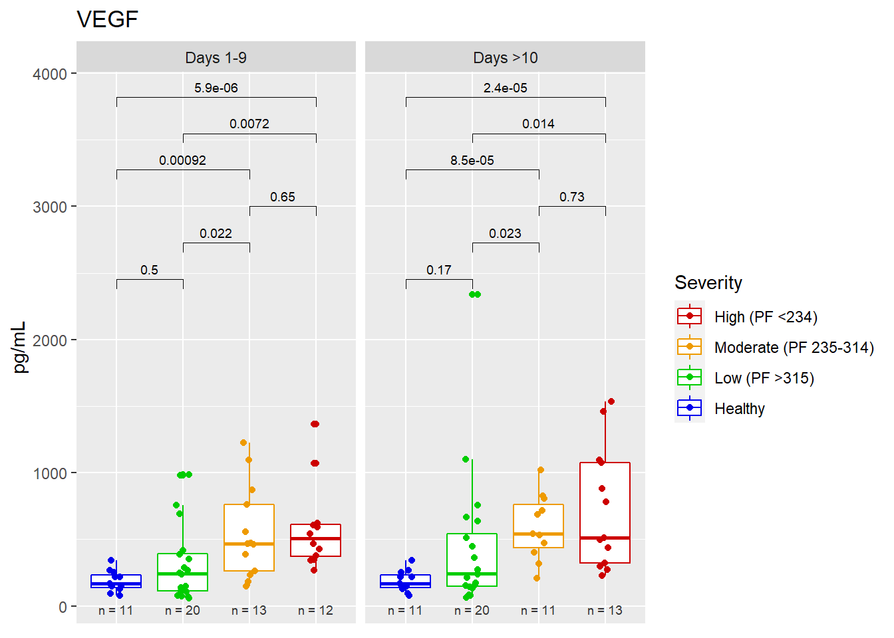
`summarise()` regrouping output by 'id', 'day', 'sfseverity_highest', 'sfratio_lowest', 'daygroup', 'daygroup_box', 'includecyto' (override with `.groups` argument)`summarise()` regrouping output by 'id', 'day', 'sfseverity_highest', 'sfratio_lowest', 'daygroup', 'daygroup_box', 'includecyto' (override with `.groups` argument)`summarise()` regrouping output by 'id', 'day', 'sfseverity_highest', 'sfratio_lowest', 'daygroup', 'daygroup_box', 'includecyto' (override with `.groups` argument)Adding missing grouping variables: `id`, `day`, `sfseverity_highest`, `sfratio_lowest`, `daygroup`, `daygroup_box`, `includecyto`
Adding missing grouping variables: `id`, `day`, `sfseverity_highest`, `sfratio_lowest`, `daygroup`, `daygroup_box`, `includecyto``summarise()` regrouping output by 'id', 'daygroup_box' (override with `.groups` argument)`summarise()` regrouping output by 'daygroup_box' (override with `.groups` argument)Joining, by = "daygroup_box"Warning in wilcox.test.default(c(0, 0, 0, 0, 0, 7.8365769372525,
2.53824793769183, : cannot compute exact p-value with tiesWarning in wilcox.test.default(c(0, 0, 0, 0, 0, 7.8365769372525,
2.53824793769183, : cannot compute exact p-value with tiesWarning in wilcox.test.default(c(0, 0, 0, 0, 0, 7.8365769372525,
2.53824793769183, : cannot compute exact p-value with tiesWarning in wilcox.test.default(c(22.2728232405168, 13.2023145177084,
11.9620122950721, : cannot compute exact p-value with tiesWarning in wilcox.test.default(c(22.2728232405168, 13.2023145177084,
11.9620122950721, : cannot compute exact p-value with tiesWarning in wilcox.test.default(c(6.10849811199068, 29.1477658996587,
13.5387344540697, : cannot compute exact p-value with tiesWarning in wilcox.test.default(c(0, 0, 0, 0, 0, 7.8365769372525,
2.53824793769183, : cannot compute exact p-value with tiesWarning in wilcox.test.default(c(0, 0, 0, 0, 0, 7.8365769372525,
2.53824793769183, : cannot compute exact p-value with tiesWarning in wilcox.test.default(c(0, 0, 0, 0, 0, 7.8365769372525,
2.53824793769183, : cannot compute exact p-value with tiesWarning in wilcox.test.default(c(10.1018299747629, 19.0601650067514,
7.32039640833722, : cannot compute exact p-value with tiesWarning in wilcox.test.default(c(10.1018299747629, 19.0601650067514,
7.32039640833722, : cannot compute exact p-value with tiesWarning in wilcox.test.default(c(0, 0, 0, 0, 9.30353972256084, 0,
0.508697779505772, : cannot compute exact p-value with tiesWarning in wilcox.test.default(c(0, 0, 0, 0, 0, 7.8365769372525,
2.53824793769183, : cannot compute exact p-value with tiesWarning in wilcox.test.default(c(0, 0, 0, 0, 0, 7.8365769372525,
2.53824793769183, : cannot compute exact p-value with tiesWarning in wilcox.test.default(c(0, 0, 0, 0, 0, 7.8365769372525,
2.53824793769183, : cannot compute exact p-value with tiesWarning in wilcox.test.default(c(22.2728232405168, 13.2023145177084,
11.9620122950721, : cannot compute exact p-value with tiesWarning in wilcox.test.default(c(22.2728232405168, 13.2023145177084,
11.9620122950721, : cannot compute exact p-value with tiesWarning in wilcox.test.default(c(6.10849811199068, 29.1477658996587,
13.5387344540697, : cannot compute exact p-value with tiesWarning in wilcox.test.default(c(0, 0, 0, 0, 0, 7.8365769372525,
2.53824793769183, : cannot compute exact p-value with tiesWarning in wilcox.test.default(c(0, 0, 0, 0, 0, 7.8365769372525,
2.53824793769183, : cannot compute exact p-value with tiesWarning in wilcox.test.default(c(0, 0, 0, 0, 0, 7.8365769372525,
2.53824793769183, : cannot compute exact p-value with tiesWarning in wilcox.test.default(c(10.1018299747629, 19.0601650067514,
7.32039640833722, : cannot compute exact p-value with tiesWarning in wilcox.test.default(c(10.1018299747629, 19.0601650067514,
7.32039640833722, : cannot compute exact p-value with tiesWarning in wilcox.test.default(c(0, 0, 0, 0, 9.30353972256084, 0,
0.508697779505772, : cannot compute exact p-value with ties`summarise()` regrouping output by 'id', 'day', 'sfseverity_highest', 'sfratio_lowest', 'daygroup', 'daygroup_box', 'includecyto' (override with `.groups` argument)Adding missing grouping variables: `id`, `day`, `sfseverity_highest`, `sfratio_lowest`, `daygroup`, `daygroup_box`, `includecyto`
Adding missing grouping variables: `id`, `day`, `sfseverity_highest`, `sfratio_lowest`, `daygroup`, `daygroup_box`, `includecyto``summarise()` regrouping output by 'id', 'daygroup_box', 'sfratio_lowest' (override with `.groups` argument)[[1]]
NULL
[[2]]
NULL
[[3]]
NULL
[[4]]
NULL
[[5]]
NULL
[[6]]
NULL
[[7]]
NULL
[[8]]
NULL
[[9]]
NULL
[[10]]
NULL
[[11]]
NULL
[[12]]
NULL
[[13]]
NULL
[[14]]
NULL
[[15]]
NULL
[[16]]
NULL
[[17]]
NULL
[[18]]
NULL
[[19]]
NULL
[[20]]
NULL
[[21]]
NULL
[[22]]
NULL
[[23]]
NULL
[[24]]
NULL
[[25]]
NULL
[[26]]
NULL
[[27]]
NULL
[[28]]
NULL
[[29]]
NULL
[[30]]
NULL########################
# EXCEL EXPORT #
########################
# QC: Duplicates marked and grouped
tib_cytokines_dups_all %>%
writexl::write_xlsx(paste0(STR_DATA_DIR_CYTOKINE, "cytokine_duplicates.xlsx"))
# All cytokine data
tib_cytokine_data_save %>%
writexl::write_xlsx(paste0(STR_DATA_DIR_CYTOKINE, "cytokine_all.xlsx"))
sessionInfo()R version 4.0.2 (2020-06-22)
Platform: x86_64-w64-mingw32/x64 (64-bit)
Running under: Windows 10 x64 (build 18362)
Matrix products: default
locale:
[1] LC_COLLATE=English_United States.1252
[2] LC_CTYPE=English_United States.1252
[3] LC_MONETARY=English_United States.1252
[4] LC_NUMERIC=C
[5] LC_TIME=English_United States.1252
system code page: 932
attached base packages:
[1] stats graphics grDevices utils datasets methods base
other attached packages:
[1] Hmisc_4.4-1 lattice_0.20-41 Formula_1.2-3 survival_3.2-3
[5] lubridate_1.7.9 ggpubr_0.4.0 ggpmisc_0.3.6 patchwork_1.0.1
[9] gridExtra_2.3 reticulate_1.16 forcats_0.5.0 stringr_1.4.0
[13] dplyr_1.0.2 purrr_0.3.4 readr_1.3.1 tidyr_1.1.2
[17] tibble_3.0.3 ggplot2_3.3.2 tidyverse_1.3.0 workflowr_1.6.2
loaded via a namespace (and not attached):
[1] nlme_3.1-149 fs_1.5.0 RColorBrewer_1.1-2
[4] httr_1.4.2 rprojroot_1.3-2 tools_4.0.2
[7] backports_1.1.9 R6_2.4.1 rpart_4.1-15
[10] mgcv_1.8-33 DBI_1.1.0 colorspace_1.4-1
[13] nnet_7.3-14 withr_2.2.0 tidyselect_1.1.0
[16] curl_4.3 compiler_4.0.2 git2r_0.27.1
[19] cli_2.0.2 rvest_0.3.6 htmlTable_2.0.1
[22] xml2_1.3.2 labeling_0.3 checkmate_2.0.0
[25] scales_1.1.1 rappdirs_0.3.1 digest_0.6.25
[28] foreign_0.8-80 rmarkdown_2.3 rio_0.5.16
[31] jpeg_0.1-8.1 base64enc_0.1-3 pkgconfig_2.0.3
[34] htmltools_0.5.0 dbplyr_1.4.4 htmlwidgets_1.5.1
[37] rlang_0.4.7 readxl_1.3.1 rstudioapi_0.11
[40] farver_2.0.3 generics_0.0.2 jsonlite_1.7.1
[43] zip_2.1.1 car_3.0-9 magrittr_1.5
[46] polynom_1.4-0 Matrix_1.2-18 Rcpp_1.0.5
[49] munsell_0.5.0 fansi_0.4.1 abind_1.4-5
[52] lifecycle_0.2.0 stringi_1.5.3 whisker_0.4
[55] yaml_2.2.1 carData_3.0-4 grid_4.0.2
[58] blob_1.2.1 promises_1.1.1 crayon_1.3.4
[61] haven_2.3.1 splines_4.0.2 hms_0.5.3
[64] knitr_1.29 pillar_1.4.6 ggsignif_0.6.0
[67] reprex_0.3.0 glue_1.4.2 evaluate_0.14
[70] latticeExtra_0.6-29 data.table_1.13.0 modelr_0.1.8
[73] vctrs_0.3.4 png_0.1-7 httpuv_1.5.4
[76] cellranger_1.1.0 gtable_0.3.0 assertthat_0.2.1
[79] xfun_0.17 openxlsx_4.1.5 broom_0.7.0
[82] rstatix_0.6.0 later_1.1.0.1 writexl_1.3.1
[85] cluster_2.1.0 ellipsis_0.3.1